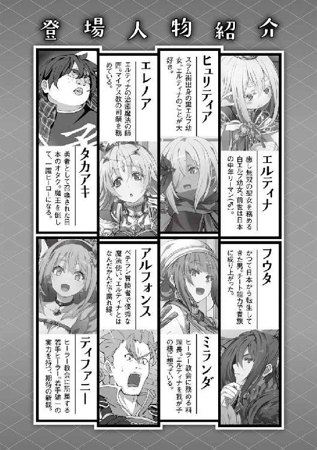

| 食いしん坊エルフ2 | |
| なっとうごはん | |
| (2016) | |
魔族との戦争も落ち着き、６歳となった白エルフ聖女エルティナ（中身おっさん）は、親友の黒エルフ・ヒュリティアと共に小学校へ通うことに。そこには人間・ゴブリン・スライム・オークなど様々な種族の子供たちが集結し、日々勉学に励んでいた。すぐに皆と打ち解けたエルティナはクラスの料理番に就任し、捕えたモンスターを美味しく食べたりして、学園生活を存分に楽しんでいた。だが、そこに突然凶悪な怪物ガルンドラゴンが現れ、クラスメイトたちを強襲する！ ――友情もグルメもまとめてゲッツする。それが食いしん坊エルフの誓い。
イラスト●らむ屋
デザイン●木村デザイン・ラボ

「学校？」
「はい、聖女様も六歳になられましたので是非」
季節は三月初旬。雪も解け始めて暖かさが増している。
先日、無事に六歳になった俺にデルケット爺さんが入学を勧めてきた。
今俺は、ヒーラー協会のギルドマスターの部屋にある、黒いソファーに座っていた。
綺麗に整頓された資料に、綺麗に片づいている机、小洒落たインテリア、シックで落ち着いた大人の部屋であった。ギルドマスターの趣味なのだろうか？ 大量のティーカップやスプーン、珍しい紅茶などが棚に陳列されていた。これらは観賞用らしい。
「学校ねぇ？」
ここ王都フィリミシアには、王国運営の巨大教育施設があるそうな。
優秀な人材を発掘するために設立したらしい。どの世界でも人材に苦労するのは同じようである。入学費や授業料は基本無料、しかも給食が支給されるらしい。
超破格の待遇なので大抵の子供は学校に入学するそうだ。
「仕事が......あるんですがねぇ？」
そう、俺は仕事持ちである。サラリーマンなのだよ!?
最近は主に、爺ちゃん婆ちゃんに引っ張りだこなのだよっ！
俺の『ヒール』は関節痛に良く効くって話が広まって、現在では治療所は爺ちゃん婆ちゃんの寄り合い所みたくなっている。
「それならば問題はありません。ティファニーさんもランクがＡになられましたし、聖女様が抜ける穴もきちんとカバーできるでしょう」
と言ったのはギルドマスターのレイエンさん。『魔族戦争』にて無茶が祟り寝込んでいたが、ようやく調子が良くなって復帰したのだ。
「授業も午前九時に開始して、午後三時には大抵終了しますし、小学部は週三回程度の授業です。シフトを調整すれば問題ないでしょう。それに......友達は作った方がいいですよ？」
と彼はにっこり笑って、美味しそうな紅茶をテーブルに置いてくれた。
「ありがとう。いただきます」
俺は紅茶に口を付けた。ほぅ、流石レイエンさん。紅茶の温度が良い塩梅だ！ 熱過ぎず、ぬる過ぎず......紅茶の旨みが良く出ている。
「美味しい！」
と俺は絶賛した！ ちなみに俺は砂糖を入れない派だ。
「それは何よりです」
と嬉しそうなレイエンさん。
俺は紅茶の味を楽しみながら、レイエンさんの言ったことを考えた。
ふむ、一理ある。同年代の知り合いがヒーちゃんしかいないというのは問題ではないか？ どうせお金はかからないのだし、こちらに損害はない。仕事も続けられるので、お金の問題もクリアーしている。おぉう、まったく問題ない！
「わかった、学校に行ってみようかな？」
ぶっちゃけると授業は......ほぼ無用である。だって、初代の知識あるし。初代はそこの卒業生だし！ つまり俺の学校での目的は友人の発掘である。ここでは年上の知り合いは増えるが、同年代の友人は増える見込みがなかった。今までは仕事のこともあり、同年代の友人など考えたこともなかったが、よくよく考えたら不自然だ。いた方が良いだろう。
嬉しそうに「手続きをしておきます」と言い、帰っていったデルケット爺さん。彼には世話ばっかりかけている気がするなぁ？ 今度、肩でもトントンしてやるか......。
「ヒーちゃん、俺は学校に行くぞ」
「......いきなりね？ 私も学校に行くわよ？」
俺の部屋に遊びに来た、現在唯一の同年代の友人ヒュリティアに、入学することを報告していた。彼女はスラム街に住む黒エルフの少女だ。最近はヒーラー協会のお風呂に入ってるので、以前のように薄汚れていない。やったね！ ヒーちゃん!!
だが、このホットな情報にも、眉一つ動かさないとは流石だなと感心する。
「私の場合は、生活費が浮くからだけど......エルは何が目的なの？ エルは聖女だし、Ｓランクヒーラーなのだから、別に学校に行かなくても問題ないんじゃないかしら？」
うん、まったくもって、そのとおりなんだけどねっ!? でも、人生にはもっと大切なものがあるんだよ!? そう......それはっ！
「学校には、友達を作りに行くのだ！」
ヒュリティアは「ふ〜ん」と興味なさそうに答えた。素っ気なさ過ぎぃ！
「......相変わらずエルの部屋は簡素ね？ 私の家より物がないわ」
とヒュリティアが言った。
ううむ？ 確かに簡素かもしれない。寝るためのベッド、手の届かないタンス。
あとは机に椅子だ。......あ、ゴミ箱もあるよ！ 使ってないけど。
「ふきゅん。物はないが生き物は沢山いるぞ？」
俺の部屋では相も変わらず、野良ビースト達が思い思いの場所でくつろいでいた。寒くなって雪が降った時などは俺の部屋が、わんこやにゃんこで満載になる。もっふもふだっ！ 今はだいぶ暖かくなってきたので、寒がりな野良にゃんこ達が主なもふもふだ。
「それでも結構物は増えたぞ？ そこの化粧鏡とか、化粧鏡とか、化粧鏡とか......」
「化粧鏡しか増えてないじゃないの」
はい、そうです！ 一応、服とかも増えたんだけど『フリースペース』に突っ込んでるから、実質増えたのは化粧鏡だけなんだよね！ ちなみに、この化粧鏡はエレノアさんのお古を譲り受けたものである。大切に使われていたのがわかる......大切にしよう。
「ちゃんと使っているの？ 使ってあげないと鏡が可哀想よ？」
「毎朝、顔見るのに使ってるんだぜ」
朝起きて顔を見れば、その日の体調がわかる。体調が悪ければ顔に表れるからな！
でもって......魔法で、ぱぱっと治して終わり！ 簡単だろ？
「それもいいけど......きちんと身嗜み用に使ってあげなさいよ。エルは素が良いのに、洒落っ気がないから勿体ないわ」
とベッドの上で丸くなっていた野良にゃんこの頭をコチョコチョしながら俺に言った。
コチョコチョされている野良にゃんこは、とても気持ち良さげに目を細めてされるがままでいた。そんなに気持ち良いなら、後で俺もしてもらおうかな？（野心）
「まぁ......私が言えた立場じゃないけどね？」
と肩をすくめて自虐的に笑う彼女。確かに......今のヒュリティアは洒落っ気など皆無だ。それはそうだろう。そんな物に金をかけるくらいなら、今日食べるご飯にお金を使わなければ、飢えてしまうのだから。今着ている服も死んだ母親の服をお姉さんが手直しして、ヒュリティアが着れるようにした物らしい。髪に付けているアクセサリーも母親の形見の品だそうだ。
俺と違って、ヒュリティア達は桃先生を創り出すことができない。常に飢えと隣り合わせで生きてきたのだ。そんな彼女に、お洒落などできるわけがなかった。
「これから学校で勉強して、お洒落ができるくらい稼げるようになろうぜ」
俺はヒュリティアに気休めを言った。少しくらいは希望を持ってもらいたいからだ。
ヒュリティアは着飾れば、絶対に輝く素質を持っている！（確信）
それに......ヒュリティアは、俺と同年代の初めての友人だ。協力を惜しまないぜっ！
「そうね......ありがとう。学校に行けば、少しは自分が変わるかもね？ 学校でいっぱい学んで、そしていっぱい稼いでお洒落してやるわ」
......と言って、にっこり笑うヒュリティア。笑顔がまぶちぃ！
「その意気だぜ！ 俺も協力を惜しまない！ ヒーちゃんを着飾ってくれるわっ！」
ヒュリティアの学校での目標が決まった。そして、その日は学校で何をするかで会話に花を咲かせたのであった。
「良くお似合いですよ！ エルティナ様！」
俺は今、服屋『エレガントチルドレン』に来ていた。目的は学校で着る制服の寸法を測るためである。
「そうか？ 御世辞でも嬉しいぜっ！」
まぁ......測り終わって三十分ほど、服を物色していたら完成していたのだが。なかなかに仕事が早くて見事だと感心するが、どこもおかしくはなかった。
仕上がった制服は水色のブレザーだ。清々しい綺麗な色で俺はとても気に入った。
胸元の大きい桃色のリボンも特徴的だ。素材は丈夫な生地で作られているようだが、成長も見越して価格を抑えた品物を作っているらしい。しかし、御下がりに使う分には問題ない程度の丈夫さも備えている。これが、職人のこだわりという物だろうか？ そして、白いソックスに茶色の小さな革の靴もセットで購入してある。
早速、仕上がった学生服に袖を通す。新品の服の真新しい独特の匂いが俺の鼻腔に流れ込んできた。俺はこの匂いは決して嫌いではない。服というものは、着続けている内に自分の匂いに染まって気にならなくなるからなぁ......この匂いを楽しめるのは、少しの間だけということになる。俺も転生前の学生時代、当然のように学生服を着こんでいたが、この世界に転生して物のありがたみに気付いて以来、職人の凄さを実感したわけで......。
「これは、良い物だぁぁぁぁぁぁっ!!」
......と両手を上げて満面の笑みで言い放った。
実際、新品の服を着る時の高揚感が俺に雄叫びを上げさせたのだ。奥で店内の様子を窺っていた職人の目に、光る物があったのを俺はしっかりと確認した。
ありがとうよ、おっちゃん。成長したらまた来るぜ......。
「どやぁ......」
「はっはっは、よぉお似合いですなぁ......聖女様ぁ」
俺はデイモンド爺さんの家に、学校の制服をお披露目にやってきていた。
もちろん、エレノアさんも一緒だ。というか、一緒じゃないとスラストさんに、またお仕置きされてしまうからな！ そう何度も、一時的に身長を伸ばしたくはない！（白目）
デイモンド爺さんが目を覚まして数ヶ月経つが......いまだに立って歩くことが難しいそうだ。やはり無理が祟ったのか、かなり体にガタがきているらしい。
それでも、デイモンド爺さんは毎日を笑って過ごしている。その表情は、何かをやりきった人間の表情だ。そして......それは、いずれ来る自分の死を受け入れている人間の表情でもある。
「はい、モモセンセイを切り分けてきましたよ」
エレノアさんが、桃先生を食べやすいように台所で切り分けてくれた。
皮は付けたままだ、実と皮の間に一番栄養が詰まっている......とだれかが言っていた気がする。だれだったかな......？ そうそう、エミール姉だ。
一番、栄養摂ったらダメな人じゃないですか......やだー。
「これはこれは......相変わらず美味しそうですなぁ、早速いただきまさぁ」
しばらく、シャクッ、シャクッと桃先生を食べる音が部屋に響く。外からは子供達の騒ぎ声が聞こえてきた。
デイモンド爺さんの家は、フィリミシアの南西に存在するスラム地区にある。平屋の一戸建てで、築五十五年だそうな。この家も相当にガタがきている。壁のところどころにはヒビが入っているし、ドアの建て付けも悪く、ギィギィと悲鳴を上げている。窓の建て付けも悪くなっており幾つかの窓は開かない。以前「直さないのか？」とデイモンド爺さんに聞いたのだが......。
「はっはっは、この家もわしもいい歳になりやした、これはこれで、良い味が出てると思いまさぁ。そもそも......先立つ物もありませんしなぁ？」
そう言って、にかっと笑ったのだ。デイモンド爺さんはこの家と共に、最期を迎えるつもりなのだろう。
この家はデイモンド爺さんが現役のヒーラーの時、とても苦労して購入したものらしい。それ故に思い入れも強いようだ。辛い時も苦しい時も、この家は静かにデイモンド爺さんの帰りを待っていてくれたのだから......。
「ただいま戻りました、ありがとうございます、エルティナ様、エレノア様」
ネーシャさんが買い物から帰ってきた。現在、ネーシャさんがデイモンド爺さんの、身の回りの世話を手伝ってくれている。流石に付きっきりとはいかないが、朝と昼と夜までデイモンド爺さんの世話をしている。あれ？ これ殆ど付きっきりじゃね？
「わしは......幸せ者なんじゃろうなぁ」
デイモンド爺さんに家族はいない。親戚もいないそうだ。ずっと独りで生活してきたらしい。したがって、この家にこんなに人がいることは今までなかったそうだ。
ネーシャさんが淹れた緑茶を啜るデイモンド爺さん。
デイモンド爺さんの横顔を眺めつつ......少しでも長生きしてくれるには、どうすれば良いか考える俺であった。
時は少し流れ四月初旬。今日は入学式の日である。俺は学校の制服を身に纏い、エレノアさんに手を引かれ学校へと向かう。今日入学する学校は、フィリミシアの西側にあると言っていた。学校の名は『王立ラングステン学校』。
国の名を冠する、千年を超える歴史を持つ学校だそうな。
「でけぇっ!!」
素直な俺の感想だ。綺麗な装飾が施された、白く巨大な門が姿を現した。そして門には、しっかりと門番らしき鋭い槍を持った兵士が十数名、油断なく......こいつ、立ったまま寝てやがる!? ......なんか、超油断しているやつもいるが万全の態勢で守っていた。
「大きな門でしょう？ この門の先がラングステン学校になります。非常に広いので迷子にならないように、しっかりと手を握っていてくださいね？」
俺達は門を潜り、学校の敷地内へと進んで行った。
「うおぉぉぉ......なんじゃこりゃあ？ これ全部、学校の施設か......!?」
敷地面積どんだけよ？ と言うくらい馬鹿げた広さの学校施設が姿を現した。
行き交う大勢の人々、制服を着ているので生徒だろう。
「うおっ!? 馬車だ！ 馬もでけぇ......」
「轢かれないように気を付けてくださいね？」
と言ってエレノアさんが俺を引き寄せた。この学校は町の西奥に建っているため、家が遠い人達は馬車や空間移動魔法『テレポーター』を使うらしい。
石畳の広い道を歩いていくと、少し年季の入ったレンガ造りの大きな建物から、ぞろぞろと制服姿の少年少女達が元気良く出てきた。
「あの建物はこの学校の寮ですね。私も昔、あの寮に住んでいたことがあるんですよ？ 懐かしいですね......」
「へぇ......そ〜なのか〜」
ラングステン学校には寮や宿泊施設もあり、購買部という名目の総合販売店も完備。
既にここは、ラングステン学校という名の町みたいなものだ。
「ここは、何かあった際の避難所としても使われるので覚えておいてくださいね？」
この学校は防衛機能も素晴らしく、結界に守られた難攻不落の要塞みたいなものだそうだ。なので、緊急時の避難場所にも使われるらしい。
「おぉっ!? なんだ、あれはっ!?」
道をガシャン、ガシャン、と音を立てて歩く、二メートルくらいのロボットみたいなやつが、道を行き交っている。俺の背丈が小さいから余計に大きく感じた。
「あれは、警備用のゴーレムですね。二十四時間態勢で、生徒達の安全を守ってくれる子達です。あの子達のお陰で、この学校は夜も安心なんですよ？」
警備も人だけでなく、まさかのゴーレムを投入するという鉄壁の布陣であった。
「流石に見事だと感心するが......どこも、おかしくはないなっ」
圧倒的、安全！ これで俺の学校生活は充実したも同然だろう。やったぜ！
「しっかし、すげぇ人数の生徒だなぁ......」
「はい、ここの生徒数は世界一を誇りますからね」
生徒も六歳から、成人に当たる十五歳までと幅広くいる。
ここ、ラングステン学校では、十五歳になり卒業と同時に成人となる。そして冒険者や商人、騎士や兵士等の仕事に就くことになるらしい。尚、農業は相当な実力者しか就けない。何故なら農作業中に、狂暴な野生生物に襲われる可能性があるからだそうだ。
流石ファンタジー世界、農作業が命懸けとはたまげるなぁ......実はラングステン王国の最強は、農家の人なのかもしれない（小声）。
そして、当然採用されなかったヤツはプータローとして放り出される。どの世界も世知辛いのであ〜る。仕方ないねっ！
「さぁ、着きましたよ。 ここで入学式が行われます」
そこは体育館だった。看板に『体育館』と書かれているから間違いない。
体育館の壁は緑色に塗られていて、そこに蔦などの植物が絡みついている。パッと見、緑色のドームみたいな建物だった。珍しい形の体育館だ。ただ、でかさが半端ねぇ！
その大きさはプロ野球の試合ができるほどの物だった。なんでもでかけりゃいいってものでもなかろうに......移動が大変だぁ!!（白目）
しかし、どこの世界でも入学式は体育館なんだな？ どうしてだろうか？
体育館に入った俺達。中は......うん、体育館だ。形こそ円状だが一番奥に高台が設置されており、校長が演説するであろう机とマイクが設置されていた。天井を見上げれば照明が輝いていた。魔法の照明である。
仕組みはよくわからんが、一定量の魔力を流すと、魔力が蓄積されて最大三時間は光って辺りを照らしてくれる装置だそうだ。毎朝、教師達が少しずつ魔力を流して、魔力を蓄積しているらしい。エレノアさんは物知りだぜ！ そして、床はむき出しの地面だった。やっぱり野球場なのかな？
「ふきゅん......かなりの人数が入学するみたいだなぁ？」
「はい、それでも今年は少ない方ですよ。多い時で六百人ほど入学した記録があるらしいですから」
今年入学する子供は三百二十人ほどらしい。王都は元より遠くの町や村、他国の貴族の子も学びに来るのだそうだ。
「エルティナ様......わかっているとは思いますが」
「うん、俺が聖女だってことは内緒にするってことだな？」
俺が聖女であることは国によって情報操作されており、現在俺は謎の存在として扱われている。これは俺の身の安全を守る処置の一つだそうだ。まぁ普通に『魔族戦争』時に戦闘で負傷した冒険者達も治療してるから、ばれるのは時間の問題だと思うのだが......。
そんなわけで一般市民を治療するようになってからは、頭からすっぽりフードを被って謎のヒーラーとして活躍している。ふふふ......謎のヒーラー、良い響きだぁ！
でもまぁ、露店街にはフードを被らず出歩いてるんだがな。フード煩わしいし！
治癒魔法も使ってないし、俺が聖女だとはわからんだろう。通り名も『食いしん坊エルフ』で知れ渡っているしな。
後は平穏な学園生活を送りつつ、友達を作ればオッケーてわけだ。しかも幸いなことに、この学校は面白そうな施設が盛り沢山だ！ 色々と探索するのが楽しみだぁ！（冒険）
「あら、あなた......白エルフですわね!? なんて珍しい！」
「まぁ、これはクリューテル・トロン・ババル様。ご機嫌麗しゅう......」
お？ 貴族だな？ 物腰がそこら辺のガキンチョと違う！ 流石、貴族は上品だなっ！
「ふきゅん、エレノアさんの知り合いか？」
「はい、正確にはクリューテル様の御父君とですが」
取り巻きに囲まれた新入生と思わしき貴族は、ちょっとキツメの顔をした少女だった。
銀色の綺麗な髪は照明の光に当てられキラキラと輝いている。同じく銀色の細く長い眉。
鋭い目には金色の瞳が備わっていた。この目が顔をキツメに見せているのだろう。
そして、何よりも特徴的なのが......この少女、頭にドリルを装備しているのだ！
後ろ髪に計六個の縦ロール。色も相まって最早ドリル以外の何物でもない!!
銀髪ドリルなんて初めて見たよ！ 六歳でその髪型とかすげぇな......。
「こちらは、エルティナ......様でいらっしゃいます」
エレノアさんは貴族娘に俺を紹介する。しかし、フルネームは避けてくれた。流石、できる女は格が違った!!
俺の場合、フルネームはまだ色々とまずい。解決してないことがあるので、まだフルネームは名乗れないのだ。エレノアさんに事情を説明しておいて正解だったぜ！
え？ ヒーラー登録時にフルネーム？ な......なんのことかな？（すっとぼけ）
「俺はエルティナだ。コンゴトモヨロシク......」
簡潔に自己紹介する。
「......何故、言葉の最後の方が、片言になるんですの？」
「伝統故、致し方なし」
少し首を傾げて不思議そうな顔をした銀ドリル。ちょっと可愛いと思ったのは内緒だ。
うむ......この際、気になっていることを聞いてみよう。そうしよう。
「......で、そのドリルはいつ発射されるんだ？」
「ド......ドリル!? これはロールですわっ！ 発射もしません！ 初めてですわよ、堂々とそのように言われる方はっ!?」
うぅむ、残念！ 発射はしないのか。もしやと思ったが違ったようだ。
「クリューテル様！ あのお方はもしや......!?」
「あら、間違いありませんわ。失礼、ご挨拶に行かなければならない御方がいらっしゃいましたので、これで失礼をさせてもらいますわ......それでは、ごきげんよう」
と言い、軽くお辞儀をして彼女は去っていった。
尚、さっきの銀ドリルは、ミリタナス神聖国の男爵の長女らしい......エレノアさんが教えてくれた。世界的に有名なラングステン学校を卒業させて、箔を付けた上で嫁に出すのだそうな。貴族の世界の娘は、どこでも扱いが一緒なんだな......世知辛いぜ。
銀ドリルと別れた俺は、指定された年季の入った木の椅子に座り、エレノアさんは保護者席に向かう。
俺は辺りをキョロキョロと見渡した。別に挙動不審になってるわけじゃない、周りを観察してるだけだ......ホントダヨ？ 自分一人になって心細いわけじゃないよ!?
さてさて、どんな子供達が入学するのかな？ おおぅ......いるいる！ 黒エルフ、獣人、ドワーフに、ほぅ......リザードマンもいるのか、オークとゴブリンもいる。オークとゴブリンの子供を見るのは初めてだ。大人しか見たことないからな。大人の彼らは出稼ぎに来ているそうだから頻繁に見かけるのだ。そして極め付きは......。
「いやぁ、白エルフとは珍しい。ぷるぷる」
「それほどでもない。むしろ、俺にとっては君の方が珍しい」
俺に話しかけてきたのは、なんとスライムだった。あの、ぷよぷよトロトロした不定形で有名な生命体だ。吃驚仰天とはこのことである。どうやって喋ってるんだろう？
彼？ は、青い体を球状に保ち、赤い蝶ネクタイを胸？ に付けて、椅子の上に乗っかっていた。大きさは、だいたい大人の頭と同じくらいだ。口はないが目はある。
たぶん目でいいだろう。つぶらな平べったい黒い瞳が、ちょこんと二つ付いている。
うぅむ......この国ってかなりフリーダムなんだなと感心した俺であった。
「はい、皆さん、おはようございます！」
そして始まる、校長先生のなが〜い挨拶。どこでも一緒なんだなと思いながら聞いていた。校長は巨人族の爺さんだった。でけぇ!! 三メートル近くはあるんじゃないのか!?
名前は......忘れた。まぁ校長で通じるから顔さえ覚えておけばいいかなっ！ 無駄にくっそ長いスピーチが終わり、ようやく入学式が終わる。俺達、新入生は見知らぬ教師に誘導されて自分の教室に向かうことになった。一教室、四十人くらいの振り分けだ。俺は一年八組、さて、さて......どんな子供達がクラスメイトになるのやら？
「あら？ また、お会いしましたわね？」
おっ？ 銀ドリルだ。さっき会ったばかりだが、顔見知りがいると心強いな。
よし、ここは友好的に返事をしておくか！
「オレオマエマルカジリッ！」
「えぇっ!? わたくし、食べられてしまいますのっ!?」
と見事に友好的な挨拶を交わして自分の席に向かう。今のところ席は適当に座っているようだ。俺は窓際の最前列に座った。だれかが、俺の前に座ったら黒板が見えないからな。最前列は人気がないのか、俺以外に座っている者はいなかった。俺は机を見て少しばかり感動した。全てが木で作られた、立派な机と椅子だったからだ。
「おぉ......木の机だ。がたがたしないし、かなり頑丈に作られているな？ ふむぅ、椅子も木製か、木の温もりが良い感じだぜっ！」
満足するまでペタペタと、机や椅子を触って感触を堪能していた俺。
教室の雰囲気は、昭和初期の木造教室みたいな感じだ。木の温もりを感じる古き良き時代の建物だ。何度も改修された跡が残っている。
特徴的なのが黒板だ。この黒板は、チョークを使って字を書く物ではなく、魔力を流し込み、文字をイメージすることによって黒板に表示されるというものである。
つまり、チョークが要らない黒板だ。素手で魔力を流せば、一瞬で文字が浮かび上がる。
イメージが重要なので、教師にはそれ相応の魔力と想像力が必要になるそうだ。
これらは全て初代の知識から得たものである。俺自身が知りえるわけがない。
よし！ ここは一つ、試し書きしてみようじゃないか！ 俺は黒板に手を当てて、魔力を流し込み文字をイメージする。すると、黒板に文字が浮かび上がった！ その文字とは......『ふきゅん』であった。俺は今日の晩御飯は『オムライス』とイメージしたはずだったのだが、なかなかに難しいものである。イメージしたものと違う字が出てきたので、黒板に文字を消すイメージを流し込む。こうすることによって、黒板の文字を消すことができるのだ。
『おまえは、もう......死んでいる』
何故か、黒板には新しい文字が追加されていた。解せぬ。なんとか文字を消そうと、四苦八苦していたが、教室に担当になる教師が入ってきた。仕方ないので黒板の文字は放置することにした。俺は良くがんばった。うんうん。
「席に着け〜！ ホームルームを始めるぞ！」
俺は教室に入ってきた教師を見て驚愕した！ 入ってきたのは、なんと......！
「げぇ!? アルのおっさん！ 死んだはずじゃ......」
「こら、ここでは先生と呼べ。それと、勝手に殺すな」
なんと、アルフォンスのおっさんである。魔王討伐後、正式に冒険者を引退し、その後は城勤めをしているとは聞いたが......まさか、教師になってるとは思わなかったぞっ!?
うわー、スーツ似合わねぇ！ いつもの皮鎧でいてくれ！ 調子狂うぜっ！
アルのおっさんは茶色いスーツに緑色のネクタイを締めていた。
「今日から、この一年八組の担任になるアルフォンス・ゲイロンだ。皆よろしくなっ！ よしっ！ 早速だが、軽く自己紹介してもらおうか？」
なんか、さまになってる......というか慣れている？ 以前にも、こういうことをしていたのだろうか？ 彼はベテランの教師の雰囲気を身に纏っていた。
そして、右先頭の席から順番に自己紹介が始まる。あ......しまった、何も考えてなかった。俺は左端の最前列なので時間はまだある。自分の紹介までに何か考えておかねば。
「ライオット・デイル。獣人です。将来の夢は、親父を越える武術家になることです」
トップバッターは、獅子型の獣人ライオット君。活発そうな男子である。
黄金の髪からは、ぴょこんと動物の耳が覗く。獅子だから猫耳と言ってもいいのかな？
顔は人間寄りである。太い眉毛にやんちゃそうな目、瞳の色も金色だ。
ズボンからは尻尾が出ている。にぎにぎしてやりたい。うずうず......。
「わたくしは、クリューテル・トロン・ババル。人間ですわ。ミリタナス神聖国男爵クリスライン・トロン・ババルの長女でございます。皆様よしなに......」
次は銀ドリルだ。自己紹介の後に、家はどうだの国のなんたらと自慢話が始まったが、アルのおっさん......もとい、先生が絶妙なタイミングで次の生徒に自己紹介を促した。
やるな!? アルのおっさ......先生。
この教室の半分くらいは人間族だ。つまり......残りは、俺みたいな亜人で占められている。この世界では意思疎通ができるのであれば、いかなる種族であっても交流し共存しているらしい。つまり......だ。
「ゲルロイド・ゴールン・シュタイナー。スライムです。ここで貴重な経験を積み、王位を継ぐことが目標です。ぷるぷる」
入学式の時、隣に座っていたスライム君である。しかも、思ってた以上に大物だった。
スライムの王国なんてものが、あるとは......驚きである。ちなみに男だそうな。
性別もあるとは、俺の目を以ってしても読めなんだ！（節穴）
その後も、次々に自己紹介していくクラスメート。
ここで俺は、心強い友人が同じクラスにいることに気が付いた。
「ヒュリティアです。黒エルフ。......以上」
なんと、偶然にもヒュリティアと同じクラスになったのだ！ やったぜ！
腰まで伸びた銀の髪は艶々になっている。これもヒーラー協会の風呂のお陰だ！
そして健康的な褐色の肌。んん〜！ すりすりしたい！ 野良にゃんこ達のように！
耳は長くスマートでピンと立っている。そして、将来美人になるのが約束されている顔立ち。にゃんこ達のような、くりっとした目には緑色の瞳。さくらんぼのような唇。
細く長い整った眉。すっと、通った形の良い鼻。おぉう、俺とは大違いだぁ......。
この一年で更に美しく成長しているヒュリティアに、俺は感動していた。昨日も一緒にいたが、普段着と制服とでは違って見えるのだよっ！
「ガンズロック・ドルトンだ。ドワーフ。将来の目標は店を受け継いで、世界一の鍛治職人になることだ」
六歳にして既に髭が生えているドワーフの子供。顔は幼いのに、既に職人の頑固さが顔に出ている。短く刈り込んだ髪の色は茶色。ふっとい眉に大きな鼻。瞳の色は黒。
まさに、ちっちゃい『おっさん』だった。（親近感）
「エドワード・ラ・ラングステンです。人間です。将来は立派な王になることです。どうぞ、よろしくお願いします」
ざわ......ざわ......と教室が騒然とした。無理もない。
何故なら彼は、この国の王様の孫、つまりは将来の王様だ。
エドワードが悪戯に成功した表情で俺にウィンクをしてきた。どうやら、俺を驚かすのに成功したとでも思っているのだろう。バカめっ!! 俺は驚いてなどいない！ ちょっと胸が『ドキッ』としただけだ！ 白エルフは狼狽えないっ！
エドワードに初めて会ったのは、俺が初めてフィリミシア城を訪れた時だ。そう......地獄の、お髭チクチク攻撃を受けていた時のことである（悪夢）。
謁見の間にある柱の陰から、こっそりとこちらを見ていた金髪の少年？ いや、女の子かな？ が突如、俺に突撃を敢行してきた。その目的とは......。
「えいっ」
「ふきゅ〜ん！ ふきゅ〜ん！」
俺の空いている片方のほっぺに、なんと自分のほっぺを合わせ摩擦してきたのだ！
なんという、邪悪なコンビネーションアタック！ 俺のほっぺの装甲をもってしても、耐えれる攻撃じゃねぇ！ 助けて桃先生っ！
「わぁ......凄い、ふにふにです！ 気持ち良い！」
「これこれ、わしが堪能しておるのに......エドワードもして欲しいのか？」
王様の台詞を聞いた途端、一目散に逃げだしたエドワードと呼ばれた金髪の子供。やはり、痛いのは俺だけじゃないようだった。そして男の子だった、残念。それでも柱の陰から羨ましそうに、こちらを見続けていた。見てないで助けてくれ......ふきゅん。
「あの子はワシの孫のエドワードじゃ。歳の頃も近いじゃろうから仲良くしておくれ」
「おごごご......そ......そうか、俺はエルティナだ、よろしくな......ぐふっ」
俺は王様のお髭チクチク攻撃に耐えきれず力尽きたのだった。ち〜ん。
それ以来、何かに付けて俺と会うようになったエドワード。フィリミシア城に行く度に、ぱたぱたと走ってきてタックルをかますようになった。彼にすれば抱き付き攻撃なのだが、俺は受け止めるほどの筋肉は持っていないので、押し倒される形になる。
「らめぇ！ 皆が見てるぅ！」
「構いません！ エル！ エルッ!!」
問答無用で、ほっぺに『すりすり攻撃』をしてくる。侍女さんや、微笑ましい顔で見守ってないで助けてください。お願いします。痛くはないがくすぐったい......色々と。
そして、最後に会ったのは、俺の誕生日を祝った時だ。正確な誕生日がわからないので、「三月三日にして祝ってしまいましょう」とデルケット爺さんが言い出し、皆で祝ってもらったのだが......何故かエドワードが『当然の権利』と言わんばかりに参加していた。というか、どうやって城を抜けてきたんだ......？
「お誕生日おめでとう！ エルティナ!!」
......ええい、抱きつくな。抱き癖があるのか？ 恥ずかしいから、皆のいるところで抱き付くのはやめてくれ。ほら見ろ、また微笑ましく見ているじゃないか。ふきゅん！
とまあ何かと理由を付けて、俺に会いに来ていたエドワードなのだが......まさか学校に入学するとは、流石の俺でも想像できなかったぜ。正直、予想の斜め上を行っていた!!
クラスが騒然とする中、堂々と自己紹介を終えるエドワード。そして、俺の方を見て爽やかに微笑む。クラスの女子達が「エドワード様......ぽっ」とかやってる。
ふむ、金髪碧眼で白い肌、容姿は良いし成程......女子が惚れるのもわかる。これで抱き癖がなければ、良い王子として俺も丁重に扱ってやっただろう。でも、抱き付いてくるから適当に扱ってくれるわ！
幸いというか王様似ではなく、母親似であったようで外見は男の子というより、女の子に近い。あれだ、将来『男の娘』になりそうな感じだ。身長も低めである。
髪は三つ編みにしており、腰にまで届いている。細く形の良い眉、形の良い鼻、いつも微笑みを絶やさない口元。しかし......彼が纏う雰囲気だけは、祖父である王様にそっくりであった。いかなる困難にも決して屈しない、強い意志を持ったあの王様に......。
「はい、次〜」
アルのおっさん......先生が、次に自己紹介する者を促す。......おっと、遂に俺の番だ。白エルフが入学してくるのは、設立千年を誇るこの学校でも初だそうな。
ここは何か、ネタに走っておくとするか？ 俺はふと......エドワードが悪戯っぽく、俺にウィンクを飛ばしたのを思い出した。よろしい、悪戯には悪戯だ！
う〜ん、よし......これでいくか。インパクトも十分だろう。
「どうも、ラングステンの『Ｓランクヒーラー』エルティナです。特技は『ヒール』です。目標は『世界食べ歩きの旅』です。ふきゅん！」
「ぶふぅっ!?」とエドワードが噴き出した。ふひひ、成功だぜ！
ばちこーん！ とウィンクをエドワードに返す。『てへペロ』も、おまけでやっておいた。どやぁ......。
ふふふ、俺は『聖女』とは言っていないぞ！ よって無問題っ!! さぁ、皆の反応は？
「あ、知ってる！ 食いしん坊エルフだ！ 露店街によく出没するって噂の！」
と......だれかが言った。いや、間違ってはいないのだがねぇ？
「あぁ、知ってる知ってる！ というか珍しい白エルフで、食い意地張ってるから、どっちかと言えば『白い珍獣』じゃね〜のか？ ふきゅんふきゅん言ってるし！」
どっ！ とクラスが沸く。まさかの珍獣扱いである......ふきゅん！
全員の自己紹介が終わり、今日は解散となった。アルフォンス組の生徒数は三十九名だ。後一人いればきりがいいのに......残念である。本格的な授業は、二日後の午前九時からだそうだ。今後の日程を確認していると、エドワードがこちらに歩いてきた。
「エル、ダメだよ？ Ｓランクだって言ったら......そこから『聖女』だって、ばれちゃう可能性があるよ？」
「遅かれ早かれ皆気付くかもしれないし、言っておいた方が良いと思った。実際、殆ど信じてないっぽいし、特に問題はないと思うぞ？」
エドワードが俺を注意しにきた。注意後......速攻で抱き付かれた。ふきゅん！
抱き付いてくるのはやめろ。繰り返す、抱き付くのはやめろ。あ、ほら見ろ。
「エドワード様......そんな!? その子の、どこが良いのっ!?」
「ころすころすころすころす......」
「え、え!? そのまま、ちゅ〜するの？ するの!?」
......一部、なんか呪いを、振りまいている子がいる。まじ勘弁！（切実）
「エル......知り合い？」
「おぉう、ヒーちゃん。エドを剥がすのを手伝ってくれぃ」
「剥がされるものか〜」
ギュッと抱き付いてくるエドワード。苦しい！ 苦しい!!
「ふきゅう......ん！」
俺の口から苦しそうに空気が漏れる。慌てて力を緩めるエドワード。
「ご......ごめん、苦しかったかい!?」
「壊れ物注意だぞ、くるるぁっ!?」
エドワードの抱き付き攻撃を辛くも逃れた俺は、反撃のデコピンを食らわせた！
ぺちっ。「ふきゅん!?」......何故か俺の方が痛かった。何この防御力......解せぬ。
「二人は、どういう関係なの？」
ヒュリティアが、少し呆れた表情で聞いてきた。気持ちはわからんでもない。
「将来の夫婦です」
エドワードが、俺を引き寄せ笑顔で言いきった。
「マジでっ!?」
初耳です。いったいどういうことだか、怖くて聞きたくないです。
「冗談ですよ、冗談......」
顔は笑っているが、目は笑ってなかった。やっべ、本気で言ってるわ。
「そう......じゃ、私は用事があるから帰るわ。じゃあね」
そう言って、すたすたと帰っていくヒュリティアまじクール。
「おっと......僕も名残惜しいけど、城に戻らなきゃ。またね、エル」
エドワードも、護衛に囲まれて城に帰っていった。学校には王族専用の『テレポーター』が、設置されているのだ。便利で羨ましい。
俺も帰るか......エレノアさんも待ってるだろうし。
「よろしくね〜食いしん坊さん！」
「じゃあなっ！ 珍獣様！」
「おう、よろしくな！」
すっかり、食いしん坊と珍獣が定着してしまった。帰り際、挨拶してくるクラスメートに挨拶を返しつつ俺も帰路に着く。門の近くで生徒や門番に、ナンパされながらも待ってくれていたエレノアさんと合流し、手を繋いで元来た道を歩く。てくてく。
「......エドワードと、同じクラスになったよ」
俺は帰り道に、クラスのことやアルのおっさんのこと......そしてエドワードのことを、エレノアさんに話しながら歩いた。
「驚かれましたか？」
エレノアさんは、このことを知っていたらしい。まぁ、そうだろうな。
大方、エドワードに内緒にしておいてと頼まれたのだろう。そして、黒幕は王様だな！ おのれぃ......なんて邪悪な謀をしやがってくれたのでしょうか!? 俺は王様に、ちょっとした復讐を誓いつつ、エレノアさんと手を繋ぎ、のんびりと歩きながらヒーラー協会に帰ったのだった。
今日は、生徒の素質を調べる日である。新入生の八クラスが、順番に体育館にて、素質を調べることになっているのだ。
ぶっちゃけ、素質はもうわかってるんですがねぇ？ そう......あの治癒魔法以外が、無残なレベルの素質である。俺はもう、見たくはなかった。
俺以外の生徒は、テンション増し増しである。逆に俺はダダ下がりであった。
「エルちゃんはやっぱり、魔法の素質高そうね！」
そう言ってきたのは、クラスメイトのリンダ・ヒルツ。
人間の女の子で、将来は魔法使いとして生計を立てたいらしい。
茶色い髪を肩で切り揃えた、丸顔の元気な子だ。くりくりとした目には茶色い瞳。
ちょっと短めの眉に、丸い鼻が特徴的だ。そのリンダが、俺に爆弾を投下してくれた。
ぬふぅ!? やめちくりぃ！ 素質は白エルフでも、過去最悪なんだからっ!!
「おいおい......当然だろ!? なんと言っても白エルフだぜ？ 黒とは大違いだもんな!?」
チラリと、黒エルフのヒュリティアを差別の目で見るガキンチョ。
彼の名はダナン・ジュルラ・ジェフト。人間の男の子で裕福な商人の子だ。将来は親の跡を継いで、商人になるって言ってたな。
赤い髪を七三分けにしている。薄い眉に高い鼻。たれ目には紫の瞳。
ひょろっとした、背の高い少年だ。そのダナンが更に俺を追い詰めたのだ。
......一つ言っておくっ！ 俺のハートはもうボロボロですっ!! 許してください！ なんでもしますからっ!! ふきゅん！
「君達、当たり前でしょう？ 白エルフと言えば攻撃魔法の名手。全精霊に愛されてる種族です。僕達とは根本的に違うんですよ？」
と......俺にとどめを刺してくださったのは、気難しそうなメガネ少年フォクベルト・ドーモン。
彼は人間で、非常に整った顔をしている。黒くて輝きがある髪は綺麗に整っており、意志の強そうな目には、同じく黒い瞳が宿っていた。この歳で既に、複数の女子に目を付けられている。イケメンの素質は十分だった。
フォクベルトの追加攻撃により、俺のＨＰはもう０である......!! そして俺は、全力で全精霊に、そっぽ向かれてる可能性があるんだぜ......。（白目）
そんな感じに真っ白に燃え尽きていたら、無情にも測定が始まることになった。
一年一組から順番に始まり......遂に俺達一年八組の測定となる。
「はい、全員カードがいき渡ったかな？ それでは測定開始してくれ」
アルのおっさん......先生の指示で、測定を開始する俺達。
そして、ほどなく全員の測定が終わる。......早い、早過ぎる！（焦り）
測定は簡単なものだった。カードに手を置いて、五秒くらいするとカードに素質が刻まれるというものだ。それを見て、これからの進路を決めるのが、この学校のやり方なのだそうだ。また、守秘義務もないので、素質の見せ合いは問題ないらしい。
俺としては、大問題なんですが、それは......。
「ねえ、ねえ！ エルちゃんどうだった!? 私は魔法の素質高かったよ！」
「どれどれ......ほぅ......いい感じじゃないか」
ぶふぅっ!? たけぇ!? リンダの方が、よっぽど白エルフだよっ!?
これは、本格的にピンチだっ！ なんとか動揺せずに答えたが、メンタルに相当な負荷が、かかったのは間違いない！ なんとかしなくてはっ！
「お......おお......れれれは、あ、あれだ!! カードが不良品だったみたいだ！」
ここは誤魔化すしかねぇ！ かなりテンパって言ったが、大丈夫だろう。
こんなに、ハードルを上げてくれた連中に、呪いの言葉をプレゼントしたい。
「んなわけないだろ......見せてみろ？」
不意を衝かれ、ひょいとカードをライオットに取られてしまった。
そして、クラスの皆が俺のカードを見てしまった。ジーザス。
「へ？」
と、カードを見た者達の間抜けな表情。次に「マジかよ？」と驚きの声。
ライオットが気まずい顔でカードを返してくる。
「マジだよっ！ 全精霊に見捨てられた俺を笑うがいいっ！」
あっひゃひゃひゃひゃ......!! と壊れたように笑う俺に、クラスメイトは流石に引いたようだ。
「す......すまねぇ。悪気が、あったわけじゃないんだ......」
ライオットが素直に謝罪してきたので、許してやる。ライオットはホッとした様子だった。命拾いしたな？ 今日の俺は謙虚で広い心を持っている。（寛大）
「気にすんな！ どうせ俺はこんなもんだろうって思ってたんだよ」
「がははは！」と笑いながらライオットの肩を、バシバシ叩く。例によって実際は、ぺチぺチとしか鳴ってない。
「それにしても魔法の素質がＥとは、相当苦労なさったのでは？」
メガネ少年！ 今なんと言ったっ!? Ｅだとっ！
俺は返されたカードをよく見ると......なんと、魔法の素質が全部Ｅになっていた。おーまいがっ!? 良くなるどころか、悪化してたよ......おごごご......!!
「武器関連もＥ......苦労するわよエル？」
ヒュリティアですら同情の目を向けてきたではないか。やめてっ！ そんな目で、俺を見ないでっ！ ビクンビクン！（白目痙攣）
「もも......問題......ないぃぃぃぃっ!! 白......エルフは......狼狽えないぃぃぃぃぃっ!!」
俺は精一杯の虚勢を張っておくことにした。明らかに狼狽えてるが、気にしないでっ！ お願いしますっ！ それに素質だけで、全てが決まるわけじゃないっ！
なんとか、俺が『できる子』ということをアピールしなくてはっ!!
「俺には......治癒魔法があるっ！」
エレノアさんに、自分が聖女で、Ｓランクヒーラーだということは、なるべく秘密にするようお願いされている。余計な厄介事と、変な輩に狙われないようにするためなのだが......ここでアピールしなくては存在が空気になって、俺のストレスが最高潮になり、頭がハゲてしまう可能性がある。それだけは断じて阻止だっ！
「治癒魔法って......まさか『ちゅ〜』ってする気かなっ？」
ほぅ......リンダ君、あくまで俺の邪魔をしようというのかね？ 今の君の発言で、クラスの大半がネタバレ乙......の構えを見せているぞ？ 許さん......許さんぞぉぉぉぉぉっ！
俺はリンダに抱きついて、ホッペにキスした。
「いったぁぁぁぁぁっ！ 俺達にできないことを、平然とやってのける！」
「そこに痺れる！ 憧れるぅぅぅぅぅぅうっ!!」
クラスの男子の興奮が高まるっ！ 見晒せ！ 俺の勇姿をっ！
リンダ！ 君が！ 泣いて！ 謝るまで！ ちゅ〜を！ 止めないっ!!
「......もっと」
な......なにぃぃぃぃぃっ!? 倍プッシュだとっ!? リンダ......恐ろしい子っ!!
「あぁ〜!? リンダさんずるいよっ！ 僕も『まだ』そこまでいってないのにっ！」
エドワードが乱入してきた。
うおぉぉぉ......収拾がつかなくなってきたぞぉぉぉぉ......!?
「エドワード様が偉い王族であっても......これだけは譲れませんっ！」
まったく引く気のないリンダに対して、エドワードは......。
「ふっ......どうやら君は、僕のライバルになる運命のようだ......！」
何これ酷い。どうしてこうなった。俺は悪くない。
俺を挟んでバチバチと火花を散らす、エドワードとリンダ。
そして、ここぞとばかりに俺のほっぺにスリスリしてくるエドワード。......に対抗して同じくスリスリしてくるリンダ。どうしてこうなった？（白目）
「そこまで......エルが、白目になってる」
ヒュリティアが、二人の争いを止めてくれた。流石、心の友っ!! わかっておられる！
「エルは、皆よりか弱い子なの......でも、その分......私達を、癒してくれる子よ？ 守ってあげて......妹みたいな子を......」
まったく......しょうがないな〜とか、こりゃ守ってやらんと......とか、何か小動物を保護したレンジャー達みたいな雰囲気になってきた......俺は小動物だったのか!? ふきゅん！
あ......なるほど、プルプル震えていた俺を小動物として捉えたのか。実際クラスでかなり小さい方だからな。それ故か、皆に妹ポジションを確定されたっぽい。......解せぬ。
一年前はヒュリティアと同じくらいの背丈だったのになぁ。
「守ってあげる......エル」
肩に手を置いて、優しく笑ってくれたヒュリティア。ああん、惚れてまうやろがっ！
彼女は黒エルフのため、魔法の素質はＥだがその反面、武器関連の素質が高くなっており、剣の素質はＡだったらしく......また、他の武器関連も最低でＢと高水準であった
ずるいっ！ 少し分けてくれてもいいのよ？ ちらっ、ちらっ。
「ヒーちゃん！ 愛してるっ！」
俺は堪らずヒュリティアを抱擁した。だきっ！
ここに白と黒の、ゴールデンコンビが完成したのであった。
だれだっ、白と黒なら『シマウマコンビ』だろ？ って言ったのは!?
さてさて......カードを見ると、治癒魔法の素質がＥになっているのだが、これは別の場所で測定を受けるためである。
放課後、各自が大聖堂やヒーラー協会に赴き測定を受けることになっている。
貴重な素質を持った者は直ちにヒーラー協会や大聖堂預かりになって、手厚く教育されるというわけだ。もちろん拒否もできる。やりたくもない職に就いても、長続きしないからだ。それとは別の理由で拒否する者もいる。
ヒーラー協会やマイアス教の預かりになると、学校に行く必要がなくなるのだ。
こう見えても、ヒーラーは人の命を預かる仕事だ。責任の重さは半端じゃない。
以前、負傷者の一人を救えなくて死なせてしまった時には、暫く落ち込んでいた。俺の場合は『聖女』という、厄介な看板を背負っていたので、顔にこそ出さなかったが......。
要するに、こういう思いをなるべくさせないために、びっしりとヒーラーのイロハを叩きこむので学校に行っている暇がなくなるのである。
......というのが建前だ。実際は、もうヒーラーでしか生きていけない！ と洗脳するのが目的である（邪悪）。
いやね？ わかるんだよ......治癒魔法の素質を持って、生まれる者の少なさときたら！
素質を持っていても、別の素質の方が高いが故にヒーラーにならないなんてざらだ。ヒーラー獲得のために、日夜精力的に活動しているスラストさん。それを支えるために、地味な管理運営を、一手に引き受けているレイエンさん。デルケット爺さんも、マイアス教徒にヒーラーの素質がある者がいたら、積極的に治癒魔法を覚えさせている。
「親愛なるマイアス様の下僕よ、マイアス様は心優しき癒し手を望んでおられる......」
とかなんとか言っちゃって、上手いこと治癒魔法が使える者を、増やしてくれている。地味に、ありがたいことだ。
この世界は危険が多く、常に『死』と隣り合わせなのに、何故かヒーラーに、人気がない。殆ど食いっぱぐれがないにもかかわらずだ。
いや......うん、わかってるんだ。他の職業と比べて、圧倒的に責任の重さが段違いだ。そういった理由で拒否する人達が殆どだと思う。学校を卒業してから、ヒーラーに就職する人も結構いるらしいのだが......こちらはあまり長続きしないのだそうだ。やはり根性据えて、ヒーラーを目指す者以外には厳しい世界らしい。当然だなぁ!? 命軽く見んな！ ......だ。
そんなわけで、毎年ラングステン学校新入生が素質の測定を受けに来る時は、レイエンさんも、スラストさんも、目をギラギラさせているらしい。子供達が逃げる勢いで。
今年は俺がひょっこりヒーラー協会に入ってきたので、例年のような獲物を狩る肉食獣な雰囲気はないもよう。終始穏やかな日々を送っているようだ。
俺は逆に、異例の速さでＳランクになったので、学校に行けって話になったのだ。何故かスラストさんの熱の入れようが半端なかった。親父か？ いや......親父だな。
皆が遠慮したり下手に出ている状況でも、俺が間違っていれば容赦なくげんこつを落とし、俺を容赦なく叱ってくれる。......ありがたいと思った。俺に興味も関心もなければ......こんなことはしないはずだ。
叱れば、相手に恐怖を与え嫌われるのが普通だ。でも、スラストさんは敢えて嫌われ役を買ってでも、俺を叱ってくれている。俺がこの先、苦労しないようにしようと、指導してくれてるのだろう。ごめんな、スラストさん......でも俺は、不器用な生き方しかできなさそうだ。考えるよりも先に、体が動いてしまうんだ......ふきゅん。
......おっとっと！ 話がそれた！ 俺の悪い癖だな。
俺は、ヒーラー協会のカードを、別に持っているので、学校でもらったカードの、治癒魔法の素質欄はＥのままにしておく。
これにて測定も終わり、今日はもう放課後となった。俺は午後から、仕事があるのでエレノアさんと共にヒーラー協会に帰った......のだが。
「エルちゃんも測定？」
にこやかに笑うリンダが、ヒーラー協会の受付にいた。ペペローナさんも俺達に気付いて「おかえり〜」と言ってくれる。もちろん「ただいまっ！」と元気良く返す。
今日のペペローナさんは忙しそうだった。普段の暇そうな感じが、まったくしないのだ！ たぶん、今日だけなんだろうなぁ......（遠い目）。
っと、リンダがいることを忘れるところだった。そういえば、ここでも測定してるんだったな。クラスメイトと会う可能性があるのは当然といえば当然だ。
「いや、これから一仕事だ」
と、正直に言っておいた。実際に仕事してるしな、これくらい言っても構わんだろう。
「えへへ、そうなんだぁ？ あ、私の番だ！ 行ってくるねっ！」
そう言って、元気良く測定に行ったリンダ。元気良いなぁ......。
俺はリンダが測定に行ってる間に自室に戻り、仕事着である聖女の服に着替えて、職場に移動する。おっと、フードを被っとかないと！
「お帰りなさい！ 測定どうでした？」
とティファ姉が聞いてきた。んもぅ！ だいたいわかってるくせにぃ！
「どうもこうも、全部Ｅだった！」と答えてあげた。
更にダメ押しとしてカードも見せた。見晒せ！ 俺の残念な素質達をっ!!
「わぁお......全部Ｅですね？ むしろ貴重ですよ......これ」
と言われた。確かに貴重かもしれんな。オールＥなんて滅多に出ないだろう。だれにでも取り柄の一つや二つくらいあるものだしねぇ？
気を取り直し、仕事に専念することにした。俺の数少ない取り柄の一つだ。春先は風邪をこじらせる爺さん婆さんが多いからな！ さあ、溜まったフラストレーションを、治療で発散させてくれるわっ!!
ちなみに、リンダの治癒魔法の素質はＥだったそうな......。
仕事が終わりカルテをチェックしていると、ヒュースさんがお菓子を持ってきてくれた。
おっ!? チョコクッキーだ！ 疲れていたので、甘い物はありがたいぜっ！
「ありがとう」とお礼を言い、代わりに桃先生を創って彼に渡した。
ヒュースさんはとっても喜んで、「家族と頂きますね」と言って仕事から上がった。
綺麗な奥さんと、かわいい二人の娘さんがいるそうだ......できる男は格が違った。
もらったクッキーを、ポリポリ食べながらカルテのチェックをする。地味な作業だが、とても大事な作業である。命を預かる仕事なのだから、これくらいはやって当然だ。むしろ、やらないと不安になる。......これも職業病なのかもしれないな。
カリカリ......ぼりぼり......カリカリ......ぼりぼり......。
カルテを修正しながら、もらったクッキーを楽しむ。甘さとチョコのほろ苦さのバランスが素晴らしい！ これは手が止まらないっ！ んん〜！ 紅茶が欲しくなるなぁ！
結局全部食べてしまった。どこで買ったのか、ヒュースさんに聞いておこう。
カルテのチェックを終え、自室に帰っていつものトレーニングを始める。素質がないからって、トレーニングを止めるつもりはない。こういうのは日々の積み重ねだって、じっちゃんも言ってた......ような気がする。習慣となった締めの桃先生を食べ、ベッドに潜り込む。ずさー。
「にゃ〜？」
おっと、先客がいたようだ。ビックリさせてしまったみたいだな......ごめんよ？
先にベッドに潜り込んでいたにゃんこに謝り共に丸くなる。明後日からは本格的に授業が始まる。果たしてどんな授業になるやら......。期待と不安を抱えながら、俺は深い眠りに誘われたのだった。ぐぅぐぅ......すぃよすぃよ......んごご......。
学校なう。
「早速だが、学級委員長と、副委員長を決めるぞ〜？」
本格的な授業を始める前に、クラスのリーダーを決めると言ってきたアルのおっさん。ふふ......リーダーか！ 俺がやってもいいぞ!? そのことをアピールするために、俺は立ち上がろうと腰を浮かせたところで......。
「ま......最初は俺が適当に決めよう......メルシェが委員長で、フォルテが副委員長だ」
とアルのおっさん先生が適当に指名してしまった。仕方ないので、浮かせた腰をそっと椅子に下ろす。しょぼん。
「わかりました......がんばってみます」
栄えある、初代学級委員長に選ばれたのは......。
白銀のふわふわした癖っ毛の人間の少女、メルシェ・アス・ドゥーフルだ。
大きな目は少し垂れていて、常に眠たそうに見える。その目に収まるのは、美しい青色の瞳。良く晴れた空の色だ。鼻はやや低い、日本人のような鼻である。彼女の眉は......おぉう、俺と同じくらいだ！ ごんぶとだ！（親近感）
そして、頭には緑色のカチューシャを付けており、白銀の髪に良く映える。また、非常に小柄で俺の次の次に小さい。
彼女が学級委員長に選ばれたのは、彼女が真面目そうな雰囲気を持っていたからだろう。アルのおっさん......先生の話を、姿勢を正して真面目に聞いていたからな。そこが、おっさんの好感を獲得するに至ったのだろう。ロリコンめっ！
あとは......可愛いから、あまり表情が変わらないのだが、妙に可愛い。理由は、わからない。あれだ『可愛いに理由はいらない！』というヤツだろう。がんばっている子を可愛いと思うのは普通だな！ ......だよな？
「はい、やってみます」
副委員長に抜擢されたのは、フォルテ・ランゲージという人間の少年だ。
彼は黒髪を伸ばし放題にしている。あまり手入れはしていないようで、所々に寝癖が付いたままになっていた。前髪も目が隠れるくらい伸びている。鬱陶しくないのだろうか？
瞳の色は......茶色かな？ よく見えない。前髪が邪魔過ぎる。髪で隠れて見えないが、顔は悪くないと思う。というか、彼はあれだ！ エロゲーの主人公タイプ！ 成長したらハーレムとか作ってそう！ こいつは、要注意人物だぁ......。
「よ〜し、決めるもん決めたし、授業始めんぞ〜？ 魔法科目の教科書は持ってきているな？ そいつの五ページ目を開いてくれ」
アルのおっさん先生が授業を始めた。学校の教師は初めてだというのに、非常にわかりやすく、丁寧な授業内容だった。もっとも......俺は初代から受け継いだ、魔法の知識があるので、殆ど知っているものばかりであるが。
「カーンテヒルの魔法は、呪文詠唱により発動する。そう、あの『我は願う〜』から始まるやつだな」
うんうん、ファイアーボールなら『我は願う、火の精霊よ、火球となりて、我が手に集え』......といった感じの、中二病臭い呪文だ。個人的には嫌いじゃない。
呪文の文章はそれぞれ意味を持っていて、『我は願う』なら、発動した魔法から、自分を守る『魔法障壁』を展開。『魔法障壁』は、バリアーみたいなもんだ。すぐ割れちゃうアレと似ている。
『火の精霊よ』は、命令する精霊の種類。『火球となりて』は、形状を精霊に指示し『我が手に集え』で、作られる場所を指示だ。あとは目標を定めて『撃て』とか、『アタック！』とか、気合を入れて放てばいい。
「呪文を詠唱すれば、魔法は発動するが......その際、魔力の調整に気を付けろ〜？ 最悪の場合は、暴発しちまうからな？ もっとも、そこまでなるには相当な魔力量が必要になるがな」
アルのおっさん先生が、黒板に暴発までのイラストを表示する。そのイラストの魔法使いが妙に可愛いせいで、ラストの暴発によってバラバラになった魔法使いの姿がいたたまれなくなる。酷い、あんまりだぁ。
「こうならないためにも、魔力調整の基本をしっかりと学ぶようにな？」
魔力調整の基本は呼吸法だ。大きく息を吸う時に、体の一部に魔力をため込み、吐き出す時に魔力を放出する。これが基本的な練習方法。イメージし易く、どこででも練習できる。もちろん、これは基本であり、人によって効率の良い方法は色々と存在する。
「さて〜、呪文詠唱だが......今の魔法使い達の主流は『無詠唱』による魔法の発動だ。敵と戦っているのに、時間のかかる呪文詠唱は使ってられないよな？ しかしだ、これにも良し悪しがあってな？ 無詠唱は時間がかからないが......実は魔法の最大の効果が出せないんだ。これは、精霊達にきちんと指示ができていないからだな。もちろん魔力調整である程度は大きな効果を得ることはできるがな」
アルのおっさん先生が、また黒板にイラストを表示した。黒板には可愛らしい魔法使いと『？』を、いっぱい頭に浮かべた精霊達の姿が表示されている。
「逆に『呪文詠唱』は発動までに時間がかかるが、最大の効果が期待できるんだ。これは、精霊達にわかりやすく指示ができているからだな」
黒板にイラストを追加する。今度は精霊の頭に『！』が浮かんでいた。
そしてアルのおっさん先生が、パチンッと指を鳴らすと......。
「わぁ！ えが、うごいたよぉ!?」
隣の席に座って授業を受けていた、狸獣人の少女が目をきらきらと輝かせて、黒板を食い入るように見つめていた。
この、たぬ子の名はプリエナ・マックスナンと言う。
彼女は人間寄りの顔で、ぷくぷくほっぺに麻呂眉。まん丸とした目には茶色の瞳。おちょぼ口に、茶色の癖っ毛のショートカットで狸耳がキュート。俺の次に小さい身体。そして、体と同じくらいの、しましま模様の尻尾が特徴だ。取り敢えずは、プリエナの身長を抜かすことから始めたい。
プリエナが興奮しつつも凝視する黒板を見ると......驚くべき光景があった。
黒板に描かれた魔法使い達が、火の玉を出している。そう、動いているのだ。
ううむ！ これは子供受けするな！ 面白い授業になっている！
『？』の付いた精霊を連れている魔法使いの火の玉は、小さく頼りないが『！』の付いた精霊を連れている魔法使いの火の玉は大きく頼れるものであった。
黒板のイラスト達はちょこまかと動いており、一定の行動を終えると、また最初の行動に戻っている。どうやら、ずっとループするアニメーションのようだ。
しっかし、この黒板は凄い高性能だなっ!? そのうち音声も出そうだ。それを難なく使いこなすアルのおっさん先生も凄いが......。
「このように差が歴然となるわけだ。だからといって無詠唱がダメだ、と言うわけじゃない。魔法詠唱は、場面と状況によって不可能なこともあるからな。要は時と場合によって、詠唱型と無詠唱型を上手く使い分けろってことだ」
再びパチンッと指を鳴らす。すると、黒板の魔法使い達が俺達にお辞儀をして消えた。「あ〜!?」と残念な声を上げる生徒達。
「続けるぞ〜？ 魔法の基本属性の種類は、火、水、風、土、雷、闇、光、の七種類が有名だな。また、無、重力、空間、治癒、の属性もあるぞ、覚えておけ〜？」
アルのおっさん先生が、黒板に精霊達のイラストを表示する。それぞれの属性の精霊の姿が可愛らしく描かれていた。火の精霊なら、火の玉に元気が良さそうな目が付いている。水の精霊なら、水滴の形に眠そうな目だ。黒板の精霊達のイラストは、各属性の特徴がわかり易く描かれていた。これなら、子供でも覚えやすそうだ。やるな、アルのおっさん先生！
俺は何気なしに、教科書に載っている精霊のイラストを見た。教科書の精霊達のイラストは......不気味だった。なんか精霊ではなく、妖怪が描かれているようだった。こんなもの見たら子供が泣くぞ。
「精霊の属性には相性があり、古い言い伝えによってこのような文が残されている。火は地を食い、地は風を食い、風は雷を食い、雷は水を食い、水は火を食う。光と闇は互いを食い合い......全ては竜に制される。だいたい、このように属性の優劣が決まっているって〜わけだ」
パチンッと、指を鳴らすと......イラスト達が言い伝えどおりの順に並び、何故か踊りだした。無、重力、空間、治癒の精霊達は、バックダンサーとして後ろに並んで踊っている。その中央を割って登場したのが、何故かタキシードを着こんだ二足歩行する、可愛らしいドラゴンだった。そしてその両脇には光と闇の精霊。そして、彼らは華麗なダンスを俺達に披露し始めた。
マイケル・ジャクソンばりのダンスに驚かされる。
「古い言い伝えとはいえ、だいたいの相性はこのとおりだ。竜の精霊というのは、現在でも解明されてないがな。ま〜今は気にするほどのものじゃない」
踊り終わった精霊達が、お辞儀をして退場していった。
「アンコール！ アンコール！」
俺は見事な踊りに感激し、立ち上がってアンコールを要求した！
「こらっ、今は授業中だぞ？」
アルのおっさん先生に怒られた。ふきゅん。
俺の突然の行動に、クスクスと笑うクラスメイト達。黒板には、タキシード姿のドラゴンが「ごめんね」と、台詞を言っているイラストが表示されていた。芸が細かいなぁ......。
「続けるぞ〜？ 魔法には下級、中級、上級、神級のランクがあるんだ。中級以上を使用するには素質がものを言う。素質がなくても、努力次第で使用はできるが......必要魔力が追い付かずに、最低効果でしか発動しないだろうな。先生はお勧めしないぞ？」
ふっ......お耳が痛いんだぜ。全素質Ｅの俺に謝るべき！
「魔法の分類は、日常生活に使う魔法『日常魔法』。
相手を攻撃し傷つけるための『攻撃魔法』。
攻撃を防ぐための『防御魔法』。
自身や味方の能力を高める『支援魔法』。
相手の能力を減退や抑制する『妨害魔法』。
様々な変わった効果がある『特殊魔法』。
傷を癒す『治癒魔法』が存在しているぞ」
ガタッ！
「こら〜エルティナ。落ち着け」
「ふきゅん！ 治癒魔法と聞いて......」
俺は思わず立ち上がってしまった。これは職業病だな！ 不治の病だ！
アルのおっさん先生に、落ち着けと言われたのでそっと腰を下ろす。
「これらを、状況に合わせて使いこなせれば一人前だな」
と説明し終えたところで、授業終了を知らせる鐘が鳴った。
「おっと、もう時間か......結構早いな？ 次の授業は魔法の実技練習だ。各自、実技練習用の装備を整えて、グラウンドに集合するように！」
「は〜い」と返事をするクラスメイト達。
委員長が「起立」、「礼」と言い、皆が立ち上がってアルのおっさん先生に礼をする。俺はその後の「着席」と言われる前に「突撃！」と叫んだ！
「わぁぁぁぁぁぁぁぁぁぁぁっ！」と生徒達がアルのおっさん先生に突撃した！
「ぬわぁぁぁぁぁぁぁっ!?」
哀れ......アルのおっさんは幼い生徒達に抱き付かれまくった！
「全く......エルティナ！ 嬉しいのはわかるが少し落ち着け！ 学校生活は、まだまだ長いんだぞ!?」と笑って俺を説教した。
「ふきゅん！ ごめんなさいなんだぜっ！」
俺はペロッと舌を出して、アルのおっさん先生に謝ったのだった......。
次の授業は魔法の実技練習だ。
実技練習の装備は、制服を購入する時に一緒に購入することになっている。男子はジャージっぽい紺色の服、女子は赤いブルマーだ。繰り返す！ 赤いブルマーだ!! ......タカアキが喜びそう。当然、俺もブルマー姿だが興奮されるのは、後十年後くらいか百年後だな!! タカアキは別だ。ははっ......まさか、こんな物を着ることになろうとは、俺の男としての尊厳が、また一つ崩壊していったぜ！（白目）
しっかし、初日から魔法の実技練習とはたまげるなぁ!? 普通は呪文を覚えるところからじゃないのか？ 中二病臭い呪文を皆でお経のように唱えまくる、ってのを期待していたのだが......それに、最初は日常魔法からじゃないのですかねぇ？ 基本でしょう？
しかし、実際はグラウンドにて『ファイアーボール』の呪文が記された紙を渡され、それに従って魔法を発動させて、離れた的に命中させれば合格、という授業内容である。
「魔法の実技練習は『ファイアーボール』の練習だ。一つ注意点がある！ 火球を手に集めた時点で『爆ぜろ』とは決して言わないように！ 火の精霊達が、素直に爆発するからな!?」
アルのおっさん先生が、生徒達に注意点を説明した。何度も丁寧にだ。
「う〜ん『ファイアーボール』か......俺、火属性は苦手なんだよな」
と漏らしたのはダナンだ。いいぞぉ！ 失敗してお互いに落ち込もうぜ！
魔法の実技練習が開始された。無情にも、次々に合格していくクラスメイト達。皆さん、ちょっと魔法が上手過ぎやしませんかねぇ？ 一人くらい、失敗してもいいのよん？ ちらっ、ちらっ......。
ちなみに、黒エルフや事情のある者は魔法授業を免除されている。できないことをやれって言われても、できないものはできないわなぁ？
「次〜ダナン」
「は......はい！」
『ファイアーボール』が苦手と漏らしていたダナンの番がやってきた。ダナンは集中し、呪文を詠唱し始める。少しずつだが、手に火の玉が形成されていく。形成されていく火の玉に、顔が綻ぶダナン少年。
「きた......俺の時代が......きたぁぁぁぁっ！」
上手く発動できた『ファイアーボール』を見て、興奮の色を隠せないダナン。
待てっ!? 喜ぶのは、そいつをきちんと的に当ててからだっ！ 俺は嫌な予感がした！
何故なら......その台詞は『死亡フラグ』だからだ！
「よぅし！ 『爆ぜろ！』ファイアーボール！」
何故そこで『爆ぜろ』と言った。あれほど注意されていただろうに？（呆れ顔）
彼は格好良く決めたかったのだろう。だが、その言葉は命取りだ。ダナンの『爆ぜろ』の指示に、素直に従った火の精霊達が爆ぜた。ダナンの手のひらで。
うん、火の精霊は悪くない......指示に従っただけだし。
「ふぎゃぁぁぁぁぁぁぁぁっ!?」
ダナンが悲鳴を上げる。そりゃぁ上げるわな？ 片手が大火傷しているわけだし。魔法障壁を最初に展開していなかったら、そんなケガじゃすまなかったぞ？
授業中に暴発事故が起こっても、それは自己責任なのだそうな。入学時の説明書きにもそう書かれている。常に危険と隣り合わせのこの世界。たとえ、入学したての子供でも、その危険とは別れられないのだ。盛大に油断した、おバカの末路を見るがいい！
なんと、ダナンの頭はアフロになっていた！ そのせいで、結構緊迫する状況なのに、全く緊迫していない！ おまえは、どこぞの世界の芸人かっ!? それはともかく、苦しんでいるクラスメイトを、これ以上放っておけないので治療することにする。全くもぅ......髪は治せるかわからないからな？
「我は癒す！ 汝の傷を！ 我が愛の力で！ 『ヒール』！」
俺は中二病患者が喜ぶ、詠唱付きの『ヒール』をダナンに施した。なくても治せるが、これは授業だ。実際に負傷が治るのを見るのは、彼らにとって良い勉強になるだろう。できればこれを見て、ヒーラーを目指す子が出ればいいなぁ......はっ!? なんてこった！ スラストさんと同じ思考じゃないか!? これは、げんこつによる思想操作の可能性が!?
「あぁ......俺の腕が治っていく!? 信じられないっ!?」
みるみるうちに火傷が治っていく腕を見て、驚愕の表情を浮かべるダナン。それを見て、絶句するクラスメイト！ 天を仰ぐエドワード！ 穏やかな笑みを湛えるヒュリティア！ アルのおっさん先生は、胸を撫で下ろしていた!!
「おいぃ、気を付けろ！ 死んでしまったら、治せるものも治せねぇぞっ!?」
完全に治った自分の腕を見て、涙を流して安堵するダナン。
しかし、アフロは治せなかった！ ......くっ！ 力なき俺を許せっ！
「な、なんだよ？ それ......」
「腕が完全に治って......いえ、再生？ 炭になった組織も......？」
幼児の割に、結構な考察ができる子がいるもよう。侮れんなぁ......。
「はいっ！ 今のが魔法の暴発だ！ それによって、術者がどうなるかわかっただろう？こうならないためにも、きちんと考えて魔法を使うように！」
アルのおっさん先生がパンパンと手を鳴らし、動揺した生徒達を我に返す。
「すまんなエルティナ。助かった」
「助けるんじゃない、助けてしまうのがヒーラーだ」
小声で感謝してきたアルのおっさんに、それほどでもないと返す俺。そうさ！ このためのヒーラーなのだから！ クラスメイトなら、尚更だ！ だから何も問題ないっ！
「エル、いいのかい？ 聖女だってばれちゃうよ？」
エドワードが小声で言ってきた。俺を心配してくれているのだろう。
「いいんだ。これから当分の間、家族同然に過ごす連中を、自分の身分を隠すために犠牲にするなんて許されない。というか絶対に許さん！」
俺はキリッと、真剣な眼差しをエドワードに送った！ エドワードは俺の眼差しを、堂々と受け止めた！
「うん、わかったよ。エルなら、そう言うと思ってた。だから僕は君のことを好きになったんだ。エルティナ......僕は、君を全力で応援するからね？」
そう言って、俺を抱きしめるエドワード。
「うおぉぉぉん！ ありがとう！ エルティナさん！」
と言って俺に抱き付くダナン。途端に、エドワードが不機嫌になったのを感じた。
「さ......させないっ！ エルちゃんは私のものっ!!」
と言って、ダナンをぶっ飛ばして抱き付くリンダ。哀れな......ダナン、生きろ。
「こら〜、まだ授業中だぞ？ じゃれ合うのは、授業が終わってからにしろ〜」
そら見ろっ、怒られたじゃないかっ！ ふきゅん！
「次〜エルティナ」
名前を呼ばれた俺は、皆から物凄く離れた。これには理由があるのだが......今は『ファイアーボール』を、きちんと発動させることだけを考えよう。ユクゾッ！
アルのおっさん先生の号令と共に、俺は初級攻撃魔法『ファイアーボール』を発動させようと手を突き出す。俺の小さな手に、炎の玉が形成され......ることなく、いきなり爆発した。凄まじい爆音と炎の熱で辺りが埋め尽くされる。思ったよりも範囲が広かったなぁ、皆は無事だろうか？ 予想どおり、きゃあぁぁぁぁぁ!? と女子の悲鳴が上がる。地味に男子の声も混じってたような？
「うをっ!? な、なんだぁ!? エルティナ、今行くぞ！」
アルのおっさん先生が慌てて、俺に向かって走り出してきた。まだ、ここら辺は熱いぞ？
「食いしん坊っ！ 返事をしろっ!?」
と男子の声も聞こえてくる。黒い煙が晴れ、原型をとどめないほど抉れた地面が姿を晒した。だが、爆心地にいた俺は、まったくもって無傷である。その俺の姿を見たアルのおっさん先生は、ずっこけて顔面から地面にダイブした。......痛そう。
「なんだそれはっ!? あれだけの爆発で無傷だなんて、非常識にもほどがあるぞっ!?」
「そんなこと言われてもなぁ......『ヒール』」
鼻血が出ていたアルのおっさん先生を『ヒール』で治療する。無傷の俺を見たクラスメイト達も、ポカーンとしたお間抜けな顔をしていた。この結果になることは、実は前もってわかっていたのだ。あれは俺がフィリミシアを目指し、もりもりと歩いていた時のことだ。
「はんはん、ふ〜んふん」
鼻歌交じりに歩く俺。その足取りは軽く、体力と気力共に充実している。道端に落ちていた木の枝をぶんぶん振り回し気分は勇者だ。これなら、すぐにフィリミシアに着いちゃうんじゃないのかな？ そんな俺の前に立ち塞がる、邪悪な者が現れるまでは......だが。
「がお〜」
な、何ぃっ!? モンスターのお出ましだとぅ!? 俺の進む道に、茶色い奇妙な生き物が居座っていたっ！ その茶色の生き物は、俺が今まで見たこともないような変なヤツだった。大きさは中型犬程度、しかし、犬のように可愛気があるヤツじゃない。足が六本あり尻尾が三本、背中には白い翼、顔は......おっさんの顔だった。
「お嬢ちゃん、わい......腹減ってんねん。ムシャムシャしてええか？」
「きえあぁぁぁぁぁっ!? シャベッタァァァァァァッ!?」
俺は油断してしまった。モンスターが喋るなんて、不意打ちもいいところだ。
おっさんモンスターが飛びかかってきた！ やられるっ!? 俺は咄嗟に......おっさんモンスターを、手に持っていた木の枝で叩き落とした!! ぺちっ。
「あふん」
おっさんモンスターは、地面に倒れ伏した。......弱い（確信）。
「なにすんねん、お嬢ちゃん！ わいは『うぃずアンドりぃ』の『あわスライム』並みにデリケートなモンスターやねんで？ もっと丁寧に扱わなぁアカン！」
なんだそれは？ 見たことも聞いたこともないぞ？ ......いや、そんなことはどうでもいい。今は、こいつを仕留めるのが優先事項だ！
「ふははっ！ おまえが敵であるなら、こちらも超魔法『ファイアーボール』を、使わざるをえないっ！ ユクゾッ」
俺は無詠唱で『ファイアーボール』を発動させる！ その瞬間、俺を中心に大爆発が起こった！ 何がなんだかワカラナイよ！ しかし俺は、地面が抉れるほどの大爆発の中であっても、まったくもって無傷であった。こっちの方がワカラナイよ!? そして爆発の巻き添えを食った、おっさんモンスターは......。
「これで勝ったと思ったらぁアカンッ！ ワイは必ず帰ってくるでぇぇぇぇ......」
そう言いながら、お空にぶっ飛んで行って、キュピーンとお星様になったのだった。
そう、俺の『ファイアーボール』は、某ぺったんこ魔法使いのような、対盗賊用の便利な魔法ではなく、壮絶な自爆魔法なのである。ただし、俺はノーダメージであるが。
「いけると思ったんだがなぁ......」
と呟く俺を見て、唖然とするクラスメイト達。少しして、我に返ったクラスメイト達が「なんで無傷なんだよ!?」とのツッコミの声を俺にぶつけてきた。
「恐らく、魔法抵抗力が異常に高いんだろうなぁ。種族特性かもしれんな？」
アルのおっさん先生が、冷静な分析を披露する。そうなのか〜種族特性なのか〜？
「だれでも、一つくらいは優秀なところがありますわね......」
何やら呆れたように言ったのは、銀ドリルことクリューテルだ。
「ふっきゅん！ それほどでもないっ！」
「褒めてませんことよっ！」
そう言って俺のほっぺを、ふにふにする銀ドリル様。
しまった！ 彼女の真の目的はこれだったのかっ!? 事実、彼女は物凄く恍惚とした表情になっているっ！ ちぃっ！ 迂闊だった！
「させるかっ!! エルのほっぺは僕が守るっ！」
エドワードが銀ドリル様の、ほっぺふにふに攻撃を阻止しようと割り込んできた！
「きゃあっ!? エド様っ！ 今は、わたくしが使用中ですわよっ!?」
「すまないっ！ もう、我慢できないっ！」
どんだけ堪え性がないんだエドワード！ 将来が心配になってしまうぞ!?
二人して俺のほっぺをふにふにしてくる。その度に俺は「ふきゅん」と言わざるを得ないっ！ そろそろ解放してくれませんかねぇ？
「こら〜いちゃつくのは......」とアルのおっさん先生が言いかけたすぐ後に、授業終了の鐘が鳴った。その鐘の音を聞いたアルのおっさん先生は、顔を押さえて天を仰いだ。
「だぁ〜！ 時間内に終わらなかったじゃね〜か！」
「誠にすまないと思うが、こういうことは頻発する可能性が否定できない！」
俺の言葉に、盛大なため息を吐くアルのおっさん先生。
「頼むから頻発させんでくれ」
そう言って俺のほっぺをふにふにする。ふにふにっ！
「なるほどな〜これは、皆触りたがるわ。でもな〜授業中は触るの禁止だっ！ 後、触り過ぎもダメだぞ！ 中毒になるからな!!」
そう言って、いまだに俺にくっ付いているエドワードと銀ドリル様を指差す。
なんてことだ！ この二人は既に中毒になっていた!? ......というか、俺のほっぺは毒物じゃねぇぇぇぇぇぇぇっ!!（遺憾）
俺はアルのおっさん先生に抗議の眼差しを送った！ この視線に耐えれたヤツはいねぇっ！ じ〜〜〜〜〜〜〜〜〜......。
「よしっ！ 次は武器を使った訓練だ！ 準備体操をして身体を解しておけ〜」
彼はそう言って、すたすたと去っていった。おごごご......完全に無視された！
尚、魔法関係の授業はアルのおっさん先生が受け持っているみたいで、武器や体を使った戦闘関係の授業は別の先生が担当するらしい。どんな先生か楽しみである。
俺達は次の授業のために身体を解していた。準備体操は訓練のためには必要不可欠である。これを怠ると思わぬ負傷が発生してしまうからだ。だれだって痛い思いはしたくないよなぁ？ よって俺は、入念に準備体操をして......力尽きていた。
「お......おい、エル？ おまえ体力なさ過ぎだろ!?」
ライオットが肩で息をしている俺を気遣って声をかけてきた。
「ふ、ふきゅん！ げ、解せぬ......以前はもっと......体力が......」
そう言って、俺はあることに気付いた。そう、このフィリミシアで聖女として活動してきた期間、俺はまともな運動をしていなかったのだ！ 少しの時間を使い、筋肉トレーニングをしたところで、体力なんか付くわけがない！ むしろ、座って治癒魔法を施していた時間の方が圧倒的に多い！ 原因は職業病だったのだ！
「な、なんてこったぁ......ぜぇぜぇ」
このままでは以前のように、鼻歌交じりで旅をすることもできない！ 早くも俺の野望『全世界食べ歩きの旅』に不安要素が発生した！ これはいかん......いかんぞっ!?
「エ、エルティナさんも......体力に不安が......ぜひーぜひー......あるようですね？」
今にも息絶えそうな声の主は、我クラスの委員長メルシェであった。
彼女の顔は真っ青で、おびただしい汗が流れ落ち、呼吸も荒く、してはいけない呼吸音も聞こえていた。いったいどんな準備運動をしていたんだ!?
「委員長......体を解しただけで体力使い果たすということは、普段全く運動してないな？」
「うぐっ」
副委員長のフォルテの容赦ない一言は、余波で俺にも致命的な一撃を食らわせた。
「ふきゅん!?」
俺は止めを刺され、大地に倒れ伏してしまったっ！ ぽてっ。
ざんねん！ おれのぼうけんはここでおわってしまった！
「うおっ!? エルが死んだっ!!」
ライオットが倒れた俺を見て驚きの声を上げる。そのすぐ後にパンパンと手を鳴らす音が聞こえた。だれかが来たようだが時間からして先生だろう。
「は〜い！ 授業を始めるわよ〜」
俺の予想どおり武器関係の授業担当の先生だった。しかも、声からして女性だ！ 俺は顔だけをにゅっと上げる。そこには、褐色の肌がまぶしい若く綺麗......とはかけ離れた、けしからん格好の黒エルフの先生が立っていた。
「ふおぉぉぉぉぉっ！ きたこれっ!!」
「うへあっ!? もう、よみがえったのかよっ」
俺が興奮して奇声を上げると、ライオットも驚いて変な声を出した。
「私が武器を使った授業を受け持つ教師スティルヴァです。よろしくね？ 後、あなた達のクラスの副担任でもあるから、わからないことがあったら、なんでも聞いてね？」
とスティルヴァ先生はウィンクして笑顔を作った。笑顔もエロい。
彼女は艶のある黒髪のロングヘアーで、少し垂れ気味の目にはダークグリーンの瞳が収まっている。形の整った綺麗な鼻、ふっくらとして艶めかしい唇。天に向かってピンと伸びた格好の良い長い耳。そして問題なのは......その超絶けしからん肉体であろう。
これでもかと主張する二つの大きな乳房、その大きさはエレノアさんに匹敵するだろうか？ しかしだ！ 先生のおっぱいには上品さが足りない！ よってエレノアさんの勝ちとする!! そして腰だが......キュッと締まっている。どうしたらこのような腰になれるのか聞いて、エミール姉に教えてあげよう......。
最後はお尻だ！ むっちむちやぞっ！ スティルヴァ先生は何故か赤いビキニアーマーを身に付けているのだが、それが肉に食い込んで物凄くエロいことになっている。狙ってやっているのかな？（名推理）
だが子供相手に、こんなエロい姿で授業をしてもいいのだろうか？ この姿を見た子供達の中には先生によからぬ感情を抱き......その後、成長した子供がスティルヴァ先生に、いけない授業を受講させてしまうかもしれない。はっ......まさかそれが狙い!?（確信）
「さっきから何を、ぶつぶつ言ってるんだ？」
「だらしなくなっていやがる......熟し過ぎたんだ」
ライオットが、また俺を心配して声をかけてきてくれるが、今はそれどころではない！ 未来ある若者を、熟れた女から守るのも俺の使命なのだ！ 今、目を覚まさせてやるぞっ！ まずは、そのけしからん服装からツッコむ！
「せんせー、なんでえっちなかっこうをしてるの？」
先にたぬ子が言ってしまった。しかし、怖い物知らずだな君はっ！
「あ〜これねぇ......昨日ポーカーで負けちゃってねぇ、服を全部売っちゃったのよ。でもこの装備なら、普段着でも戦闘用でも使えるからいいでしょ？ ね？」
スティルヴァ先生の発言に、生徒達は白い目を向けた。そして俺は白目になった。ダメだこの先生、早くなんとかしないと......。
「は〜い、それじゃあ、気を取り直して授業を始めるよ〜？」
あはは......と、空笑いしながらも授業を開始するスティルヴァ先生。上手く誤魔化そうとしたな、けしからんおっぱいだ！ いや、先生だ！
「じゃ、今日は用意した練習用の武器を使って、的を攻撃してみましょうか。各々、適当な武器を選んで練習を始めてちょうだい。武器も沢山用意したから、素質だけで使用せずに色々試してみてね？ それじゃ武器を選んだ者から的に攻撃していってね」
スティルヴァ先生が用意した練習用の武器達は普通の武器よりも小型で、刃や棘も潰されて丸くなっている比較的安全仕様の物だった。まぁ、まだ俺達は小さな子供だ。下手に本物の剣などを持たせても危な過ぎるからな。これが妥当だろう。
それでも武器の種類は豊富で色々目移りする。剣にしたって片手剣に両手剣、短剣にも投擲にも使える苦無なんて物まである。おっと、これは刀だ！ 色々あるなぁ。他にも、まだまだあるぞ......これはメイスか？ おぉう、バトルアックスだ！ やっぱり男の武器は斧だよなぁ！ 後は......けん玉？ 何故に？ いや、ある意味武器と言えなくもないが......んと〜これは......下駄？ これは防具だろ？ まぁいいや！ 時間もないし、さっさと決めてしまおう！
「よし！ 俺は、折角だからこの武器を選ぶぜ！」
俺が選んだのは斧！ しかも、両手用の巨大な斧『ツーハンドアックス』だ！ 全長は俺よりも長く、しかも左右両方に刃が付いているイカス野郎だ！ こいつぁ、男のロマンだぜ......。
「おめぇさんじゃ持てねぇだろうが......」
呆れ顔でおっしゃるのはガンズロック君六歳。妙に貫禄のあるお子様だ。
「何を言ってるんだね？ ロマンがそこにあるんだよ!? 持つだろ普通！」
俺はツーハンドアックスを持ち上げようとした！ 俺の力を見せてやる！ 見晒せ！ 俺のフルパワー!! ふっきゅん！ ふっきゅん！
「うぎぎぎぎ......おごごご......ふきゅん」
俺のフルパワーを持ってしてもツーハンドアックスは、まったくピクリとも動かなかった。なんだこれ......普通の重さじゃねぇぞっ!?
「まあ、斧を選んでくれたのは嬉しいが......持てなきゃなぁ」
俺の全力を持ってしても一ミリも動かなかった両手斧を、片手で持ち上げるガンズロック。六歳児の筋力じゃねぇ!? ものっそい重いぞそれっ!?
「ドワーフは俺の歳でも、人間の大人より筋力あるのさ」
ニヤリと笑って、斧を肩に担ぐガンズロック。その姿は、いつの日にか見たゲームキャラのようだった。そこには、思わず見惚れる格好良さがあった！
「こっ......こらっ！ あんまり見つめるんじゃねぇ！」
じ〜、と見ていたら恥ずかしがられてしまった......照れなくてもいいのにっ！
気を取り直して、次の武器を物色する。よぅし......次はこれだ！
「次は鞭だっ！ ビシバシいくぜっ！ ビシバーシ！」
俺は鞭を手に取り振り回した。すると、振り回した鞭は俺に絡まって、あっと言う間に俺はダンゴムシ状態になり、地面に転がるはめになってしまった。ふきゅ〜ん。
「エルちゃん......鞭は難しいよ？」
リンダは絡まった鞭を外してくれながら、鞭について説明してくれた。
ふむふむ、素質がＣからでないと、まともに使えない特殊武器か......がっかり。
鞭を片手に、吸血鬼と戦う俺をイメージしていたのに残念である。
う〜ん、殆どまともに武器使えないんじゃなぁ......ふむ、そうだ！ 使わないって手もあるな！ 古来より男の武器は拳と決まっている！
「俺は拳を極めるぜ！」
「お？ じゃあ、俺と勝負すっか!?」
と言ったライオットが、物凄いスピードで的に突きや蹴りを放っていた。流石獣人、子供でも運動能力が規格外である。彼の能力を見て、俺は即座に引退を決意した。
う〜む、何か良い武器はないものか？ 俺はクラスメイト達の持っている武器を観察してみた。すると、珍しい武器を手にしているヤツがいた。そのクラスメイトとは、アフロヘアーのダナンである。彼が手にしていた武器とは『吹き矢』であった。
「お〜い、ダナン！ 珍しい武器使ってるな!?」
「あぁ、エルティナさん。俺は商人志望だからな、戦うよりも生存率を上げる方に特化する予定さ。吹き矢は各種の毒も使えるし、結構侮れない武器なんだぜ？」
成程、そういう路線もありだな。どれどれ！ 俺も一丁やってみるかっ！
俺は吹き矢セットを手に、的が設置されている場所に向かった。武器を使って攻撃する的は、太い丸太を地面に突き刺しただけのシンプルな物だった。俺は吹き矢をセットし的に狙いを定め、勢いよく吹いたっ！ ぷぅっ！
......ぽと。放たれた矢は、俺の足元に転がっていた。肺活量が足りなくて、矢がまともに撃てなかったのだ。ふきゅん。
「ちょ......それはあんまりだろう？ ほらっ、もっと腹に力を入れて......って、ぷにぷにだなおいっ!?」
俺は再び、吹き矢を飛ばそうとがんばっていたが、ダナンに腹を触られて失敗に終わった。くすぐったくて、まともに吹けなかったのだ。
「ふきゅん！ 邪魔するなっアフロダナン！」
「変なネーミングはやめてくれっ！」
俺達のやり取りを横目に、吹き矢を構える白銀のふわふわヘアーの少女。クラス委員長のメルシェである。彼女は大きく息を吸って......吹き矢を吹いて飛ばそうとした。
......ぽと。放たれた矢は空しく彼女の足元に転がった。委員長おまえもか......いや、こっち見んな。見られても困るぞ？
「うわ〜委員長の腹、ぷよぷよだな？」
副委員長のフォルテの容赦ない『お腹タッチ攻撃』に「らめぇ......」と顔を押さえて悶絶している委員長。うごごご......委員長にだけは、負けるわけにはいかない！ 次だ、次!!
「おぉ、ヒーちゃんは両手剣かぁ」
「......長さも威力も丁度いいから」
ヒュリティアは、ツーハンドソードと言われる両手剣を選んだようだ。褐色の肌に煌く白銀の刀身。ビューリフォー！ おぉ......ビューリフォー!!
試しに俺も使おうと思ったが......思ったとおり重過ぎて持てなかった。
これには素質による補正が関わっている。初代の知識にあったので知っていることなのだが、素質が高ければ高いほど武器の重量が軽減できるスキル『オートライトグラビティ』やその上位スキルである『オートゼログラビティ』が発動するからだそうだ。これは個人のスキルではなく素質に組み込まれているものらしい。この世界は『素質の世界』なのだ。
俺は武器の素質が全てＥである。すなわち一切のスキルが発動しないのだ！
「委員長......無理するな？」
そこには、地面に置かれた両手剣を持ち上げようと、必死になっている委員長の姿と、その姿を見守る副委員長の姿があった。委員長は「う〜ん、う〜ん！」と唸っているが、持ち上がっているのは赤いブルマーに包まれたお尻だけであった。泣けるぜ。
いくらがんばっても、微動だにしない両手剣。遂に自棄になって激しくお尻をふりふりしだした委員長を慌てて副委員長が止めに入って、彼女の挑戦は終了した。
両手剣の完全勝利である。
「はぁはぁ......勝てなかった！ まだ私が幼いからっ！ ぜぇぜぇ......」
「そういう問題じゃないと思うよ？ 委員長」
案外、副委員長のフォルテの方がしっかりしているっぽい。
さて、気を取り直して次の武器、次の武器......と。お？ あれはエドワードか。
エドワードは王族だから戦わなくていいもんな。となれば、嗜み程度にレイピアを使えるように......？
しかし、俺の予想は大きく外れた。エドワードは鉤爪付きの小手を右手に装着し感触を確かめ「しゃおっ!!」とか言いながら、高速で丸太をバラバラに引き裂いてしまった。
「あ!? しまった......やり過ぎてしまった。計算どおりにはいかないな」
首を傾げ、右手に付けた鉤爪付きの小手を見て「あっ」と何かに気付いたようだ。
「そうか、これは学生の訓練用の武器だった。どおりで軽いわけだ」
「えっ!? その小手は軽いのかっ!? だったらイケるぜ!!」
エドワードの言葉を信じた俺は鉤爪付きの小手を手に取り......おもっ!? 重いぞこれっ!?だが持てないほどじゃない、へへっ、やってやるぜ！
少し小手を腕に付けるのに苦労したが、なんとか装着を完了させた。
さぁ、見せてもらおうかこの小手の性能とやらをっ!!
「ちょあぁぁぁぁぁぁっ!!」
俺は的である丸太に渾身の力を込めて攻撃した！ さくっ！ そして俺の攻撃は丸太に命中し、爪の部分が丸太に突き刺さったのだった！
「へへ......こんなもんよ!? 俺に逆らうからこんな目に遭うんだぜ？」
丸太のどってぱらに爪を突き刺した格好の俺はクールに台詞を決めた。どやぁ......。
俺は満足したので、爪を引っこ抜こうとするが......抜けない。まさか!?
「おまえだけは逃がさん......」と丸太が言っているような気がした！ こいつ!? 腹に力を入れて爪を......!? こいつのどこにこんな力がっ!!
「うごごご......抜けない！ かくなる上は!!」
俺は小手を外し、その場からクールに立ち去った。だって抜けないんだもの。
俺が次の武器を物色しようと歩いていた時、カリカリ......カリカリ......カリカリ......と、奇妙な音がするのに気付いた。なんだこの音は？ こっちからだ。
俺は丸太の陰に隠れながら音のする方へと近付いていった。するとそこには......鉤爪付きの小手を腕に付けた委員長が、よろよろしながら丸太に向かって、小手の爪で切り付けていたのだ！ その姿はまさに......。
「妖怪爪研ぎかな？」
「かな？ じゃねぇよ、自分の使った武器は自分で片付けろよなぁ」
ライオットが呆れ顔で、抜けなくなった鉤爪付きの小手を持って現れた。
「おぉ、よく抜けたな？ 俺の渾身の一撃を食らって、ヤツが瀕死だったからかな？」
「んなわけないだろ？ ほら、片付けてこいよ」
そう言って、ライオットは鉤爪付きの小手を俺に手渡した。やっぱり重いなぁ......。
「ありがとな〜戻してくるぜっ」
俺が小手を戻そうと走り出した時、委員長の独り言が耳に入った。
「うふふふ......遂に私でも使える武器が......これでもう、何も怖くない」
いや、ダメだろうそれ？ うちの野良にゃんこの方が強いぞ？ きっと。
案の定、壊れかけた委員長を、副委員長が正気に戻させる光景が展開されていた。
「しっかし、俺に合う武器が一つもないとか、あり得ないな......神の陰謀か？」
俺が真面目に神の陰謀説を呟いた時、それを聞いたクリューテルが声をかけてきた。
「そんなわけございませんわ。力がないのでしたら、わたくしも使用している、このレイピアなんていかがかしら？ 軽くて使いやすいですわよ？」
銀ドリル様が華麗な動きでレイピアを操ってみせる。ほぅ、レイピアか。エルフにレイピア......悪くない。俺はせっかくだから、このレイピアを使うぞぉぉぉぉっ！
「うぬ、華奢な外見の割に意外に重量があるな？ だが、さっきの小手ほどじゃない」
「適性が低過ぎるから、自身の筋力のみが頼りですものね。でも、努力すればいつかは実を結びますわよ!!」
うむ！ そのとおりだ！ では早速、先程の銀ドリル様の動きを真似してみよう。
「そりゃっ、ていっ、ほあぁぁぁっ」
へろへろ......へろへろへろ......ひょろっ。ふぅ、なかなかの動きだったな！
「ま......まぁ、最初はだれしもそのようなものですわ」
「おうっ！ そうだな！ レイピアを武器候補に入れておくかな」
なるほど、素質がなければスキルの恩恵は受けられない、が扱うことは可能のようだ。
いずれ成長して筋力も付けば、レイピアをまともに扱える日がくるかもしれない。
「うへへ......希望が見えてきたぜ、銀ドリル師匠」
「師匠はいいですが、銀ドリルはおやめくださいまし！」
ほっぺを膨らませプンプン怒る銀ドリル様。何故怒るんだ？ 格好いいだろう？ だって銀のドリルだぞ？ 男のロマンじゃないか......（うっとり）。
「やりましたっ！ 私もレイピアを使えますっ！ えいっ！」
レイピアを構え振る委員長だが、最初の一振りでシュポーンとレイピアが手から離れ、ミサイルのようにすっ飛んで行ってしまった。レイピアは投擲武器だった可能性が？ だがレイピアが飛んで行った先には丁度、訓練を中断して木刀を置いていた侍少年の姿が！
「うおぉぉぉぉっ!? なんでござるかっ!?」
そして彼はなんと、飛んできたレイピアを真剣白刃取りの要領で受け止めていた！
「お見事っ！」
俺は彼の見事な技に拍手を送った！ ぱちぱちぱち。
しかし、レイピアを飛ばしてしまった委員長はがたがたと震え、侍少年に向かって走っていった。......あ、こけた。それでもすぐに立ち上がり、再び走り出す委員長。
俺も心配なので走って侍少年の元に向かう......ふきゅん！ 俺も転んだ。しくしく。
「ごめんなさい！ ケガはありませんでしたかっ!?」
委員長が侍少年に謝罪する。彼女は既に半べそ状態だった。
「いや、幸いにも気が付いた故、大事には至っておらぬが気を付けなされよ」
この穏やかな笑顔が眩しい、侍少年の名はザイン・ヴォルガー。人間の男性で、黒髪のざんばら頭に髷を結っている。意志の強そうな目には黒い瞳が収まっている。初めて会った時から常に口をへの字にしているが......笑うとこのように、やたらと可愛らしい顔になる。......だから、への字口にしてるのか。
ザインは、東南にある小さな島国『イズルヒ』の出身で、この国に来たのは文献を広めるためだと言っていた。常に雷の形を模した鞘の見事な刀を、肌身離さず持っている。訓練中は木刀を使っているみたいだ。家宝か何かなのだろうか？
「ごめんなさい......気を付けます。はぁ......私は素質に見放されたのですね」
肩を落として落胆する委員長。本気で自信を失っている感じがわかる。
「委員長、気にすんな。素質がなんだ！ どんなに素質があっても努力するヤツには勝てないって、それ一番言われてるからっ！ お互いにがんばろうぜ？」
俺はそんな委員長の背中をバシバシと......もう言わなくてもいいよな？ 実際にはペチぺチと、ってヤツだ。この場合、女の子にするから丁度いいのだよ。うんうん。
「努力......うん、私の一番好きな言葉です。思い出させてくれてありがとう」
委員長の壊れそうな笑顔。守りたい！ その笑顔っ！
「然り、如何に才あろうとも驕れば腐るのみ、良き教訓を思い出せ申した。感謝いたし申す委員長」
そう言って、委員長に頭を下げるザイン。なんという強さの探究者であろうか。やだ......何このイケメン。惚れてまうやろがっ!!
「大丈夫だったかザイン？ 災難だったな」
「なんのなんの！ これしき問題ないでござるよ副委員長」
副委員長がすかさずフォローに入り委員長を説教しだした。正座をさせられ副委員長のお叱りを受ける委員長。あれ？ これ普通逆じゃね？
「ふむ......ドジな委員長と、しっかり者の副委員長でござるか。これはこれでつりあいがとれているでござるな」と言って、笑う侍少年ザインであった。
俺は気を取り直して再び武器を選びに向かう。その途中で、うさ耳の生徒が短剣を使い、的である丸太を素早い動きで滅多切りにしているのを目撃した。
「短剣？ いや、あれは短剣っぽい人参かもしれん！ ウサ子ならきっと、人参を最強の武器にまで高めるスキルを持っているかもしれん！」
「んなわけねーだろ？」
そう言って三本の短剣を、お手玉の要領で宙に回しているうさ耳っ子。
名をマフティ・ラビックスという。兎の獣人の男性かなぁ......？ 男の子かどうか......怪しいんだよなこの子。
ボサボサの黒髪は、手入れをしてないせいで所々跳ねている。髪の長さは肩に届く程度だ。その髪から二本の白い毛に包まれた長いうさ耳が伸びている。髪は黒いのに耳を覆う毛は白......尻尾の色が気になるが確認は取れていない。まつ毛の長いまん丸の大きい目にはルビーのような赤い瞳。そして、透き通るような白い肌。これ、男の子の特徴じゃないよなぁ......（呆れ）。
「なんだよ？ 人様の顔をじろじろ見やがって」
「ふきゅん、マフティのかわいい顔を、舐めまわすように見てただけだぞ？」
そう言って俺は再び、じっくりとマフティの顔を見つめた！
「や、やめろよぉ......」
と顔を赤くして身じろぎするマフティ。ふふふ......逃げられんぞぉ！ この俺の視線からはなっ！
「おいおい、マフティを苛めるなよ......ぶははっ」
「わ、わらうんじゃねぇ！ ゴードン!!」
マフティの様子に堪えきれなくなったのか、ゴードンと呼ばれたゴブリンの少年が腹を抱えて笑い出した。
彼の名はゴードン・ストラウフ。ゴブリンの男性で短く刈り込んだ金髪と、長い鼻、瞳の色は髪の毛と同じ金色だ。そして緑色の肌が特徴的である。種族の特徴なのか常に猫背だ。将来は細工職人を目指すって言っていたな。
「おぉ、どうした？ 緑のゴードン」
「緑はいらねぇよ。まだ、そんな二つ名をもらうようなことはしてねぇからな」
彼もガンズロック同様に、気難しい職人肌の男であったもよう。職人を目指すヤツはこういった連中ばかりなのだろうか？ ふきゅん。
「ったく......いったいなんだよ？ 食いしん坊」
少々呆れ顔のマフティが、ぶっきらぼうに聞いてきた。そうそう、肝心なことを忘れていた。俺は短剣が、どれだけ使えるか試しにきたのだった。
「ふふふ......いい質問だぁ、こいつを見てくれ......どう思う？」
俺は地面に転がっていた、練習用の短剣を手に持ちマフティに見せた。
しかし「普通の短剣だな」と、つまらない答えが返ってきた。
もっと言うことがあるだろう？「凄く......短剣です」とか言えないのかね君はっ!?
「ふっきゅん！ まぁいい。実はこいつを試してみようかと思ってな......現在総当たりで武器を試しまくっているのだよ」
俺は胸を張り不敵に笑った。それを見たマフティは、頭をぽりぽり掻き「う〜ん」と唸った。いったいどうしたのだろうか？
「食いしん坊、おまえ素早く動けるか？ 短剣は手数がないときついし、体術も必要なんだぜ？ 下手な武器よりも体力使うから、おまえには向いてないと思うぞ？」
「なん......だと......そんな落とし穴が!?」
マフティの言葉に、俺は驚愕の顔のまま固まってしまった。
「なん......ですって......」
すぐ傍には俺と同じく、短剣を握った委員長の姿がっ！ 俺と同じく体力ないもんな。
「そもそも、おまえらは魔法の方が得意なのだから、無理して武器を振り回す必要がないだろう？ なんでまた武器にこだわるんだ？」
ゴードンが不思議そうな表情で俺達に聞いてきた。ならば答えてやろう！
「武器が使えたら格好いいからだ！」「です！」
委員長......おまえもか。俺達は鼻息も荒く熱意を持って答えた。しかし返ってきた答えは......「アホか」という、非常に冷たいお言葉であった。うごごご......。
「......だが、無駄なことではない精進しろ」
のっしのっしと、大柄な体を揺らしながら横を通り過ぎていくオークの少年。
「おい！ 待てよブルトン!! ったく、余計なこと言いやがって。おまえらは武器を使うことよりも、体力付ける方が先だと思うぜ！」
そう言って、短剣を持ってブルトンの元へ走っていくマフティとゴードン。
ブルトン・ガイウス。オークの男性。無造作に束ねた紫色の長髪、下顎から天に向けて飛び出ている大きな牙、精悍な顔に収まっている瞳の色はマリンブルー。彼はオークだがゲームに出てくるあの太っちょのオークと、この世界のオークを一緒にしてはいけない。ここ、カーンテヒルのオーク族にデブの男はいない。全ての脂肪は筋肉へと昇華され、見事な逆三角形の芸術的なボディを約束された種族なのだっ！ 羨ましいっ！
しかも、性格は義を重んじ大義のために己を捨てることができる男達ばかりなのが、この世界のオーク族なのだ！ どこかのゲームのオークと大違いだぁ......。まぁ、俺が知っている酒飲みのオークのおっさんは、少々残念なおっさんだが。
逆にオークの女性は、ぷよんぷよんである。ほれ、あそこの子がそうだ。
俺の視線の先には、緑色の癖っ毛を長く伸ばしたふっくらした女子生徒が、的に向かって棍棒を打ち付けていた。へっぴり腰だが、きちんと武器を使えている。いいなぁ。
彼女の名はグリシーヌ・リリシム・ディランクス。オークの王国の上級貴族の娘だそうだ。可愛らしい顔に収まるのは紫色の瞳......あれ？ この顔ってエミール姉と瓜二つなんですが......どういうことなんですかねぇ？
「リンダは何を使ってるんだ？」
俺は次の獲物を物色しつつ、リンダの元にやってきた。もちろん、委員長もこっそり付いてきている。なかなかに根性がある子だ。
「あ、エルちゃん。うんとね、実は......ね」
リンダは何故だか恥ずかしげに俺の元にきて、耳元でこっそりと教えてくれた。
「実はね......棍棒を使っていたの。恥ずかしいから言いふらさないでね？」
「マジで!? どんだけ高い素質を持っているんだ」
リンダの武器の素質で一番高いのは鈍器。なんと素質Ｓである！ だから、どんなに重い鈍器でもリンダにかかれば、羽毛を持っているのと同じなのだそうだ。
「魔法より高いなら、鈍器をメインにすればいいじゃないか」
俺はそう提案するが、リンダは首を振って否定した。
「だって......はずかしいもん」
そう言って顔を赤くするリンダマジ乙女。そっか......女の子だものな。
鈍器振り回しながら「鈍器だ！ ぶっ潰れろよぉぉぉぉっ!!」とか言えないもんな。
「よし......男は度胸だ、リンダ、その鈍器を俺に貸しておくれぃ」
「エルちゃんは女の子だよ。いいけど......重いよ？」
ふふふ......俺は画期的な方法を思いついたのだ！ オートスキルによって武器の重量が軽減されるなら、最初っから武器に『ゼログラビティ』を付与しておけばいいのだ!!
俺ってなんてお利口さんなんでしょう!? それっ『ゼログラビティ』！
それでは早速、鈍器による丸太の虐待を開始するっ！
「ふははは！ すくめ！ 怯えろっ!! 何もできぬまま、突っ立っているがいい！」
俺の目論見どおり、手にした鈍器『棍棒』は、俺の力でも問題なく持ち上がった。その光景に委員長は目を輝かせた。彼女も『ゼログラビティ』を使い棍棒を持ち上げた。流石委員長、日常魔法だが『ゼログラビティ』を習得していたとは。
俺達は勢い良く振りかぶり、的に向かって棍棒を振り下ろした。コーンッ!! と軽快な音がした後......俺と委員長は、ほぼ同時に後ろに吹っ飛んでいった。
「あ、エルちゃん。振り下ろしたら『ゼログラビティ』を解除しないと」
「おごごご......言うのが遅いんだぜ......がくっ」
哀れ......俺は、委員長の下敷きになり力尽きたのであった。ふっきゅん。
どうやら『ゼログラビティ』で軽くし過ぎたため、打ち付けた反動を軽減できずに吹っ飛んでしまったようだ。オートスキルはこの細やかな調整も、自動でやってくれているわけだ。ずるい、流石......オートスキルずるい。
「いたた......酷い目に遭いました。大丈夫ですか、エルティナさん」
「取り敢えずは。でもこれで、鈍器もダメだってことがわかってしまったぜ」
二人揃って、がっくりと肩を落とす。上手くいくと信じて、途中まで思惑どおり進んだ後の失敗は、精神的なダメージが大き過ぎる。ちくせぅ。
「はぁ......私達は本当に、武器に見放されたのでしょうか？」
「諦めるな委員長！ まだ試していない武器があるぞっ！」
そうだ、まだ槍と弓を試していないじゃないか！ 可能性はゼロじゃないぞっ！
「そ......そうでしたねっ！ 諦めてはいけませんでしたっ！」
ガシッと握手を交わし、俺達は次なる獲物を求め歩きだしたのだった。
「あ？ 槍を使うって？ やめとけ、ケガするぞ？」
ひゅんひゅんと華麗に槍を振り回している、リザードマンの少年に目を付けた俺達。
「そこをなんとかっ！」
「なんとかって、別に絶対にダメだってわけじゃないが......おまえら、筋力全然ないだろ？ まともに、槍すら持てないんじゃないのか？」
そう言って、槍を俺に手渡すリザードマンの少年。彼の名はリック・ミュラーシュ。
爬虫類であるトカゲの顔に金髪のモヒカンがくっ付いている少年だ。体中を覆う鱗のお陰で丈夫なうえに素早いという、ぷちチートな種族だ。
将来は騎士になりたいらしく、槍の練習に明け暮れているとも言っていた。
「ふきゅん!? 重いぃぃっ！」
俺はリックに槍を手渡されたが、あまりの重さに足がガクガクいっている。
「言わんこっちゃない。おまえ達には、もっと軽い武器が似合っているよ」
そう言って片手で槍をひょいと、俺から取り上げてしまった。急に軽くなったので俺は尻餅をついてしまった。ふっきゅん！
「俺はな......四つの頃にこいつに出会って、こいつ一本でいこうと決めたんだ。二年間毎日、毎日修行して......ようやく、ここまで来たんだ。最初はおまえらみたいに、へっぴり腰だったんだぜ？」
と言って、槍を肩に乗せて笑うリック。そうかぁ......リックも相当に努力しているんだな。俺達もがんばらなくてはっ！
「そうか......ありがとう。俺達もがんばるんだぜ」
「わ......私もですっ！」
リックに励まされた俺と委員長は、最後の獲物『弓』を試そうと練習用の弓を持ち出し、弓専用の的がある場所に勇んで向かっていた。流石に近接武器を練習している者と一緒では危ないからである。よって、少し離れた場所にあるので......
「ハァハァ......エルティナさんっ！ もう少しですっ！」
「お......おうっ！ ふぁいと〜、いっぱ......」
と、決め台詞を言おうとしたところで、フォクベルトに注意を受けた。何事だろうか？
「エルティナさん、メルシェさん......弓を引きずってはいけません！ 弓が傷んでしまいますよっ！」
フォクベルトが眼鏡の位置を直して俺達を叱った。これって普通、先生が言うことだよな？ 俺はチラリとスティルヴァ先生を見た。先生は......ベンチで横になって寝ていた。
ダメだこいつ......本当に早くなんとかしないと......（呆れ）。
「ごめんなさいっ、弓が重くて......」
委員長が申し訳なさそうに上目遣いで謝罪した。うん......かなりの破壊力があると思う。案の定、フォクベルトが「がはっ！」と、精神的『萌えダメージ』を受けていた。よし......ここは委員長に便乗して一気に畳みかけよう！ 俺は露骨に両腕を握りしめ、下顎の部分にそれを添えて、上目遣いで極力可愛らしく心がけて言い放つ。
「ごめんな......フォクベルト。今度から気を付けるよっ」
フォクベルトは「ぬふぅ!?」と断末魔を上げて倒れた。
「ぐはっ！」
俺も反動ダメージを受けて膝を付いてしまった！ くっ！ これは諸刃の剣だったか!?
「エ、エルティナさんっ!?」
「大丈夫だ問題ない。フォクベルトは倒した。もう、俺達に立ち塞がるヤツはいない！ さあ、行こう!!」
と言ったところで、授業終了の鐘が鳴ったのだった。流石の俺もタイムアップには勝てなかったのだった。ふきゅん！
午前中の授業が終わったので、待ちに待った昼食である。しかし、女子生徒にはその前に、やらなくてはならないことがあった。
それはっ！ シャワータイムであるっ！（面倒臭い）
何故、この世界でそのような物が普及しているかを説明しようっ！ それは『全部フウタが悪い』の一言に尽きるっ！ 後からチートスキル持ってこの世界に来て、主人公的存在になろうと思ってたヤツに謝れっ！ まぁ、俺達は便利で良いのだが。
「はぁ......気持ち良いなぁ、家にも欲しいよ......」
と、シャワーの水滴に打たれながら、うっとりしているリンダが呟いた。いくら普及しているからといって、全ての家庭にあるわけではなかった。
というのも、フィリミシアの水道設備は現在も工事中だからだ。フィリミシア城と、ラングステン学校は優先的に水道設備の工事を完了させたが、一般市民の住む東地区と露店商人が住んでいる南地区は、工事が少し遅れ気味だ。原因は最近まで行われていた『魔族戦争』のせいである。仕方がないよな？
でも、戦争が終わって工事の方も再開し、各家庭にも上水道が設置され始めている。これにより、井戸から苦労して水を引き上げる必要がなくなるわけだ。
フウタがやらかしたのは、それだけではない。あの野郎は『ボイラー』も作っていたのだ。自重しろ。そして、これによってできあがったのが、家庭用の風呂とシャワーである。普通なら王家や貴族から普及するものだが、フウタは試作機を全てヒーラー協会で試していたため、治療に来ていた一般市民が堪能した結果......家庭用から作られ始めたのだ。もっとも、裕福な家庭が多い西地区にしか普及していなかったが。
やがて、その噂は王宮にまで届き......フウタは王様に、目を付けられたってわけだ。
フウタは、全てエレノアさんのためにやっていたようだが......結局、空回りしまくり、その結果フィリミシアの町が大発展してしまったわけだ。チートの空回りは恐ろしいのである。
「工事も再開したし......そのうちシャワーも家に普及するだろ？」
「そうかなぁ......？ そうだと良いなっ！」
俺の言葉に希望を見出したリンダが、嬉しそうに体を流し終えた。俺もそれに倣い、シャワーを止め次の人に譲った。俺の場合、ヒーラー協会に一通り揃っているので、ここで堪能し尽くさないで良いからだ。
「ふむ、シャワーだけでも結構さっぱりするな......悪くない」
「えるちゃんは、ぜいたくだよぉ」
たぬ子もシャワーを浴び終えたようだ。体の半分以上もある大きなもっふもふの尻尾も、水分を吸ってぺしゃっとなっていて、見るも無残な状態だ。風呂に入れられた、にゃんこみたいである。ぷるぷるってやるなよ!? やるなよ......!?
ぷるぷるぷるぷるっ!!
「ぬわぁぁぁぁぁぁぁぁぁぁぁっ!!」
思わぬところからの『ぷるぷる攻撃』に、俺は防御もできず直撃してしまった！
「あ！ ごめん！ ついやっちゃった！」
そう言って謝罪したのは、我クラスの狼少女アマンダ・ロロリエである。
彼女は狼寄りの顔で、その顔には金色の瞳が輝いている。体を覆う毛は、燃えるような赤い色である。クラスの女子の中では、かなり大柄な体だ。本人は気にしているもよう。
実家がお菓子屋さんで、彼女からは常に、焼き立てのクッキーの匂いがしている。
「うちのわんこ達も、よくやるから気にはしないが、不意打ちぷるぷるはやめてくれ」
「あはは......ごめんね？」
アマンダも反省しているようだし、心が海のように広い謙虚な俺は......「許す」と言ってドヤ顔を決めたっ！ どやぁ......。
「わぁ、もうゆるしちゃったよぉ！」と何故か、たぬ子が嬉しそうにはしゃいでいた。
着替えを終えた俺達は、早速学校内にある学生食堂に向かった。学生食堂は一度に、二百五十名が食事を摂れるほどの広さを誇る。しかし、それ以上の生徒が在籍しているので、当然のごとく混雑するのだ。幸いなことに、十歳以上の上級生は昼休みが一時からなので、席に座れない事態はそうそう発生しないとのことだ。
流石エレノアさんは、なんでも知っているぜ......。
「うおぉ......美味しそうな匂いが充満してるぅ」
学生食堂に辿り着いた俺達は、食堂に充満する美味しそうな匂いと熱気に圧倒された。食堂内に並べられたテーブルと椅子はさまざまな形が存在していて、生徒達が思い思いの場所に座り、美味しそうな料理に舌鼓を打っていた。入り口から正面の奥には大きなキッチンがあり、大勢の料理人達が忙しそうに、生徒達のための料理を作っている。そして、そこに並ぶ長蛇の列！ 当然、料理を待っている生徒達である！
「うわぁ......完全に出遅れたねぇ」
リンダが、げっそりした表情になる。まぁ、仕方がないことだろう。
「まぁ、取り敢えずは何を食べるか選ぼうぜ」
俺達は料理を選ぶため、メニューが貼ってある掲示板へと向かった。掲示板には、料理人が描いたと思われるイラストが貼りだされたいた。どのイラストもやたらと気合が入っており、お奨め部分が多少強調されて描かれている。ハンバーガーなら、中の具が飛び出すほど大きく描かれていたり、ラーメンならチャーシューがドでかく描かれている。
どれもこれも、食欲をそそるポイントを押さえた、素晴らしいイラスト達であった。俺なら、この料理のイラスト鑑賞で、一日潰せる自信がある。
「わぁ〜、おりょうりのえがいっぱいだねぇ。どれにするかまようよぉ」
たぬ子が、ウキウキしながら掲示板の料理のイラストを見ている。他の新入生徒達も同様であるようだ。特に黒エルフの新入生は目を輝かせている。
彼らの殆どはスラム街の出身者だ。この魔法が主流の世界で生きるには辛い、魔法が使えない種族である。その彼らが安全な定職に就くのは難しい。どの仕事道具も魔法が使えないと不具合が生じる可能性がある物ばかりだからだ。故に黒エルフは冒険者になる者が殆どである。中には自ら奴隷となって生きながらえる道を選ぶ者までいる。何故なら冒険者は恵まれた資質を持つ者でないと続かないからだ。常に死と隣り合わせの冒険者を選ぶなら、奴隷でも構わないから、少しでも安全で安定した人生を選ぶ者もいるのだ。
「エル......大変よ、ここにはコッペパンがないわ」
「ヒーちゃん......少しコッペパンから離れようぜ」
当然、我が親友ヒュリティアもスラムの出であるから、ここの料理達は理解の範疇を越えているのであろう。彼女は自分の最大級のご馳走である、コッペパンを探していた。
だが、残念ながらコッペパンは食堂の外にある購買にしか売っていない。尚且つ、人気はワースト一位である。彼女には、じっくりとまったりと、料理に慣らさないといけないようだ。腕が鳴るぜ......。
「ヒーちゃん、ここの料理はただで食べれる。今は......だ。だから、ここで味を覚えて、今度は自分で稼いだお金で食べる練習をしよう。ささ、好きなのを選ぶのだぁ......」
ヒュリティアは目をまん丸にして驚いていた。そして震える声で......。
「ほ......本当に良いのっ!? 嬉しい......よ」
と涙を流して喜んでいた。あぁ......守りたい！ ヒュリティアのこの笑顔っ！
「そう言えば、ヒュリティアさんはスラム出身でしたね？ 物腰が上品だったので、すっかり失念してました」
委員長が、ヒュリティアに申し訳なさそうに謝罪をした。
「むしろ、エルティナさんの方が......あ」
「おいぃ？ それは、どういう意味なんですかねぇ？」
アマンダの激烈失礼な発言に遺憾の意を示す俺。制裁として、アマンダの尻尾をもふもふしてやった！ はぁぁぁぁん！ 良くお手入れされていて良い感触だぁ！
「しくしく......もう、お嫁に行けない」
「なら俺が嫁にもらってやる」
俺のその発言は迂闊であった。俺の発言に、すかさず反応するリンダっ！
「だめっ！ エルちゃんは私がもらうのっ！」
と言うリンダに、珍しくヒュリティアが反応したっ！
「エルは......私と、ずっと一緒っ！」
俺は二人に抱き付かれ、もみくちゃにされてしまう。もちろん、非力な俺は振り解くなどできようはずもなく、なすがまま、されるがままの状態にっ！ だれか助けてくれっ！
「はいはい、早く選んで列に並びましょう。お昼休みが終わってしまいますよ？」
委員長が手をパンパンと鳴らしながら、ヒュリティアとリンダを諭した。
二人は顔を見合わせて頷くと、ようやく俺を解放し料理を選び始めたのだった。
「助かったよ委員長、もうダメかと思った」
「大げさですよ、エルティナさん」
口元に手を当て、クスクスと上品に笑う委員長。これで、あのドジっ子ぶりがなければ完璧ではないかっ！ まったくもって残念な子である。
さて......俺も、そろそろ選んでしまおう。ふむふむ......ん？ んん〜!? これはっ!?
「俺は折角だから、この料理を選ぶぜっ!!」
俺は、その料理を見て即断した。これは一目惚れに近い反応だっただろう。
皆も決まったようなので列に並ぶ。順番が回ってきたら、自分の食べたい料理名を言えば、即座に手渡してくれるのだ。食券もいらないし、料理ができるまで待つこともないのだ。何故なら......超便利魔法の『フリースペース』があるからだ！
この魔法、どう言う理屈かはわからないが、しまったものをそのままの状態で保管してくれるのだ。つまり、でき立てほやほやの料理を『フリースペース』にしまえば、いつでもでき立ての料理が、好きな時に食べられるというわけだ。これを最大限に利用したのがここの食堂だ。生徒数が多いのでこの方法を取ったのだろう。ちなみに、ヒーラー協会の食堂では料理を頼んだ後で作り出す。待っている間の音や匂いで、テンションが上がっていくのだぁ......。どちらにも有用性はある。ケースバイケースというものだろう。
列は長かったがスピーディに受け渡しが行われていたようで、そこまで待たずに俺の番がきた。が、受け渡し台が高過ぎる不具合があった。とどかねぇよ......。
「あら？ 次の方は？」
「俺は、ここだぁ！」
食堂のおばちゃんが受け渡し台の下を覗きこみ、俺を発見する。
「あら〜あなた小っちゃいわねぇ？ ちゃんと食べないと大きくなれないわよ？」
ふくよかな、人の良さそうなおばちゃんが俺を見て笑う。その眼差しは慈愛に溢れていた。きっと、俺みたいな子供を沢山見てきたのだろう。
「ふきゅん！ 俺的には、沢山食べてるんだぜっ！ おばちゃん！ ナポリタンをおくれいっ！ はやくっ、はやくっ！」
俺は興奮を抑えきれず、思わず小刻みに踊ってしまった！ ふりふりっ!!
「はいはい、ナポリタンねっ！ はい、どうぞ！ いっぱい食べて、大きくなりなさい」
食堂のおばちゃんが、俺にナポリタンを渡してくれる。
「ふぉぉぉ......ナポリタンだぁ！」
久しぶりに再会した庶民の味『ナポリタン』！ 元いた世界の喫茶店には、必ずと言っていいほどメニューに載っていた料理である。しかし、この世界の食堂、喫茶店には、このナポリタンが存在していなかった。やはり、世界が変わればメニューも変わるのだろう。
ヒーラー協会の食堂にもナポリタンがなかったので、本当に久しぶりの再会であった。「んん〜美味しそうだぁ......」
どうやら、俺がナポリタンに感動している間に、皆もお目当ての料理を手にしたらしく、早く食べようと俺を急かしてくる。俺もその意見に全力で賛同した。料理はでき立てを食べるに限る。一部、休ませた方が美味しくなる物もあるが......。
俺はきょろきょろと、辺りを見回した。複数人座れるテーブルを探したのだ。すると......円状の大きなテーブルが空いているのを発見した。
「ふははっ！ もらった〜！」
俺はダッシュで席取りをおこない......見事ゲットしたのだった！
「あ......おいっ！ おまえ新入生だろ!? そこは俺達が目を付けていたんだ！」
ガラの悪そうな上級生の少年が、席をゲットした俺に、いちゃもんを付けてきた。歳の頃を考えれば、俺達より二つ三つ上の生徒だろう。
なんという度量の小さいお子様だろうか？ もし俺が大人だったら仕方ないなと、譲ってやったが......今は俺も子供だ。折角、皆と昼食を楽しむためにゲットしたテーブルを、易々と奪われるわけにはいかない！ 俺は上級生に牙を剥いたっ！
「おいぃ......ここはたった今、俺が占領したんですがねぇ？」
「あ？ 聞こえなかったのかっ？ さっさと、どけろって言ってんだよっ！」
と言って、俺を掴み上げようとする上級生の手を、横から掴む華奢な手があった。
「あら？ ここは既に私達が席を取ったのですが？ 目を付けただけで手に入ると、勘違いしたのでしょうか？ 先輩？ クスクスクス......」
上級生の手を掴み、俺以上の挑発をやってのけたのは、ユウユウ・カサラ。
人間の女性で、深緑の髪をツインテールにした美少女。全てにおいて整った顔は一級品、まるで神の気まぐれの如き美貌だ。その目に収まる、緋色の瞳は見る者を惹き付けて離さない。背丈もクラスの女子の中では、トップクラスの高さである。
「んだてめぇ......？」
上級生のおでこに向けて、手をかざしたユウユウ。それを見て呆ける上級生。
「クスクス......貴方、少しうるさくてよ？」
バチィ！ と何かが弾ける音がした。ユウユウが上級生に、デコピンを食らわせたのだ。
問題はその後である。ユウユウのデコピンを食らった上級生はくるくると回りながら、三十メートル先の壁に激突し倒れた。その間、床には一度も触れていない。
「あらやだ、手加減したのに貧弱な方ねぇ？ クスクス......」
ユウユウの緋色の瞳が次の獲物を探す！ 上級生の仲間は一目散に逃げていった。
「あらあら？ 年上なのに意地のないこと。さぁ席に座って食事にしましょう？」
そう言って、優雅に席に着き食事を摂るユウユウ。彼女は血の滴る、分厚いサーロインステーキを食べていた。そのさまは......まさに肉食獣であった！
俺達は悟った。彼女を敵に回してはいけないと......。この歳で、デコピンで人をぶっ飛ばすって、どこの超人だよ？ あ、どっちかと言えば悪魔ちょ......。
「料理、冷めてしまうわよ？」
「は、はひっ！ すぐに食べますっ！ ユウユウ閣下！」
俺は急いで席に座る。他のクラスメイトも俺に倣った。
焦ったぜ......俺の心の中でも、見えているのではないかというタイミングの声かけ！
彼女と接する時はニトログリセンを扱うかのごとき、細心の注意を払わなくては。俺は空中を回転しながら、壁に激突したくないんです！（切実）
ユウユウが言ったとおり、折角のナポリタンが冷めてしまっては悲しいので、俺はフォークを手に取り、何年か振りになる日本独自のパスタを堪能することにした。
ホカホカと湯気が立ち上るナポリタン。茹で立ての麺は、ケチャップに朱く染め上げられ美しい光沢を放っている。そのパスタの上に彩られるのは、玉ねぎと、ピーマン、人参、厚切りベーコンだ。玉ねぎの白、ピーマンの緑、人参のオレンジ色、厚切りベーコンの桃色が見た目にも華やかである。んん〜綺麗っ！ これは芸術品だぁ......。
だが、俺の腹は「ぐ〜」と鳴き、早く食べさせろと主張している。ＯＫ、ＯＫ、目で楽しんだので、そろそろ頂くとしよう。んもぅ、俺の腹はせっかちで困る。
「いただきま〜す！」
俺は芸術的なナポリタンの具を、少々名残惜しく思いつつもよく混ぜ、フォークをクルクル回し麺を団子状にし「あむっ」と頬張った。
ケチャップの酸味、玉ねぎの辛味、ピーマンの苦味そして、人参の甘味！（重要）
人参が甘いのだ、果物みたいに！ 更にベーコンの塩気と、ジューシーな肉汁が渾然となり舌を喜ばせる。でき立てで、熱いというのも重要な要素だ。冷えてるとまったくの別物になってしまうと言っても過言ではない。冷えた物はどこか野暮ったくなってしまう。
「おいちぃ！」
俺は、冷えない内にむしゃむしゃと、ナポリタンを腹に収めていく。しかし多過ぎた。半分以上も残ってしまった。無念である。だが俺には、残った料理を捨てるという選択肢はない！ そこで、この状況を予め想定していた俺は、皿などの食器を大量に購入し、事態に備えていたのだ！ 見事な判断だと感心する！（自画自賛）
俺は早速『フリースペース』から皿を取り出し残ったパスタを移し、再び『フリースペース』にしまう。これで食べ残しが痛むことはない。しかも食べ残しには有効的な活用法があるのだ。ズバリ......スラムのガキンチョ共にお裾分けである。
スラムには、まだ学校に入学できない子供達がいるので、少しでも足しになればと思ったのだ。『魔族戦争』時に手伝ってもらったガキンチョ限定だがな？ 流石に全ての子供達に施すのは無理だ。......今はだが。
昼食後、俺達は食堂のテーブルにて、会話に華を咲かせていた。休み時間も後半にさしかかり、人も疎らでテーブルにも空きがあるので、構わないだろうということだ。何か言われても、たぬ子がまだ食べているから言い訳には困らない。
「でも、ユウユウちゃん凄かったねぇ？ こうピンッてしただけで、意地悪な男子をやっつけちゃたんだから。やっぱり体術の素質が高いの？」
と言い、リンダがデコピンをする仕草をする。その件については、俺も気になっていた。
「いえ、体術の素質はＤよ」
ユウユウの発言に目を丸くして驚くリンダ達。逆に俺は希望を見出した。素質がＤでも、やりようによっては、あのような芸当ができるのではないか？
「嘘でしょう!? 素質がＤで、あんなことができるわけが......それに、殆どの武器も自由自在に扱っていたじゃないですかっ!?」
委員長が驚きの声を上げる。その横で、我関せずとばかりにクリームシチューを、むしゃむしゃ食べているたぬ子。こいつは将来、大物になりそうだな。
「嘘じゃないわよ？ 私の素質は全てＤなの。ほら、見てご覧なさい」
ユウユウがテーブルに置いた素質カードには......確かに、全てがＤと記されていた。俺も対抗して素質カードを横に並べる。
「うわぁ......これは酷いわね」
アマンダが思わず言ってしまうのも無理はない。俺の素質カードは全てが最低のＥだ。
「......エルは結局、そのカードを使うのね？」
ヒュリティアが、俺の素質カードを見てポツリと言った。きっと治癒魔法の欄が、Ｅであることに不満を持っているのだろう。少し嬉しく思った。
「俺はヒーラー協会のカードを持ってるからな。ほれ」
俺はオールＥのカードの隣にヒーラー協会のカードを並べる。そのカードの治癒魔法の素質欄には金色の文字でＳと書かれている。ドヤぁ......。
「えぇっ、魔法の素質がＤですって!? このカード壊れてるんじゃないの!?」
そっちかい!? アマンダが、俺の魔法の素質の方を見て驚いていた。
「俺としてはそっちが正しいと信じているんだぜ......」
そう言った俺を一斉に見てくる皆。たぬ子まで見てるっ!? やめてっ、見ないでっ！
俺はテーブルに突っ伏して顔を隠したのであった。
放課後、初めての学校生活を終えた俺は、デイモンド爺さんの家にやってきた。目的はお見舞いと、今日の出来事を話すためである。無論、エレノアさんも一緒だ。
デイモンド爺さんは庭にいた。その傍らにはネーシャさんが控えている。今日は暖かいので、お日さまの光を浴びているようだった。簡素な作りの椅子に腰かけて、気持ち良さげに目を細めている。庭には黒エルフの子供達が玩具で遊んでいた。
「おぉ......よぉく、いらっしゃいましたなぁ聖女様ぁ」
「こんにちは、デイモンド爺さん。体の調子はどう？」
久しぶりに会うデイモンド爺さんは、前に会った時よりも痩せていた。
「きちんと食べているのか？ 痩せちゃっているじゃないか」
「へぇ、食べれるだけ、食べてはいるんですがねぇ......これがどうも」
どうやら、食も細くなってきているようだ。俺はエレノアさんに桃先生を多めに渡し、切り分けてくれとお願いした。ガキンチョ達にも、食べさせてあげるためである。
「はっはっは、それはそれは......災難でしたなぁ」
俺は今日学校であったことを、デイモンド爺さんに聞かせた。デイモンド爺さんは目を細めて俺の話を聞いていた。時折「うんうん」と頷く。爺さんは、とても嬉しそうな様子だった。俺にできるといったら、こんなことぐらいだ。治療以外に、役に立てることなんて殆どない。なんて役立たずなのだろうか？ 何か、何かないか？
「お〜い！ エルッ、遊ぼうぜっ！」
ガキンチョの一人が俺の手を掴み、遊びに誘ってきた。今俺はどうしたらデイモンド爺さんの役に立てるか思案中なんですがねぇ？
「はっはっは......聖女様ぁ、遊んでやってくだせぇ」
デイモンド爺さんが俺の背中をそっと後押しする。大きな手のひらで......。
「デイモンド爺さん......うん、わかった！」
俺はガキンチョ共の遊びに加わった。彼らは日本の昔の玩具で遊んでいた。どれもこれも、見たことがある物ばかりだ。けん玉、竹馬、竹とんぼ......これは、おはじきかな？
「へへ......凄いだろう？ 全部、デイモンド爺さんの手作りなんだぜ？」
「遊び方を教えてやるよっ！ エルは知らないだろっ？」
俺は遊び方を知っているが、ここは教わるとするか。この謙虚さが大人の醍醐味だ。
子供達がドヤ顔で、玩具の使い方を教えてくる。俺はけん玉を渡され挑戦することになった。よかろう！ 俺の腕前を、とくと見るがいいっ！ ユクゾッ。
「ちょあぁぁぁぁぁぁ！」
勢い良く宙を飛ぶ玉の部分は......ゴチンッ！ という音を立て俺の額に命中した。
「おごごご......」
堪らず崩れ落ちる俺。おかしい......昔はできたはずなのに？ 解せぬ。
「あはははっ！ へったくそ〜」
ガキンチョ達に笑われ、俺の闘争心に火が点いた！
「今のはただの練習だ。見てな、今度は華麗に決めてやるぜっ！」
俺は再び、けん玉に挑戦した......。
「そう、思っていた時期がありました」
結果、まったく成功しませんでした！ 何故だっ!?
「エルは力入れ過ぎなんだよ。軽くでいいんだよ」
そう言って器用に玉を窪みに収めるガキンチョ。俺よりも年下なのに上手である。
俺は再度けん玉に挑戦する。かる〜く、かる〜く......ふきゅん！
俺が飛ばした玉は真上に上がり......スポッとけん玉の窪みに収まった！ やったぜ！
デイモンド爺さんを見れば手を叩き喜んでくれた。ガキンチョ達も「やったな！」と言って俺の背中を叩いてくる。たったこれだけのことなのに、妙な充実感があった。
「モモセンセイですよ〜」
エレノアさんが切り分けた桃先生を持ってきてくれた。子供達は我先にと、桃先生に飛びついた。いっぱいあるから落ち着きたまえ。
「はっはっはっ、喉に詰まらせんようにするんじゃぞぉ？」
そんな子供達の様子を、穏やかな笑顔で見守るデイモンド爺さん。俺はそんな彼に聞きたいことがあった。
「なぁ、デイモンド爺さん。爺さんはどうしてヒーラーになろうと思ったんだ？」
「どうしてヒーラーにですかぃ？ ......どうしてじゃったかのぅ」
彼は少し考えてから言った。その答えはありふれたものであった。
「わしにその力があったからですわい。そう、ただ......それだけのことでさぁ」
「そっか......」
それから、暫く俺達は黙り込んでしまった。会話が途切れてしまったのだ。
「一つ、ヒーラーは命を尊ぶべし」
突然、デイモンド爺さんが口を開いた。
「一つ、ヒーラーは私利私欲に走ってはいけない。一つ、ヒーラーは研鑽を怠るべからず。一つ、ヒーラーは健やかにあるべし」
これはヒーラーとしての心得だ。俺もエレノアさんに、暗記するまで叩き込まれたものである。それを言い終わったデイモンド爺さんがニカッと笑った。
「この心得に、わしの人生がつまっているんでさぁ。もう一つあったんじゃが、随分と昔に削除されちまいましてなぁ。無茶をして命を落とすヒーラーが続出したからですわぃ」
デイモンド爺さんの優しく力強い瞳が俺を映し出している。
「聖女様ぁ、わしらはどこまで行ってもヒーラーですじゃ。ケガで苦しむ人を見れば放ってはおけねぇ、そんな難儀な気質のヤツらが就いちまう職だからこそ、わしもヒーラーになっちまったんでさぁ」
「そうか、そうだよな......難儀な職業だよ。ヒーラーってヤツは」
デイモンド爺さんを元気づけようと来たにもかかわらず、逆に俺が元気を与えられてしまう始末であった。まったく、俺ってダメなヤツだなぁ。
俺が学校に通いだして一ヶ月経とうとしていた。俺は魔法の授業にて相変わらず爆発したり、変な状態になったりしていた。
『ウォーターボール』は水属性下級攻撃魔法。水の塊を作り出し、相手にぶつける魔法で、形を自由に変えれるのが特徴。水がある場合は即座に発動できるが、ない場合は大気中から水分を掻き集めるため、非常に生成に時間がかかる。威力が低く暴徒鎮圧用に重宝されるらしい。室内で使うと怒られるので使用には注意しよう。
しかし俺が『ウォーターボール』を発動すると、恐るべき速度で水が俺を覆い込み、大きな水の塊になった挙句......大爆発する。はた迷惑な無差別水浸し魔法と化す。
『ウィンドボール』風属性下級攻撃魔法。手に風の塊を作り出し、対象に打ち出す魔法。風の塊はかまいたちのようになっており、着弾と同時に対象を切り刻む。重鎧を着込んだ者には効果が薄い。
しかし俺が『ウィンドボール』を発動すると、小さな球状の竜巻と化した。それに巻き込まれたダナンが、空を舞ったのは記憶に新しい。
『ライトニングボール』雷属性下級攻撃魔法。手に雷の玉を発生させて、対象に撃ち込む魔法。他の『ボール』系攻撃魔法と異なり、魔法が周りに飛散せず、完全に対象のみにダメージを与える魔法である。威力も下級魔法では最大威力だ。
しかし俺が『ライトニングボール』を発動すると、俺を雷が取り囲みイルミネーションみたいピカピカと光った後......爆発した。正確には一定範囲に放電したと言えばいいだろう。例によって、興味本位で近付いたダナンが、感電して黒焦げになっていた。おまえ......お笑いキャラでなかったら死んでるぞ！（確信）
『アースボール』土属性下級攻撃魔法。土の塊を対象にぶつける魔法で、この魔法は『アースブレイク』で地面を砕き『ゼログラビティ』で軽くし『ムーブメント』で対象に撃ち込む工程を簡略化したもので、他の下級攻撃魔法よりもコストが高く、しかも土がないと発動しない。使い手も少なく不遇の魔法である。
俺の場合『アースボール』を発動すると、土は手に集まらずに俺を覆い尽くし、小さな山になってしまった。何これ......？ 出るには『アースブレイク』を使い掘り進んで、ようやく出ることができた。バリケードくらいには使えるだろうか？
『ダークボール』闇属性下級妨害魔法。手に闇の玉を発生させて、相手にぶつける魔法。魔法によるダメージはなく、闇の玉を受けた対象は、闇に包まれ一時的に視界不良に陥るのみである。子供が遊びや、悪戯によく使用するらしい。
俺が『ダークボール』を発動したら、例によって手には集まらず、闇が俺を覆い尽くし黒くて丸い塊へと変貌した。俺が動くと闇も一緒についてくる。試しにダナンに突撃して離れると......ダナンも黒くて丸い塊になった。どうやら移るらしい。
俺は『ナイトビジョン』を持っているので闇の中でも行動可能だが、ダナンはそうもいかず、ふらふらとさまよい出し、クラスメイトに闇を移していった。結果、クラスメイト全員が黒い塊となってしまった。これは酷い。
『シャイニングボール』光属性特殊魔法。手に光の玉を発生させて、対象に撃ち込む魔法。この魔法は完全にアンデッド用に作られており、アンデッド以外では、ただの光る玉である。ただし、アンデッドには効果抜群で、当たれば相当なダメージが期待できる。
もう言わなくても、想像できると思うが『シャイニングボール』を発動すると、俺自身が光った。まぶちぃ。ダナンが、そんな俺の正面に立ち、背を向け両手を広げ......。
「私が神だ」
とネタをかましてきたので、俺式『ウィンドボール』を発動してツッコんでおいた。宙を舞うダナンの姿が、神々しかったのを伝えておく。
この授業の後、俺に新しい二つ名が付いた。『爆弾少女』である。名付けられた感想？
ねぇよっ！ なんだよ爆弾少女って！ 自爆テロでも起こせっていうのかっ!?
傷心の俺を癒してくれるのは美味しいご飯である。
昼休みになり俺達は学生食堂に向かった。学生食堂は相変わらず込み合っており、今日はテーブルも空いてない様子であった。
「あちゃ〜満席だね？ 今日は随分と込み合っているけど、どうしたんだろう？」
「あ〜今日は上級生が特別講習とかで、時間をずらして昼食を摂ってるらしいよ？」
アマンダの呟きに、隣のクラスの狼獣人の少女が答えた。
「これでは、食堂で食べるのは無理そうですね」
委員長が顔を顰めて辺りを見渡している。空いている席はどこにもなかった。
「ふむ、ならテラスで食べよう。あそこは、いつも空いているはずだ」
俺は皆に、テラスで食べることを勧めた。テラスは食堂にある階段を上った先にある快適空間だ。何故かあんまり生徒がいないのだが、恐らく食べ物を持ちながら階段を上がるのが大変だからだろう。
「へ〜、そんなところがあったのか......じゃあ、料理頼んでテラスに行こうぜ！」
ライオットはメニューを一切見ずに行列に並んだ。何故ならヤツは『骨付き肉』の丸焼きしか頼まないからだ！ それ以外を食べているライオットを見たことがない。
俺も食べる物を既に決めていた。俺もライオットの後ろに並び順番が来るのを待つ。
「マルゲリータピザくださいなっ！」
「あいよぉ！ 沢山食べて大きくなりなさいっ」
すっかり顔なじみになったおばちゃんから、美味しそうなピザを受け取る。
俺はすかさず『フリースペース』にしまい込む。これでテラスに運ぶまで、ピザが冷えることはない。冷えたピザなんて食べる気が起こらないからな。
「じゃ、行こうぜっ！」
皆、料理を受け取り意気揚々とテラスを目指し階段を昇っていった。
階段を上った先には、腕を組み腰に短めの剣を差した、三人の上級生の少年がテラスに続くドアの前に立っていた。背が高いところを見ると、十四〜五歳くらいだろうか？
......邪魔なんですがねぇ？
「おいぃ、どいてくれ。通れないだろうが」
「ここは通行止めだ」
はて？ テラスが工事中とか聞いていないが......。俺がそんなことを考えていると 複数の生徒がテラスから出てきた。豪華な装飾の付いた制服......貴族の生徒か。
「またお越しくださいませっ！」
と言って、生徒を見送る上級生の少年達。なるほど......どうやら、貴族の連中に媚びを売って取り立ててもらおうという、せこい作戦か。でも、ここでそんなことしても、意味はないぞ？ どれ、ここは一つ説得するとしよう。
「ちょっと！ テラスは生徒ならだれでも使っていいって聞いたわよっ！」
俺が彼らに話しかける前にアマンダが食ってかかった。しかし、アマンダが上級生に抗議するも、上級生はニヤニヤ笑い、アマンダに言ってはならない言葉を投げかけた。
「犬っころは黙ってろ。ここは高貴な御方が利用する場所だ」
あ、バカッ!? よりによってその言葉かよ！
「なんですって！ もう一度言ってみなさいよっ!!」
アマンダが臨戦態勢に入った。ユウユウの件で薄々気が付いていたが、どうやらこの学校は生徒同士の争いには、余程のことがない限り不干渉のもよう。つまりだ......。
「犬っころを、犬っころと言って何が悪い？ それともぉ？ この閃光のミルゲべびっ」
上級生の少年は、最後まで名乗りを上げることもできず、アマンダに狩られた。
アマンダはマウントポジションを取って、徹底的に少年をぶん殴っている。
いくら新入生でもアマンダは獣人で、しかも体が大きい。そんな彼女に乗られたら、たとえ上級生の少年であっても、ひっくり返すことなど不可能に近い。俺は上級生が死なないように、こっそりと『ヒール』を施しておいた。感謝すれよ！（暗黒微笑）
「次はおまえかっ!?」
アマンダが次の獲物を狙う。悲鳴を上げて逃げ出した二人の上級生。だが、その上級生達が再び戻ってきた。ふっ飛ばされて壁に激突する形で。
「あらあら、楽しそうなことしているわね？ 私も混ぜてくれないかしら？」
階段を優雅に登ってきたのは、ユウユウ閣下でございました。どうやら、俺達と考えは同じで、テラスで食事を摂ろうと向かっている最中に、アマンダとのやり取りが聞こえたらしく、逃げてきた上級生をぶっ飛ばしたもよう。ユウユウは上級生の顔を掴み、徐々に力を込めている。ミシミシという音が聞こえてくるようだ。怖い（確信）。
「ねぇ、お兄さん？ 私は貴族ではないのだけど、テラスに入っていいかしら？」
「ひぃっ!? 痛い！ 入っても構わないっ！ 離してくれっ！」
上級生の立場をわきまえない返事は、ユウユウにとって望んだものであった。
何故なら......。
「あらあら、貴方は自分の立場がわかっていないようね？」
ユウユウは、更に力を籠める。彼女の顔には、穏やかな笑みがあった。
上級生の顔は、メリメリと音を立て......うん、そろそろヤヴァイかな？『ヒール』の準備をしておいた方がいいかな？ む......泡吹いて気絶しやがった。
「あら......つまらない。もう、ダメになったの？」
そう言って、次の獲物に目標を定めるユウユウ。彼女の表情は......それはもう、満面の笑顔でございました。......怖過ぎる。
「ひぃぃぃぃっ！ 助けてっ！『レッドウルフ』と『緑の悪魔』に殺されるっ!!」
上級生はそう言い残し、階段を転げ落ちるように......あ、本当に転がっていった。
一応『ヒール』を施しておこう。それっ。
「ふぅ......二人ともやり過ぎに気を付けろよ？ こんなつまらない相手に、手を汚すこともないだろう？」
俺は無様に横たわった上級生に『ヒール』を施す。
「なんでそんなヤツらを治してやるの!?」
まだ興奮が収まらないアマンダが俺に抗議する。アマンダの言い分はわかるが......。
「俺がヒーラーだからだ。ケガ人を放っとけないのさ」
アマンダのビンビンに逆立っていた尻尾の毛が、ふにゃりとなる。どうやら我に帰ったようだ。そして、上級生の惨状を見て顔を押さえて......。
「あぁ〜、またやっちゃった」
と天を仰いだ。......って、またっ？ 過去にも同じことやらかしてるのかっ!?
やがて目を覚ました上級生。何が起こったのかわかっていない様子だった。
「おまえら、調子ぶっこいた結果だぞ？ 今、もう一人も治すから連れて帰れ」
俺はアマンダにボコられた少年を指差し言った。今見ると、顔の原型がわからないほどボコボコになっている。こっそり『ヒール』を施しておいて良かった。
しかし、この程度のケガなどチョロいもんよ。俺はもっと酷い状態の兵士を治しているのだ。顔半分吹っ飛んでいるヤツに比べればこんなのかすり傷だ！
俺は『ヒール』で、あっと言う間にケガを治して見せた。
「あら、嬉しい。また、この人で『楽しめる』わね？」
「まてまて！ もう壊すな！ 色々と面倒臭いからっ!!」
治した上級生で、再び『遊ぼう』とするユウユウを慌てて止める。
「おいぃ！ 早く連れて逃げろっ！ ここは俺が引き受けたっ！」
「すっ！ すまない！ この借りはいつか返すよっ!!」
そう言って、迷惑な上級生達は逃げていったのだった。
「あぁん！ もう......玩具が逃げちゃったじゃない」
恨めしそうな顔をするユウユウ閣下。もう、本当に同年代の少女とか信じられないな。ひょっとして、俺と同年代のヤツらって化け物レベルの連中しかいないのか？ それとも俺のクラスの連中だけが、異常に高い能力を持っているのか？ わからん。
「ちぇ、出遅れて殴れなかったぜ。まぁ、いいか......早く飯を食おうぜ？」
ライオット......おまえもか!? というか全員臨戦態勢だった!? 俺だけですか？ トークでなんとかしようとしていたのはっ!? このクラスメイト、超肉体言語派過ぎる。
テラスに入るまで多少かかったが、ゆっくりと食事がとれる程度の時間は残っていた。
俺は『フリースペース』からマルゲリータピザを取り出しテーブルに置いた。
テラスは全面ガラス張りの開放的な空間だ。上を見上げれば青い空と白い雲。周りには観葉植物が植えられており、非常に優雅な一時が過ごせるだろう。
これなら、貴族連中が多いのもわかるが......そもそも、上級貴族の連中は専用の食堂があるので、大抵はそちらで食事を摂っている。よって、ここで食事を摂っている貴族の生徒は、一般生徒と食事を摂っても気にしない下級貴族であることは明白だ。ハッキリ言って、あの上級生が行っていた行為は、一般生徒を敵に回していただけである。
そのことを、伝えてあげようとした矢先のあの失言。あれじゃ、どこにも召し抱えてもらえないだろうなぁ......。これは、エドワードを通して得た情報だから間違いない。伝える前に、自ら地雷原に突入した、あいつらが悪い。そう結論付けて、この件を終わらせることにした。さて、時間もないしマルゲリータピザに取りかかろう。
マルゲリータピザはモッツァレラチーズの白、トマトの赤、そしてバジルの緑色という非常にシンプルながら、味わい深く飽きが来ないピザである。色合いも良い感じだ。
それ故に、上に何か載せて楽しむこともできるだろう。サラミを追加しても良いし、薄切りのポテトを追加するのも良い。俺はシンプルなのが好きなので、このまま食べるが。
「いただきま〜っす!!」
切り分けたピザを口に運ぶ。生地は薄いが、お陰でパリパリの食感に仕上がっている。しかし、縁の部分はもっちりとして柔らかい。二種類の食感が楽しめるとは、贅沢な食べ物だぁ......。
モッツァレラチーズは味と匂いに癖がなく、バジルとトマトに上手く合わさり、更に味を高めている。んん〜！ おいちぃ！ 俺がお子様でなければ、これにタバスコを少し加えて「はふはふ」と食べていることだろう。もちろん、お供は赤ワインだっ！ 早く大人になりたいっ！ そう考えていた俺だが、この世界には例外が存在するのだ。
それがドワーフ族！ 彼らは五歳からの飲酒が認められているっ！
「どうしたエル？ おめぇにはビールを飲ませるなってぇ、アルの先生に言われてんだ。成人するまで楽しみは取っときなぁ？」
鳥串を片手にビールを煽るガンズロック。既におっさんの貫録は十分であった。
そして、堂々と学生食堂で真昼間からビール！ それを提供するおばちゃん達！ この世界は本当に半端じゃないぜ......。
「......エルは本当に食いしん坊ね？ 沢山食べれないけど」
「きっとエルティナさんは、味に飢えているのでしょう。沢山食べれないのなら、尚更ですね」
ヒュリティアと委員長が俺を見て、冷静に分析をしていた。二人の分析はまったくもって、そのとおりで反論の余地がなかった。そんな彼女達はホットドッグを、もぐもぐと美味しそうに食べていた。具のソーセージが大きくて人気の一品である。タレはケチャップとマスタードのみだが、シンプルで飽きが来ないので何度でも食べられる。
これっ、委員長！ 具のソーセージだけ、口に咥えるのはよしなさい。ただでさえ太いソーセージは、ある物を想像させるのだからっ！ いやいや、違うっ！ そうじゃないっ！
ホットドッグは、パンと一緒に味わってこそ完全なホットドッグなのだ。それでは、ただのソーセージを炒めた物だ。けしからん！ 実にけしからんっ！
俺が心の中で委員長を叱っていると、ライオットとユウユウの会話が耳に入った。
「ユウユウ、おまえ......いっつもそれだな？ 飽きないか？」
「クスクス......そう言う貴方も毎回、同じ料理じゃない？」
ライオットは、自分の顔くらいもある大きな骨付き肉の丸焼き、ユウユウはまたしても、血の滴る分厚いサーロインステーキだ。......この肉食獣共めっ！
そんな中、スイーツであるシュークリームを昼食にしている者がいた。
「どうしました、エルティナ？ 一つ欲しいのですか？」
「フォク......それで、腹が膨れるのか？」
フォクベルトである。ここ暫く食事を共にして、彼が恐るべき甘党だということが発覚した。彼の昼食は、全てがスイーツである。でも......シュークリームはないだろっ!?
いや、確かに美味しいよ？ ここのシュークリーム。外部からわざわざ買いに来る人もいるくらいだし。
焼き立てのさっくさくのシューには凄く甘いクリームと、あっさりとした甘さのホイップクリームが、てんこ盛りになっていてシューから溢れている。それに合わせるとするなら、香り高い紅茶か、その苦みでシュークリームの甘さを、更に引き立てるブラックコーヒーだろうな。フォクベルトは、どっさり砂糖入れそうだが。
食事が終わり、時間も少しあるのでそのままテラスで雑談する。俺はまたしても完食には至らなかった。それでも、食べれる量は日に日に増えていってるんだぞ？
暫くは他愛もない話だったが、いつの間にか話題が俺のことになっていた。
「しっかし......白エルフがこうも魔法が苦手なんて聞いたことがないぜ？」
「言うなよダナン。俺が一番理解している。ふきゅん......」
「悪い」と言って気まずそうにするダナン。こいつは少々、態度を斜めに取っているが、話せばわかるヤツだ。理解力も高いので、きちんと説明すれば、理解もするし反省もできる。俺の情熱的な説得により、ヒュリティアとも既に和解している。流石、商人の息子。
「......私も魔法が使えなくて、生活が不便だけど困るほどじゃないわ。その分、身体能力が発達しているって姉さんも言ってたし。でも、エルは......」
と言って、ヒュリティアが俺を抱きしめてきた。
「......私が守ってあげる。私の大切な親友だもの」
うおぉ、ありがてぇ！ こんなショボイ俺を守ってくれるとは！ あの出会いは、やはり運命だった！ 俺の決死の行動は間違いではなかったのだ！ 俺の頭にできた、致命的なたんこぶは無駄ではなかった!!（感涙）
「えるちゃんは、まほうのいりょくは、すごいのにねぇ？」
「威力は凄くても、味方を巻き込むんじゃ発動できないよね？」
たぬ子とリンダの言葉はごもっともだ。俺の攻撃魔法の威力は、中級魔法の威力に匹敵すると、アルのおっさんが言っていた。つまり味方を巻き込んで発動すれば、最悪......死者が出かねないのだ。それなら、一人で行動すればいいのでは？ ということになるが......今度は俺一人だと、相手の攻撃を防げずに、ぶっ殺される。俺の運動能力は、それほどに致命的なのだ。
要するにだ、俺は一人ではすぐやられるし、皆と一緒だと攻撃できない。俺にできることは治癒魔法のみなのだ。......いや、うん。正しいヒーラーなんだけどさ。釈然としない。早いところ、何か攻撃手段を考え出さなくては残念な子になってしまう！（手遅れ）
「エルは『ヒール』使えるんだし、戦わなくていいだろ？ むしろ俺達に守られてろ」
とライオットが言う。彼の言うことはもっともだし、それで最大の効率を得ることができるだろう。でも、俺は守られているだけなのは嫌だ。俺が目指しているのは、皆を守ることのできるヒーラーで、それができた暁には必ずや『世界食べ歩きの旅』ができるようになっていることだろう！
「しかし、エルティナの攻撃魔法の威力は魅力的です。であるならば相手を動けなくし、確実に当てれる環境を作ればあるいは......」
冷静に分析し、有用性を考えてくれるフォクベルト。戦士であり冷静な戦術家でもある彼は、非常に頼りになりそうだ。今度、個人的に相談してみよう。
「せめて、俺に武器の素質があればなぁ。ガンちゃん、素質がなくても使える武器を作っておくれよぅ......」
「あるにはあるけどよぉ......まず、剣術を覚えねぇと意味ねぇぞぉ？ 候補としてはだなぁ......」
こうなるとガンズロックの話は止まらなかった。俺は地雷を踏んだのだ。
「フェザーソードってぇ、羽のように軽い剣が作れるんだが......こいつの元になる『フェザー鉄鋼石』がレアメタルでよぉ、一つ作るのに......大金貨三百五十枚は必要になる」
「無理でしょそれ」
ガンズロックの説明にアマンダがツッコんだ。俺もそんな大金持ってない。
「ばぁろぅ！ 俺でもわかってらぁな！ エルが使えるって物だ！ 次はだな......」
と言ったところで鐘が鳴った。次の授業の準備をしなくては。
「ちっ！ いいところで時間かよぉ？」
ガンズロックが口惜しそうに、バンッとテーブルを叩いた。
「なんにせよ、お金がかかりそうだなぁ......」
俺も必死である。世界食べ歩きの旅に必要な、自衛のための力がないのだから。だが俺が力を欲するのはそのためだけではない。初代の仇を討つための力がまったくない。
これじゃ、初代との約束も果たせん。あの腐れ外道共に、制裁を与えることもできないのでは......！ 俺にはだれにも言えない初代との誓いがある。いや初代は敵討ちは望んでいなかった。これは俺自身が決めたケジメだ。悪党がのうのうと生きていたんじゃ、世も末ってヤツだ。必ずとっちめてやる。必ずだ......！
「何か思うところがありそうですが......我々は、まだ幼き身です。思い詰めるのは、よしましょう、エルティナさん。ぷるぷる」
昼休み以降、俺はどうやら難しい顔をしていたようだ。授業内容も覚えていない。
「すまん、心配かけたなゲルっち」
「いえ、そのようなエルティナさんを見るのは初めてでしたので。ぷるぷる」
ゲルロイドが、既に放課後になったことを伝えてくれる。俺はそのことに驚いた。それほどまでに集中して考えていたのだから。考えていたことは当然、戦う力のことだ。
「エル......どうしたんだい？ 君らしくないな？」
エドワードも心配して......抱き付いてきた。今は抵抗する気も起こらない。
「なぁ、エド。俺には戦わなくてはならない相手がいるんだが、どうすれば力が手に入ると思う？」
俺は自分だけでは、良い考えが浮かばないと悟り、エドワードから助言を得ようとした。
「う〜ん......エルには戦って欲しくはないんだけれど。この際、はっきりと言うよ？」
「あぁ......言ってくれ」
エドワードは俺から離れ、正面に向き直ってはっきりと俺に告げた。
「君に戦う力は......ない」
「それでも......必要なんだ」
エドワードは俺の目を見て、本気だと察したようだった。「はぁ」とため息を吐き。
「それでも力が欲しいなら、仲間を作ることだね。君の志を理解し、共に行動する仲間を......ね」
「そっか、仲間......か。ありがとな、エド」
俺がそう言った瞬間、エドワードが抱き付いてきた。最早毎度のことなので、俺に対して呪いをかけてくるヤツはもういない。これが平常運転なのだ。
「エルは戦わなくてもいいよっ！ 僕がずっと守ってあげるからっ！」
そして、新たな爆弾を投下するエドワード。その発言はダメだろう!?
周りを見ろ！ 女子共が「珍獣死すべし！」とか「白エルフ呪われろっ!!」とか、俺に理不尽な嫉妬と呪いをかけてきてやがるっ！ このままでは共倒れになるぞっ！
「エルは本当、柔らかくて良い匂いがするなぁ」
それは、たぶん桃先生の匂いだ。毎日食べてるから体に染みついたか？
「あら、またエルティナさんは、王子の抱き枕にされてるんですの？」
「おぉう、クー様。助けておくれい。このままでは呪いで共倒れする」
銀ドリル様ことクリューテルが俺の元にやってきた。俺はすかさず救援を求めた。だが彼女はあろうことか、反対から俺に抱き付いてきたのだ！ 神などいなかったっ！
「ふぅ......流石エルティナさんですわね。一度、この感触を味わってしまっては」
「うっとりしないでくだしぁ」
女の子に抱きつかれるなんて、前世ではなかったような気がするが、六歳児に抱き付かれてもなぁ......。
「うおぉ......へるぷみ〜」
結局、ヒュリティアがドクターストップをかけて、俺は解放されたのであった。
エドワードと銀ドリル様の邪悪なコンビネーションアタックに倒れた俺は、いつもどおりヒーラー協会で仕事をし、カルテを書き終えていた。
「はぁ......俺には戦う力がないかぁ」
エドワードに言われた言葉が、心に突き刺さったままだった。言われるとは思っていたが、あそこまではっきりと言われるとは。結構ショックである。
「あれっ？ エルティナ様、まだ仕事をしていたんですか？」
ひょっこりと治療所に来たのはティファ姉であった。どうかしたのかな？
「どうかしたのか？ ティファ姉」
「えぇ......忘れ物を取りに来たんですよ」
その割には、ソワソワしている様子だ。その時、俺の頭に電流が走った！ 俺はすっくと立ち上がり「さらばだー！」と言い残し立ち去った......振りをした。
実際には、治療所から少し離れた場所で聞き耳を立てている。俺の勘が正しければ......ティファ姉は、だれかに会うために来たに違いないっ！（名推理）
「ごめん、待たせた」
「ううん、今来たところよ？」
ピコッと、俺の耳が跳ね上がった。何故ならティファ姉の会っている相手とは、ビビッド兄だからだ。やはり二人は......！
「確かめねば......！ じっくりとまったりと!!」
「ふむ、何を確かめるんだ？」
「そりゃあなた！ 二人の......！」
そこまで言って俺の顔は引きつった。俺の頭を掴んでいる、スラストさんがいたからだ。
「そっとしておいてやれ。おまえが聞き耳を立てるのは十年早い」
「成人年齢、超えてるじゃないですかやだー」
俺はスラストさんに引きずられ、その場を後にするのであった。ビビッド兄がんばれ！
ヒーラー協会の食堂にて、ミランダさんのオムライスを食べてご満悦の俺。
やはり気が滅入った時は美味しいご飯に限る。立ち聞きしていたせいで、食事が遅くなり、俺以外の客は既にいなかった。いわゆる貸し切り状態である。やったぜ。
「エルティナは何か悩んでるのかい？ 可愛い顔が台無しだよ？」
「ふきゅん!? まだ、おっかない顔してるのか？」
自分では気が付かないが、まだ学校のことを引きずっているようだ。俺はエドワードに言われたことをミランダさんに話した。戦いにまったくかかわらないであろう、ミランダさんの意見も聞いてみたかったのだ。
「う〜ん、戦う力ねぇ......私にはピンとこないねぇ」
やはり、急な質問であったようだ。ミランダさんは腕を組み考えている。腕を組むことによって豊かな胸が更に強調され、物凄いことになっていた。うん、マジにスゲェ。
「エルティナの戦う力ってヤツかどうかわからないけど、私にとっての戦いは......旦那がいない間、家を守るってことだったよ」
ミランダさんは、少し寂しそうに自分のことを語り始めた。
旦那さんのこと、その間にできた赤ちゃんのこと、そして旦那さんが死んで......このヒーラー協会の食堂で働くことになった経緯まで話してくれた。
「もし......生まれていたら、エルティナと同じくらいだったかねぇ？ 良いお友達になれたかもしれないねぇ......」
さみしそうにお腹を擦るミランダさん。目には薄っすらと涙があった。
ミランダさんは、まだ旦那さんのことを引きずってるようだった。そして、どうやら俺を産まれてくるはずだった子供と、重ねてしまっているようだ。なんともやるせない。
「ありがとうな、ミランダさん。話してくれて......」
俺はミランダさんを抱きしめ、礼を言って自室へと戻った。
その途中、何故かアルのおっさんに遭遇した。当然、目的はミランダさんだろう。
「よ......よぉ、エルティナ。元気か？」
「白々しい挨拶はやめろ、アルのおっさん。さっさと食堂に行って、ミランダさんを慰めてやってくれ。俺じゃ逆効果になっちまう」
アルのおっさんは、俺の言葉の意味を察したようで「任せておけ」と言って食堂に向かった。まったく......情けないことだが、こういうことは本当に俺では役に立てない。
あれ？ 俺ってできること、本当に少ねぇなっ!?（滝汗）
色々と変化し始めた日常生活。俺が世界に飛び出す日は、まだまだ先だ。
「と言うか......飛び出せるのか？ いや、今のままじゃ到底無理だ」
ミランダさんが言っていた、守るための戦い。だが、俺が目指しているのは、相手を倒すための戦いで、俺にはその力がない。結局振り出しに戻ってしまった。ミランダさんには悪いことしちゃったなぁ......。
「俺がまともに使えると言えば、治癒魔法に日常魔法、その他の特殊な魔法達か」
俺はベッドに身を投げた。ぼよんっ！ とベッドで丸くなっていた、野良にゃんこが飛び跳ねる。俺は仰向けになり天井を意味もなく見続けた。
俺の様子がおかしいことに気付いたにゃんこが、寄り添って丸くなった。続いてわんこ連中までベッドに飛び乗り、俺のほっぺをペロペロと舐めて気遣ってくる。
「ごめんな？ 心配かけちまって」
いかんなぁ......こいつらまで、心配をかけさしちまうなんて。そんな時、ふとゲルロイドの言葉が俺の頭をよぎった。
「我々はまだ幼い......か」
俺はその言葉を呟いた。俺は焦り過ぎていたのだろうか？ なまじ、中の精神がおっさんだった故の過ちであったのだろうか？ わからないが......少し気が楽になった。
「サンキュー、ゲルっち」
ゲルロイドの言葉に救われた俺は、野良ビースト達に抱かれて眠りに就いたのだった。
次の日、学校もヒーラーの仕事も休みの俺は、エレノアさんと一緒に露店街に出かけようと、ヒーラー協会内にあるエレノアさんの自室に向かった。エレノアさんの部屋は二階にある最奥の部屋だ。何度も行ったことがあるのでバッチリ覚えているぜっ！
「おや？ 聖女様。どちらへお向かいですかな？」
デルケット爺さんだ。マイアス教の資料が収められている図書室から出てきたようだ。
「エレノアさんと出かけようと思って」
「彼女は今日は用事があるとかで、代わりにティファニーにお願いしたと言ってましたが？」
珍しいな、エレノアさんが代わりをお願いするなんて。まぁ、四六時中一緒にいれるわけないしな、今日はティファ姉とお出かけするとしよう！
俺はティファ姉と一緒に露店街に向かう。しかしその時！ 俺達は見てしまった！
「ふきゅん！ あれは......エレノアさんとタカアキ!? いったい何をっ？」
「......どう見てもデートですね？ そっとしておきましょうか？」
俺はティファ姉に手を引かれ、その場から立ち去ったのだった。最近、衝撃的な出来事が多過ぎて目が回るんだぜ......。しかし、エレノアさんとタカアキか。これって美女と野獣だよな!? う〜む、一緒に魔王と戦って愛が芽生えたのか？ わからん。
結局、エレノアさんとタカアキのことが気になって、折角の休日がもやもやしたまま終わったのであった。ふっきゅん！
「ふぅ、ミランダさんの料理は最高だぜ」
「おそまつさまっ！ エルティナも、だいぶ食べれるようになったねぇ」
あの頃に比べればだが、俺の食べる量は二倍になっただろう。それでも同年代の子供達には及ばないのだが。俺は暫くミランダさんと雑談し自室に戻った。
ミランダさんに変化はない。アルのおっさんも、アプローチをしてるみたいだが......やはり、前の旦那さんのことを強く引きずっているみたいだ。流産のことも気にしているみたいだし。
「もっとがんばれ、アルのおっさん！」
俺はベッドに横になる。相変わらずにゃんこ達が丸くなっており、俺が横になると近寄ってきて再び丸くなる。いまだに心配されているようだ。
「ありがとな......最近は驚くことばかりで、少し疲れているのかもな」
俺もにゃんこ達に習って丸くなり眠りに落ちていた。
学校に通い始めて、更に一ヶ月が経過したある日のこと。その日はどんよりとした曇り空で一切お日様の光が届かなかった。日中だというのに、まるで夜のような暗さであった。
俺はその様子を学校の屋上でカツサンド片手に見上げていたのだ。
「うわぁ、暗過ぎるだろ。普通に晴れた日の夜の方が明るいぞ」
「そりゃそうだ、星が照らしてくれているからな」
と俺の肩に乗って話しているのは、クラスメイトのケイオック・ヒューラーだ。
彼はフェアリーの男性で、将来の夢は剣士になるというトチ狂った野望を持っている。フェアリーは圧倒的な体のハンデを、有り余る魔力で補う種族である。しかし彼の夢は魔力を全面否定した、剣士という職業であった。いったい何が彼を狂気へと駆り立てたのであろうか？
オレンジ色の短い髪に、気の強そうな可愛い顔には紫色の瞳が収まっている。見ようによっては女の子にも見える。体が華奢ですらりとしているからだ。
そして背中にはフェアリーの特徴でもある、光を受けてキラキラと輝く透明の羽が二対生えていた。
彼の大きさだが、人間の大人の手ほどの大きさしかない。このクラスで一番小さいのは、俺ではなくケイオックなのだ。
え？ フェアリーの中では？ かなり大きいそうです（震え声）。
羽が生えているので、自力で空を自由に飛べるが長時間はきついらしく、小まめに休憩を取っているそうだ。意地を張らずに魔力で飛べばいいのに......。
「......本当に暗いわ。まるで夜みたいね」
ヒュリティアも空を見上げて不安気な様子であった。俺もフィリミシアに来てから、こんな天気を見るのは初めてのことだ。何か良くないことでも起こりそうな空だ。
「あはは！ まっくろくろろ！ えるはくろいのか？ あははは！」
「俺は白で黒はヒーちゃんだぞアルア」
俺に纏わりついてくる、この少々おつむが弱そうな少女の名は、アルア・クゥ・ルフト。
人間の女性で真っ白なロングヘアーと真っ赤な瞳が印象的。しかし、顔はいつもだらしなく、鼻水と涎を垂らしている。整った顔立ちの分、性質が悪い。そして、いつも笑っているが、何が楽しいのかは不明だ。彼女の一番の問題点は......。
「ちゅぱちゅぱ」
「ふきゅ〜〜〜〜〜〜〜ん!?」
暇になると俺の耳をちゅぱちゅぱしてくるのだ！ そこは敏感な部分だから、ちゅぱちゅぱしちゃらめぇっ！ と何度も言っているのだが理解してくれた様子はない。ちくせう。
「アルちゃん、またエルちゃんのお耳をしゃぶってるの？」
「そんなに、えるちゃんのおみみは、おいしいのかなぁ？」
リンダとたぬ子が羨ましそうにアルアを見ている。頼むから二人とも俺のお耳をしゃぶりたいとか言わないでくれよ？ そんなことされたら、俺の精神がブレイクしちまうからな。割と本気で。
「あぁ、いましたルーフェイ兄様。エルティナさんがいましたわ」
「本当だねランフェイ。エルティナさん、アルフォンス先生が探していたよ」
校内に続くドアから、我がクラスの双子の兄妹が姿を見せた。どうやら俺を探していたらしい。ルーフェイとランフェイは人間の双子の兄妹だ。
兄のルーフェイ・ロンと、妹のランフェイ・ロン。
はっきり言おう、どっちがどっちだか、全然わからない。それほどに瓜二つなのだ。背丈も声も顔も同じなので、学校にいる間は辛うじて制服で判断できるが、私服になるとそうはいかなくなる。
こいつらは兄妹の仲が良過ぎるのか、服までお揃いにしてやがるのだ。兄が男の服を着たいと言えば、妹も同じデザインの男の服を着る。妹が女の服を着たいと言えば、兄も同じデザインの女の服を着る。そして、困ったことに違和感がまったくないのだ。恐るべし、双子の兄妹。
この二人は、フィリミシア......いや、世界でも有名な剣士を父親に持つ。
『剣聖テンホウ』と呼ばれ『魔族戦争』において、最前線で戦い続けたにもかかわらず、ただ一度として負傷しなかった最強の剣士テンホウ・ロンである。フウタですら「剣のみの勝負であれば勝てる気がしない」と言わせるほどの『漢』なのだ。
自他共に厳しい彼の元で育てられた兄妹。もちろん、剣の技術も厳しく叩き込まれている。毎日の厳しい稽古故に、彼らの体に生傷がなくなることはない。以前、俺が「『ヒール』で治すか？」と聞いたが、返ってきた答えは、「未熟故に付いた傷なので無用」だった。彼らは心までも鍛えられていたのだ。
そんな『剣聖』のたった一つの誤算は......行き過ぎた『兄妹愛』だろう。この兄妹、このまま行くと......危険な領域に突入しそうなのだ。そう、やっちゃいけないことを、やっちゃいそうなのだ。そんなの許されざるよっ！
愛故の暴走か......と生暖かく見守るわけにはいかないので、父親もあれこれと手を尽くしているのだが、上手くいってない様子だ。
「厳しくし過ぎた反動だろうか」
と俺にこぼしていた『剣聖』は、ただの不器用な父親だった。......泣けるぜ。
俺もフィリミシア城で、テンホウさんと顔を合わせる機会が多いので、いつの間にか親しい仲になっていたが、まさか子供がクラスメイトになるとは思っていなかった。それ以来、城で顔を合わせる度に子供達の様子を聞いてくるのだが、それでも、いまだに効果的な対策はない様子だった。
俺は最近「もう、なるようになるんじゃね？」と開き直っている。後は兄妹の常識に任せるしかないのだ。ふきゅん。
ルーフェイとランフェイ共に、父親譲りの艶のある黒髪のロングヘアー。意志の強そうな目はややきつめであり、その目の中には茶色の瞳が静かに光を放っている。
鼻は低いが形は良い。全体的に女性寄りの顔立ちをしている。妹のランフェイはともかく、兄のルーフェイの将来が心配だ。どうか、変な方向に行かないことを祈る。オカマバーにいたら、テンホウさん泣いちゃうぞ？
「アルのおっさん先生が？ わかったありがとうなルー、ラン」
俺は二人に礼を言い、アルのおっさん先生のいる職員室に向かおうとした。その矢先のこと、突如として俺の体は宙に浮いた。
別に突然、特殊能力に目覚めたわけじゃない。何者かに体を掴まれ体が浮かび上がったのだ。その何者かを確認すべく体を捩じらせると大きな翼が見えた。残念ながら全体は確認できなかったが、翼から推測するに蝙蝠だと思った。何故なら羽が生えてなかったからだ。
「な、なんだ!? あの蝙蝠は！」
ルーフェイが蝙蝠と言った。俺の推測は、やはり当たっていたようだ。
「そんなことよりエルちゃんが連れていかれちゃう！ 助けないと!!」
「うん！ そうだね！『うぃんどぼーる』！」
たぬ子の魔法を皮きりに、一斉に魔法で巨大蝙蝠を攻撃しだすクラスメイト。魔法はどんどん巨大蝙蝠に命中していく。しかし、攻撃魔法が一番命中しているのは俺だったりする。
君達、俺の魔法抵抗が桁外れだとわかっていてのことだろうけど、実際にやられると何気にショックなんだよ？ ふきゅん......。
「ぐわわっ!? 正気かおまえら！ 仲間がいるのだぞ！」
なんと、巨大蝙蝠が喋ったのである。しかも、凄くまともなことをおっしゃってなさるのだ！ いいぞ！ もっと言ってちょうだい！
「このくらいじゃ、エルちゃんには傷一つ付かないよっ！」
「あはは！ そうなのかっか、そそぅなのななかっ！ あははは！」
更に攻撃魔法を叩き込んでくるリンダとアルア。確かにこの程度の攻撃魔法じゃ傷一つ付かないが、俺のハートはもうボロボロなんですわ。およよ......。
「ええい！ 付き合いきれぬわ！ 『聖女』は頂いていくぞっ！」
「待てっ！ その子は聖女じゃない、『珍獣』だぞっ！」
ルーフェイの言葉が俺のハートに止めを刺す。俺は「ふきゅん」と断末魔を上げてぐったりしたのであった。
◆◆◆
「なんだって？ エルティナが攫われた!?」
職員室に駆け込んできた教え子達の報告に、俺は肝を冷やすことになった。聖女エルティナが巨大蝙蝠に攫われたというのである。
報告によると、その巨大蝙蝠は人の言葉を喋り、エルティナを掴んだまま西の空に飛び去ったと言うのだ。
「どうしよう先生！ エルちゃんが食べられちゃう！」
「......先生、私はエルを追いかけに行きます！」
おろおろするリンダと、勇み足のヒュリティアをなだめ、指示があるまで教室で待機するように指示する。俺が受け持つ一年八組は、特殊な子供が集められたクラスだ。どの子供も一癖ある子ばかりだが......下手に実力が高い分、行き過ぎた行動が目立っている。取り敢えずは落ち着かせて、大人しくさせている間にどうするか会議するしかない。まずは国王陛下に連絡を入れてと......。
あぁ、もう！ どうして厄介ごとがこうも起こるんだ!? このクラスを受け持つにあたって、ある程度覚悟はしていたが今回は最大級の厄介ごとだ！ だが、エルティナが攫われたとなれば俺も他人事じゃない。あの子とはもう一年以上の付き合いだ。何かあったら夢見が悪いどころではない。俺は国から連絡があるまで職員会議を行い、教師達と今後の対策を練ることにした。
◆◆◆
教室に待機させられて四十分経った頃、教室の窓にケイオックの姿があった。
「おい、皆！ 珍獣様の居場所を教えるから手伝ってくれ！」
「ケイオック！ 無事だったか！」
窓にへたり込んだケイオックに駆け寄るクラスメイト達。彼の話によると、あの後エルティナの首に掴まり一緒に付いていったらしい。
「あの蝙蝠、西に飛んで行ったかと思ったら、ぐるっと回って学校の裏の山に下りたんだ。そこには古い建物があった。きっと『カムフラージュ』の魔法で隠してたんだと思う」
『カムフラージュ』光属性特殊魔法。光を屈折させて幻を見せる隠蔽魔法だ。
彼の言うことが本当であれば、これは忌々しき事態である。この学校のすぐ傍にこのような危険が潜んでいることになるのだから。王族としてこれを見過ごすわけにはいかない。何よりエルティナの命がかかっている。行動は早い方がいい。
「よし、エルを救出しに行く！ 我こそはと思う者は僕と共に来るがいい！」
「エドワード様！ 危険ですわ！ 救出は大人の方々に任せた方が......」
クリューテルが言っていることはもっともなことだと思う。でも、それまで待っていたらエルティナが手遅れになる可能性があるじゃないか！
「それでも僕は行くよ！ 大切な人を守れずして、王になんてなれるわけがないんだ！」
僕は『フリースペース』から愛用の鉤爪付手甲を取り出す。するとクラスメイト達が次々と武器を取り出したではないか。クリューテルもレイピアを取り出し準備をしている。
「クリューテルさん」
「何もおっしゃらないでエドワード様。わたくしとてエルティナさんが心配ですのよ？」
彼女はそれでも僕のことを案じて言ってくれたのか。すまない。
このクラスに腰抜けは、だれ一人としていないようだった。なんと勇敢な者達が揃ったことか、僕は嬉しさで胸がいっぱいになった。
「さっさと行こうぜ！ きっと、エルがベソかいて待ってるぜ！」
ライオットが拳をバシンバシンと合わせてうずうずしている。そうだ、こうしている間にもエルは泣いているかもしれないんだ！
「行こう！ 一年八組......出撃だ！」
僕は勇敢なる仲間を率いて、邪悪なる者の居城を目指したのであった。
◆◆◆
巨大蝙蝠に連れ去られた俺は一軒のくたびれた館に連れ込まれた。まさかここで俺に対して、いかがわしい行為をしようと企んでいるんじゃないだろうなっ!? そんなの許されざるよっ！ そんなことしたら容赦なく爆ぜるぞっ!?
地面に俺を降ろした巨大蝙蝠はみるみるうちに姿を変え、その姿を中年の紳士へと変えていた。その姿はまさに......。
「変態だ〜！」
「開口一番に、その台詞はどうかと思うのだがね？」
中年紳士は自分を吸血鬼ブラドー・クイン・ハーツと名乗った。......知らんな。
その旨をブラドーに伝えると、物凄く悲しそうな顔をしていた。
「昔は吸血鬼と人とが、互いの尊厳をかけて熱く対峙していたのだよ。それがいつしか、もっと強大な存在に立場を奪われて、我々は隅へと追いやられてしまった。私はね、そんな立場を、惨めな境遇に追いやられた吸血鬼の尊厳を取り戻したいのだよ」
ブラドーは拳を握りしめて熱く語ったが、そんなもの俺にとっては知ったことではない。さっさと、お家に帰してもらいたいのだ。でないとミランダさんの作ったご飯が食べられないのだから。しかし、そんなささやかな願いもむなしく、俺はブラドーに手を繋がれて館の中へと連れていかれたのであった。
別にご馳走があるからって言われたからじゃないんだからねっ！ 仕方なく......仕方なくなんだからねっ！
くたびれた館に連れていかれた俺は食堂に通され、古いが品の良い大きな食卓に座らされていた。食堂は長い時を経てきたのだろう汚れやヒビが、ところかしこに存在したが、とても大切に使われている感じがしている。丁寧に掃除された部屋には、花瓶に入った色取り取りの花達が部屋の四隅にて彩を添えていた。
暫くすると、ブラドーがワゴンに料理を載せて運んできた。エプロン姿で。
「普通、吸血鬼って下僕とかに雑用をやらせるものなんじゃないのか？」
「下僕達がいたのは今から百年前だ。......今はもういない」
その台詞に俺は切なさを感じた。そしてブラドーは静かに涙を流していた。
「取り敢えずは食事にしよう。そろそろ娘も来るはずだ」
ブラドーはテーブルに料理を置いていく。数は三つだ。つまりは奥さんは別れたか、死別したかのどちらかだろう。口に出して聞くことではないので俺は黙っていた。
テーブルに置かれた料理はトマトソースのパスタだった。具はトマトしか入っていない非常にシンプルな物だ。その上には刻んだパセリが振りかけられている。
「お父様参りました。......あら、お客様ですの？」
「うむ、聖女だ。遂に我々の悲願が成就する時がきたのだ。そこで今日は奮発をしてパスタを作った。良く味わって食べるがいい」
父親の言葉を聞いた、クラスメイトと歳が変わらなそうな少女が、嬉し涙を流した。
「紹介しよう、娘のブランナだ」
「初めましてブランナですわ。これからは、わたくしのことをブランナお姉様と呼んでくれてもいいことよ？」
ブランナと名乗った少女は非常に器量が良かった。濃い金色のウェーブのかかった髪に、パッチリとした大きな目には赤い瞳がキラキラと輝いている。眉は短い。鼻筋も通っていて形も良い。......のだが、彼女の着ている黒いドレスが全てを台無しにしていた。そのドレスは継ぎ接ぎだらけなのだ。色もバラバラでなんとも見苦しい。もう少しまともに修繕できなかったのだろうか？ 俺はそんなことを思いつつも、しっかりとトマトソースのパスタは頂いた。げふぅ！（満腹）
食事を終えた俺は儀式の間と呼ばれる部屋に通された。その部屋には赤い絨毯と、燭台に灯る蝋燭の明かりだけが静かに揺らめいている。
「さぁ、聖女よ。私達にかつての栄光を取り戻す力を！」
「力を抜いて、楽にしてよろしくてよ？ 痛くないですわ」
親子揃って俺の血を飲もうとしているようだ。やれやれ、飯を奢ってもらってなんだが、あまり俺を怒らせない方がいい。俺の『ファイアーボール』が大爆発を起こすぜ？ それではユクゾッ！
「そこまでだ！ エルから離れろ！」
俺が今まさに爆ぜようとした矢先に、エドワード達が部屋に飛び込んできた。
あっぶね!? もう少しでエドワード達を巻き込むところだった！
「なっ!? 何故ここがわかったのだ！」
「俺が、珍獣様にくっ付いていたことに気付かないなんて、間抜けなんだよ！」
エドワードの肩に乗っていたケイオックが啖呵を切る。なるほど、それでここの場所がわかったのか......って、クラスメイト全員で殴りこんできたのか!? ブラドー親子をぐるりと取り囲むクラスメイト達。各々、得意とする獲物を構えて今にも飛びかかろうとしている。そのさまは獲物を目にした肉食獣であった。
「待て待て!? 古から吸血鬼との決闘は、一対一で行われてきただろうに！」
「僕達一年八組は全員で一つだ！ だから、なんの問題もない!!」
ブラドーが古いしきたりを出してきたが、エドワードは強引ともいえる屁理屈を通した。
「うぐぐ......だが、我々には驚異的な復元能力が備わっているのだ！ 月が出ている限りおまえ達に勝ち目はないぞ！ ふはは......」
「ブラドーのおっさん、今はお昼過ぎだぞ？」
俺の言葉に固まる中年吸血鬼。あまりに暗いため、夜だと勘違いしていたのだろうか？だとすると、もの凄くお間抜けなことこの上ない。
「あら、良い能力を持っているわね？ だったら粉々にして遊べるわ。クスクス......」
部屋の壁に指を突き刺し、壁をバターのようにゆっくりと、滑らかに切り裂いていく彼女。四角く切り抜いた壁は、彼女のデコピンの一撃で粉砕されてしまった。その光景に鼻水を垂らして茫然とするブラドー親子。
そしてユウユウからは、およそ人が放ってはいけない何かが放出されていた（恐怖）。
「おぉ......神よ！ 何故私を見捨てたもうか!?」
ブラドーのおっさんは膝を折り、両手を合わせ神に祈った。
いやいや、あんた神に敵対する存在だろうに？ なんで神に祈る。あぁもう、滅茶苦茶だよ。......あ、ユウユウがじりじりと近付いてきている。
「ひぃ!? 寄るな！ 私はヴァンパイアハンターに滅ぼされるなら本望だが、得体の知れない怪物に滅ぼされるのは嫌だぁ!!」
遂にユウユウ閣下は怪物扱いになってしまった。これは酷い。それを聞いて、にっこり笑う彼女もどうかと思うのだが。
「お、お父様！ 我々にはまだ聖女の血の力がありますわ！」
ブランナが余計なことを言ってきた。ブラドーのおっさんは忘れていたのに思い出させないでくれよ。
「そ、そうだった！ この子の血さえ飲めば......おまえ達など！」
そう言って、いきなり俺の首元にかじり付いたブラドーのおっさん。突然の出来事で、だれも反応できなかった。ついでとばかりにブランナも俺にかみ付いてくる。ちゅうちゅうと、俺から血を吸い取る吸血鬼の親子。いかん、このままでは俺も吸血鬼に!?
「しまった！ エルがっ!?」
あまりの衝撃的な光景に絶句するクラスメイト達。やがて吸血行動が終わり俺はブラドー親子から解放され、すぐその後に体の異変を感じ取った。
「うふふ......これであなたも吸血鬼よ。嬉しいわぁ、わたくし妹が欲しかったんですの。こんなに可愛らしい妹ができて幸せですわ。そして......」
ブラドー親子から途轍もない魔力が放出されている。それは視覚で確認できるほど強力なものであったのだ。
「ふはは！ 見ろぉ、この力を！ これで吸血鬼にかつての栄光を取り戻すことができる！ 亡き妻の墓前に、ようやく花を供えることができると言うものだ！ そして、新しい家族も誕生した！ 今日という日がこれほどまでに喜ばしいことはない!!」
彼らの言う『家族』とは俺のことだろう。元々白かった肌は更に白くなり、口からは吸血鬼の牙がにょきにょきと伸びてきて......ぴゅんと引っ込んだ。
そう、この感覚を俺は知っている。何度も何度も体験してきたものだからだ。
「適応したっ！」
すっかり肌の色も元に戻った俺を見て、唖然とする皆。まぁ仕方のないことだろう。
いまだかつて、こんなにも変な治り方をするのは俺くらいのものだろうしな。
「て......適応って!? ヴァンパイアウィルスが効いていないのかっ！ だ、だが！」
そう言った後に、突然ガクガクと痙攣しだすブラドーのおっさん。どうしたのだろうか？
「こここ、れは、レは!? おか、おかし、お、お......おかもちっ!?」
奇妙な断末魔を上げて、ぶっ倒れるブラドーのおっさん。白目を剥いて泡を吹いている。
「おとぅ、おととさ......お、おっとせいっ!?」
ブランナも敢えなく父親と同じ運命を辿った。どうなってるの？ これ。
「エルッ！ 大丈夫かい？」
「あぁ大丈夫だ。しっかし、いったいどうなってるんだ？」
床に無様な格好で伸びている吸血鬼の親子。俺は事情を知っている分、哀れに思った。
その後、タカアキ率いる勇者パーティーが乗り込んで来たが、その時には全てが終わっていたのであった。
「とにかく無事で何よりです。肝を冷やしましたよ、我が友エルティナ」
「わざわざありがとうなタカアキ。エレノアさんも、フウタも、アルのおっさん先生も」
「ご無事でよかったです......エルティナ様」
現在俺はエレノアさんのおっぱいを満喫中である。ぽよんぽよん。
「しかし......これはいったい、どういう状況なんだろうか？」
フウタはブラドー親子に『ステート』をかけて詳しく状態を調べている。そして向こうではアルのおっさん先生が、クラス全員にお説教をしている最中であった。
「まったく......今回はこんな結果になったが、毎回このような結果になると思ったら大間違いだぞ！ 一歩間違えれば、命を落とすことだってあるんだ」
アルのおっさん先生の言うことに反論できないクラスメイト達。俺も来てくれたことに内心嬉しくもあったが、同時にアルのおっさん先生の言っていたことも思っていた。
「うぐぐ......私は？」
床に倒れていたブラドーのおっさんが目を覚ましたようだ。フウタが油断なく様子を観察している。ブラドーのおっさんは周囲を見渡し、俺を確認すると俺に向かってケツプリ土下座を敢行してきた。......どういうこと？
「大変な無礼をお許しください！ ご主人様!!」
「ふぁ!? 何を言ってるんだ、ブラドーのおっさん」
突然の行動に反応できない俺達。続いて起き上がったブランナも、父親と同じ行動をとった。わけがわからない。何故いきなり、ご主人様と言われなければならんのだ。
「ふむ、これは......聖女様の血の能力としか言いようがないな」
フウタが言うには、どうやら俺の血にはヴァンパイアにとって、とてつもなくヤヴァイ物が含まれているらしく、それを知らずにブラドー親子が『聖女の血』と思い込んで『珍獣の血』を飲んだのが運の尽きだったらしい。
俺の血は問答無用で、吸血鬼の力を体内から食い荒らしていったそうだ。その結果、ブラドー親子は俺に服従するように『珍獣の血』によって変えられてしまったらしい。
「これって......俺が面倒見ないといけないのか？」
「できるなら、そうしていただくと事が穏便に済みますね」
少し考えてはみたが、俺はこの間抜けな吸血鬼の親子を見捨てられず、面倒を見ることしたのであった。
俺に付き従うようになったブラドー親子だが、日中は弱点のお日様が出ているのでまったく役に立たず、かと言って夜になると俺は寝てしまうので、結局役に立たない。でも忠誠心はあり過ぎるという、困った親子に成り下がってしまった。
しかも、吸血鬼には弱点があり過ぎるため、ぶっちゃけ弱い。高い身体能力と特殊能力が、弱点で台無しになってしまっているのだ。特にお日様が出ていると、すぐに焦げてしまう。不憫な連中である。
それでも俺に付いてきて奉仕する、と駄々をこねるブラドー親子に手を焼いた俺は、ブランナだけでもクラスに編入してもらうことにしたのだ。
少々窮屈な思いをさせてしまうが、彼女には館にあったプレートアーマーを着てもらって、学校生活を送ってもらうことにした。お日さまの光に当たったら焦げちゃうからな。鎧なら何かに引っかかって破れる心配もないだろう。
ブランナが学校で俺の世話をする条件で、ブラドーのおっさんには自分の館で待機することを納得してもらった。物凄くさみしそうな顔をしていたが、こればっかりは仕方がない。
こうして、今回の騒動は一件落着したのであった。......やれやれ。
俺が学校に通うようになって四ヶ月ほど過ぎた。それによって俺を取り巻く環境も少しずつ変化の兆しを見せ始めていた。
季節は夏。外ではセミがみんみんと忙しなく鳴き、露店街ではかき氷が大好評である。連日フォクベルトの通う姿が見られる、とかなんとか言われているが真相はわかっていない。また、海水浴に出かける人々も前年度に比べて三割増しだという。
だが、今年はこの暑さで熱中症にかかる人が多いらしく、ヒーラー協会に運ばれてくる人々が後を絶たない。暑過ぎるのも考えようである。
「暑いですねぇ......暑さでやられちゃう人が多いのもわかりますよ」
ティファ姉が服を摘まんで胸元に手で風を送っている。ささやかな双丘がチラリと見えていた。うむ、これはこれで良い物だ！ でかければ良い物ではない。おっぱいとは奥が深いものであるな。
「ティファニー、見えてるよ」
ビビッド兄に指摘されて顔を赤らめるティファ姉。この二人、俺達に正式に結婚することを報告してきたのだ。今は結婚資金を貯めるために、毎日仕事をがんばっている。
あの修羅場を共に乗り越えたのだ、恋愛感情が芽生えても不思議ではない。それに、昔から少なからず、お互いのことを想っていたらしい。
そんなわけでビビッド兄も現在ヒーラー協会のシフトに加わり活躍中である。そのため、今まで続けてきた露店ヒーラー業は終了することに決めたそうだ。
これはスラストさんに、ヒーラー協会で働いてくれと要請されたからと言っていた。確かに昔のビビッド兄と、今のビビッド兄とでは天と地ほどの能力の差が生じている。露店ヒーラーをさせておくのは役不足というものだろう。スラストさんは、そういうところには凄く敏感な人だからな。
尚、この件によって損害を受けたのは冒険者達である。冒険者達は大層嘆いたそうだ。
そして、暫くヒーラー協会を手伝っていてくれた復帰組は完全に引退して、再び穏やかな生活に戻っていった。急に人がいなくなると、さみしくなるが仕方がないことだろう。むしろ、今まで無理をさせてきたのだ。ヒーラー協会の若手ヒーラー達も、若手を卒業してベテランの仲間入りをしつつある。もう、ゆっくりさせてあげてもいい頃だ。
ミランダさんはアルのおっさんの想いを受け入れつつあるようだが......いまだに、亡くなった旦那さんのことを引きずっている様子を見せている。こればっかりは、時間をかけて彼女の心を解きほぐしていくしかないだろう。がんばれアルのおっさん。
デルケット爺さんは吸血鬼の一件以来、俺に対して非常に甘くなった。何が原因だろうか？ 最近、彼にしたことといえば......
「デルケット爺さん、疲れた顔をしているな。よし、日頃お世話になってるから、肩をトントンしてあげよう！」
と言って、彼の肩をトントンしてあげたくらいなのだが。
わからん、取り敢えず保留にしておこう。そうしよう。
露店街のおっちゃん達は、俺が露店に来ることが少なくなったのを心配していたが、俺が学校に通っていることを説明すると安心していた。
「そういうことか、心配してたんだぜ？ 病気にでもなったんじゃないかって？」
「大丈夫だ、心配かけてゴメンな！」
いつの間にやら露店の料理のメニューも色々増えていた。うむむ、侮れんな露店街！ これでは露店街の料理を、いつまで経っても制覇できないではないか！
デイモンド爺さんの容体は日に日に悪化の一途を辿っている。ネーシャさんが手厚く介護をしているが、それでも進行は止まる様子はない。俺も桃先生を届けに、週に二〜三回はデイモンド爺さんの元に通っているが、やせ細っていくデイモンド爺さんを見るのがとても辛い。わかっている、覚悟はできていることなのに。
「今日も暑いですなぁ......聖女様ぁ、水分は多めに摂らねぇといけませんぜぇ」
「うん、わかったよ。デイモンド爺さんも、しっかり水分を摂らないとな」
エレノアさんが切り分けてくれた桃先生をデイモンド爺さんと共に食べる。最近はこのようなやり取りばかりであった。
......本当に少しずつの変化であったが、確実に俺を取り巻く環境、人間関係も変化しつつある。かつてエレノアさん達と手を繋ぎ、ヒーラー協会に帰ったあの光景は、もう再現できないのかもしれない。でも、それが成長することだと思ってもいた。
人は生きている限り、立ち止まることなどできないのだから......。
俺は一つの問題を片付けようと、ある家に向かっていた。その場所はとは、エティル男爵家。初代の生家である。ゴタゴタが一段落し、行こう行こうと思ってたが、行けずに保留になってた。
環境が変わりつつある今、思い切って決着を着けてしまおうというわけだ。どんな結果になっても、受け入れるしかないが......ちょっと怖い。
俺はエレノアさんに連れられ、エティル家に到着。着いた頃には、日は暮れかけていた。
男爵家にしては、大きくもなく小さくもない、質実剛健といった佇まいの屋敷だった。
門番に俺が訪ねてきたことを伝え、暫くして家に招かれる。応接間に案内され、当主であるヤッシュ・ランフォーリ・エティルが来るのを待つ。
込み入った大事な話なので、エレノアさんは別室で待機してもらっている。決して長い時間を待たされているわけではないのに、異常に時間が長く感じる。
早く来てよ初代のパパン！ もう待ちきれないっ！ 俺の精神がパンクしちゃうっ！
やがてドアが開き、当主のヤッシュさんが姿を現した。赤い髪をオールバックにし、口にヒゲを蓄え、ガッチリとした体躯の良い中年のおっさん。とってもダンディ。勇者召喚の儀で、チラチラ見ていたので間違いなく本人だろう。
「これは聖女様。このような場所まで、お越しいただき申しわけありません」
「いえ、これはお......私が無理に希望したことなので」
ヤッシュさんは俺の向かいのソファーに座る。それから......ちょっと間が空いた。俺の頭が真っ白になったからだ。シミュレーションはバッチリだったはずだ。どうしてこうなったのだろうか？ あ、いかん。段々焦ってきた！ ダラダラと汗が噴き出てるのがわかる！
どうしてこうなった!? 何か言わなくちゃっ！ 何かっ、何か......。
「エルティナ......私の末の娘の名前」
唐突にヤッシュさんが話を切り出した。表情は険しくなっている。
「聖女様、貴女のことはデルケット最高司祭から、だいたいの話を聞かされております」
ドキッとした。デルケット爺さん、どこまで喋ったんだ......？ と言っても、俺も殆ど自分のことを教えてないのだが。彼が知り得る情報と言えば、初めて王様と面会した時の誘導尋問で話したことくらいか？ 名前は協会のカードに、フルネームで表示されてるから、エティル家と何か関係があると推測できるだろうが......。
「また、貴女が来るまでは、接触を控えるようにとも釘を刺されました」
少し間を置き、会話を続ける。ヤッシュさんの顔は険しさを増す。
「貴女が来たということは、エルティナという名を......エルティナ・ランフォーリ・エティルを名乗ってる理由を教えてくれるためですね？」
俺は頷いた。ここには、そのために来たのだから。俺の緊張は更に高まっていく。
「少し......昔のことをお話しましょう」
ヤッシュさんは初代が産まれた時のことから、とある上級貴族に目を付けられ、奔走していたこと。次第に娘を構ってやれなくなって、悩んだことを話してくれた。
「私は当時、家の存続だけを考え、エルティナのことを考える余裕はありませんでした」
「ふう......」とため息を吐き、改めて顔を上げ俺を真っ直ぐ見つめる。表情は更に険しくなり、眉間のシワは深くなる。俺はその顔がとても疲れた男の顔に見えた。
「娘が冒険者になると言った時も『そうか』としか言ってやれなかった」
彼の握った拳がブルブルと震えている。
「娘が冒険者になって五年。あの子の噂は、私の耳に入っていました。優秀な実績でＣランクに上がったと。良い仲間に巡り会ったと。夢ができたと。好きな男ができたと......」
少し間を置いて......ヤッシュさんは言葉を絞り出すように話を続けた。
「それから暫くして......娘が死んだと聞かされました。遺体は冒険者ギルドに収容され、確認のために私は冒険者ギルドの死体安置室に向かいました。そこに......娘はいたのです。とても受け入れられる現実ではありませんでした。しかし、確かに私の娘でした」
部屋中に重い空気が充満している。恐らくここから、俺が最も思い出したくない部分に触れるのだろう。ヤッシュさんも慎重に言葉を選んでいる様子であった。
「娘の姿は......酷い有様でした。暴行を受けたのでしょうな、体中に傷や痣がありました。さぞや無念であったことは私でもわかりました。苦しかったでしょう、悲しかったでしょう......あの子には、かなえたい夢があったのだから」
項垂れるヤッシュさん。背中が震えている。しかし、彼は気丈に振舞い話を続ける。俺は彼の言葉を、想いを全て受け止めるつもりだ。それが、初代の全てを継承した、二代目である俺の務めであり責任だ。ここには、そのつもりで来たのだから。
「それから私は、娘を殺した犯人を捜査しましたが......手がかりは掴めませんでした。犯人の背後に、何故か上級貴族が絡んでいるらしいのです。娘の情報は規制され......この事件のことは、強引になかったことにされてしまいました!!」
ヤッシュさんはバンッ！ と拳をテーブルに叩きつける。テーブルには亀裂が走り、彼の拳からは血が流れていた。彼の憤りに俺の胸は締め付けられた。ヤッシュは血の流れている自分の拳を見つめたまま話を続ける。
「こんなにも娘を愛していたと気付いたのは......娘が死んだ後でした。やり切れず、眠れない日が幾日も過ぎ、次第にこの苦しみは、犯人に対する憎悪へと変わりました。私は犯人が憎い！ たとえ、家を失っても犯人を追い詰め、報復を受けてもらうつもりでした」
ヤッシュさんが顔を上げる。その顔は......復讐者の顔であった。しかし、その顔は僅かな間だけで、俺のを見たヤッシュさんは、毒気を失うが如く顔の力を抜いていった。
「そんな折に、娘の名を語る幼い聖女が現れた。エルティナという名前だけならどこにでもいる、ありふれた名前の少女でしょう。しかし......エルティナ・ランフォーリ・エティルであるなら話は別です」
俺はヤッシュさんが落ち着きを取り戻したのを確認すると『ヒール』で彼の拳を治した。すっかり綺麗に治った自分の手を見て、俺に礼を言うヤッシュさん。彼は再び俺に語ってきた。
「自慢ではありませんが、私共の家は決して裕福ではなく、国王陛下に忠誠を誓った名ばかりの男爵家です。私は、私を男爵家に据えて下さった国王陛下の面子を失わせないために奔走してましたが......この家には、偽物を語るほどのメリットはないのです」
ドアがノックされ一人のメイドさんが入ってきた。三十代くらいの、清楚なメイドさんが紅茶を持ってきてくれたのだ。俺は紅茶を一口飲み礼を言った。
「ありがとう、レインティーヌさん」
「......えっ？ あ、はい」
俺は思わず「あっ」と言って口を押さえた。紅茶を飲んで緊張の糸が切れてしまったのだろう。この独特の紫の髪が魅力的なレインティーヌさんも、先程ここに来る途中ですれ違ったメイドのデアルイーザさんも俺は知っている。何故なら......彼女達は、初代の幼馴染だからだ。俺は、初代の記憶も全て継承している。普段は頭の奥底に眠っている記憶も、ちょっとしたきっかけで色鮮やかに蘇る。良いことも、悪いこともだ......。
「......私の伝えるべきことは終わりです。貴女は......何者なのですか？」
ヤッシュさんは話を打ち切った。どうやら、俺が特別な事情を知っていると確信したのだろう。
メイドのレインティーヌさんも部屋の隅に待機して、事の顛末を聞き遂げるつもりらしい。自分の幼馴染のことだから聞きたいに決まってるよな。
覚悟が決まった俺は......自分のこと、初代との出会いを包み隠さず話した。見知らぬ森での目覚め、森を出てからのこと、そして初代と出会い、依頼を受け......語り合い、短い数日間の邂逅の後の別れ......そして彼女の全てを受け継いだ『継承者』だということを。
「俺は......初代のお陰で、ようやくこの世界に生まれたと言っていいんだ。それじゃなかったら、だれかと会話もできなかったし、ずっと独りぼっちだったかもしれない」
「娘が......最後に出会ったのが貴女で良かった。聖女様、やはり貴女は特別な使命を持って、この世に生まれたのでしょう」
ヤッシュさんが俺の手を握って礼を述べた。レインティーヌさんの、すすり泣く声がする。俺が全てを打ち明けたことによって、一つの結末を迎えたからだろう。
「そして......私達が討つべき者もわかりました」
きつく結ばれた口。明確な目標を得た復讐者の顔。だが初代はこんな顔の父親など求めてはいない。いつもの......記憶の中のヤッシュさんはいつも笑顔だった。
そうだ！ 彼に渡す物があったんだ！
「ヤッシュさん、これを......」
俺は『フリースペース』から、くたびれたぬいぐるみを取り出し渡す。これは初代が、とても大切にしていたぬいぐるみだ。何度も何度も直した跡がある。彼女は裁縫が得意ではないようで、お粗末な修繕であったが、懸命に直している痕跡があった。
「こ、これは......!?」
ぬいぐるみを持った、ヤッシュさんの手が震えている。
「私が娘の入学祝いにと、プレゼントした物です。まさか、まだ持っていたとは......」
知っている、知っているのだ俺は......何故なら俺は、もう一人のエルティナなのだから。
「彼女から遺言があります」
俺は継承した記憶から、彼女の父親に対する記憶を引っ張り出し伝えた。
「親不孝な娘でごめんなさい。でも......お父さんが大好きでした」
とてもシンプルだった。だが、俺には、とてもよくわかる。だから、付け加えよう。初代の大好きな父親が無茶をしないように。
「でも、私のために敵討ちはしないでください。私は冒険者なので、覚悟はできてました。こんな結果になったのは残念ですが......お父さんが、自ら不幸になるのは本意ではありません」
と付け加えた。これは、初代が言っていたわけではない。完全に俺が考えて伝えたものだ。でもな......俺も『エルティナ』なんだ。『エルティナ・ランフォーリ・エティル』なんだ。父親が、敵討ちに狂ってしまうのは絶対に阻止したい。もう十分に苦しんだのは会話中の彼を見て理解した。だから......俺は......。
「エルティナ......おまえは、本当に優しい子だ」
ヤッシュさんは俺を抱きしめ静かに涙を流した......。約十年の時を経て伝わった娘の遺言。俺は親になったことはないのでわからない。だが......子が親より先に死ぬ。これほど親にとって辛いものはないというのは、なんとなく理解できる。
もう彼らが苦しむことはない。やはり......ヤツらは俺の手で......！
俺は新たに決意した。こんな苦しみを生む連中を、やはり許すわけにはいかない。必ずや力を手に入れて制裁しなくては！ ......と。
ヤッシュさんに全てのことを話し、俺は正式にエティルを名乗ることになった。
「娘の全てを継承されたなら、我が娘も同然だ」
俺をキュっと抱きしめて......今は亡き娘に誓うヤッシュさん。
「さぁっ！ これからは、私を本当のパパと思って甘えておくれっ!!」
「ふきゅんっ!?」
この展開は予想外だった。俺は抱き上げられ、愛情という名の拷問を受けた。
痛たたっ!? おヒゲをほっぺにスリスリしちゃ、らめぇっ!!
「さぁ、家族を紹介しよう。あぁ、でもエルティナは知ってるな？ だがリオット達は、帰ってきたエルティナのことを知らないからなぁ？ ふふ......きっと喜ぶぞ！」
彼のまったくもって想定外の変貌に、俺の頭は混乱した。何がいけなかったのだろうか？ 俺には知る術がなかった。ドアを破壊しそうな勢いで、俺を抱き抱え走り出すヤッシュさん。俺は思考を完全に放棄したのだった......（白目）。
あの話の後、突如暴走したヤッシュさんが俺を抱えて屋敷を爆走し、居間でお茶を楽しんでいたヤッシュさんの妻の元にたどり着く。彼女は金髪碧眼の美人で、長い髪をお下げで纏めている。なるほど、初代の面影が強い。彼女の美貌は母親譲りだったようだ。そしてスタイルも。......えっと、確か結構いい歳いってたような？ 外見じゃ、歳がわからんな？
「ディアナッ！ 聞いてくれっ！」
「あなた......なんですか、騒々しいですよ？」
コトリとティーカップを置く彼女。自分の夫の様子を見ても冷静沈着である様子から、普段のヤッシュさんもこのような人物だったのかもしれない。あれ？ 初代様？ ヤッシュパパンのイメージ、美化し過ぎじゃないですかねぇ？（呆れ）
「エルティナが帰ってきたっ！」
「そんなわけないでしょうっ！ 正気に戻りなさいっ！」
と言って彼女はヤッシュパパンを張り飛ばす。ぶっ飛ばされ壁に激突したヤッシュパパン。しかし、日常茶飯事なのだろうか？ パパンは何事もなく立ち上がり、興奮気味にこれまでのことを話した。
ラングステン王国に突然現れた聖女が、実は自分達の亡くなった娘の知識と記憶を継承した白エルフの子供で、今日そのことを伝えに来たと。娘の遺言を伝え、自分達の娘になってくれたと。それを聞き彼女は驚き......目に涙を浮かべていた。
そして俺は、大きい水槽の中に沈んでいた。ごぼごぼ......。
『おまえ、苦労しそうなヤツだな......』
『わかるか？ お魚くん』
それ以上の言葉は要らなかった。俺は水槽のお魚くんと友達になれた気がした。
尚、彼の名前はトーマスという。
「ごめんなさい......小さ過ぎて、わからなかったわ」
ディアナママンが俺に謝罪した。あの後ヤッシュパパンが、水槽にプカプカ浮いていた俺を発見し、慌てて引き上げてくれた。水槽から引き上げられた俺は、風呂に連れていかれ、レインティーヌさんに綺麗に体を洗われた後、昔初代が着ていたという服を着せられていた。
「ゴスロリ......だと？」
そう、ゴシックロリータである。白と黒のふりふりの服だ。ちなみに俺もエレノアさん達によって一着購入させられている。この世界観なら普通に大人が着ても違和感ないと思うのだが、なかなか着ている大人は見かけない。
「良く似合うわよ、昔を思い出すわ......」
遠い目をするディアナママン。きっと......初代との良い思い出に想いを馳せているのだろう。......と思っていたのだが、そうではないらしい。
「うふふ......あの子が嫌がって付けれなかった、アクセサリーや小物が沢山あるの！ 今こそ付けまくってあげるわっ！」
あ、ダメだこれ。この人も暴走する人だった。これ、どうすればいいんだっ!?
「それに......この髪の色！ ようやく我が家に私以外の金髪がっ！ 長年の夢が、ようやくかなったわ！」
なんかもう、「ハァハァ」言いながら俺の髪を櫛で整える。だ、大丈夫か？ 着替えを手伝っていたレインティーヌさんも、これには苦笑いであった。
その後、ゴテゴテに着飾られた俺は、食堂にて皆と食事を一緒に摂ることになった。そこには、長男のリオット、次男のルーカスが待っていた。彼らのことがわかるのはもちろん、初代の記憶から情報を引っ張り出しているからである。引っ張り出し過ぎて、あのクソ野郎を思い出してしまうが仕方がない。我慢我慢......。
二人の兄弟は、いずれも父親譲りの赤髪、母親似のハンサムフェイス。スマートな体型で、女受けする美男子だ。父親似のところなんて赤い髪くらいなものだ。
お家騒動が常の貴族社会において、無類の兄弟愛を誇るエティル家。長男は既に結婚し、子供もいるが次男は生涯長男を支えると言って、執事紛いのこともやっている。その仕事ぶりは、スマート且つ完璧であるらしく、有力な貴族からの引き抜きが今でも来るらしいが、全て断っているという。兄弟愛ここに、極まれり......。
「いらっしゃい......いや、お帰りか......エルティナ」
少し目に涙を浮かべているリオット兄。優しげな表情に甘いマスクの長男だ。実際に彼は優しく、初代が最も頼りにしていた。
「聖女様......エルティナ......確かに別の姿。しかし、間違いなく、愛しい妹と感じられる。これが『継承魔法』か......よくぞ我々の元に帰ってきてくれたな、エルティナ！」
ルーカス兄が感極まったとばかりに俺を抱きしめる。生真面目そうな表情に、凛々しい容姿の次男。ちなみに、この家の方々は抱き癖があるのか、すぐ抱き付くらしい。
きっと、ヤッシュパパンのせい。間違いない。......でも、嫌じゃない。彼らに抱き付かれるのは。きっと、初代の記憶を継承してるからだろうな。家族に抱き付かれるのは別におかしくはないからな。
メイドのデアルイーザさんが、テーブルに美味しそうな料理を並べていく。彼女が去り際に「おかえり」と笑って言った。それに俺は笑顔で返したのだった。
「さあ、食事にしよう！ エルティナも沢山食べなさい！」
ヤッシュパパンがニッコニコの笑顔だ。まぁ、俺も美味しそうな料理が出てきて、物凄い笑顔になっているのだが。
「あらあら、そっくりな表情ね」
その笑顔を見たディアナママンが微笑み。
「これは、料理長の自慢の一品だよ？」
とリオット兄が料理を教えてくれ......。
「ほっぺに付いてるぞ？ ふふ、相変わらず......いや、だからこそか」
一人何やら納得しながら、俺の世話をしてくれるルーカス兄。
なんだろう？ 凄く安心する。これが家族か......。かつての俺にも家族はいたのだろう。でも、それは遠い記憶のかなたに置き去りになってしまった。思い出したくても思い出せない、遠い......遠い世界に置いてきてしまった。
「ありがとう」
俺は飾り気も何もないが、最大限の心を込めた感謝の言葉を述べた。これ以上、何かを付け足せば蛇足となるだろう。今はこれでいい。
腹が一杯になった俺は、その日はお暇することにした。この家に住めばいいじゃないかと言ってくれたが......俺には帰る場所があるし、事情があった。
ヒーラー協会。俺が最初に厄介になった場所。大きな面倒事を抱えるきっかけになり、そして大切な仲間を得ることができた場所。俺の帰りを、待ってくれている人々がいる場所だ。後は学校の件。俺は今のところ、秘密を抱えながら登校している身だ。歩く国家機密である。なので、色々バレると面倒なことになる......かもしれない。たぶん面倒なことにならない確率の方が、高いと思うんですがねぇ？ それでも一応ね。
また来ることを約束し、家族に見送られ、俺はエレノアさんと共に、ヒーラー協会へ続く道を歩く。既に日は暮れ、美しい月夜になっていた。
今日......思い切ってエティル家に行って良かった。初代が愛されてると知れて......良かった！ 家族の温もりを思い出せて本当によかった!!
「良いことがあったみたいですね、エルティナ様？」
手を繋いでいるエレノアさんが優しく俺に語りかけてきた。
「うん......ここに思いきって来て良かった」
俺はキュッと、エレノアさんの手を握り返した。俺達は、別に申し合わせたわけではないのに月を見上げた。月は夜の空に、優しく綺麗に輝いていた。暗闇に浮かぶ一つの希望のように......。
「帰ろう、ヒーラー協会に。皆が待っている俺の家にっ！」
「えぇ......帰りましょう。皆がエルティナ様を待っていますよ」
俺達は帰る。皆が待つ『俺の家』へと。月はただ、俺達を優しく照らし続けた......。
「ふむぅ......これで、だいたい抱えていた問題が解消されたわけか」
俺は自室で、フィリミシアに来て起こった出来事を思い出していた。ベッドで仰向けになり考えに耽る。先にベッドで寝ていた野良にゃんこが近付いてきた。
「これっ、お腹の上で丸くなるんじゃない。にゃ〜じゃないのっ！」
俺の腹の上で、丸くなって寝だした野良にゃんこに気をとられてしまった。やれやれ......気を取り直してっと。尚、いまだにゃんこは俺の腹の上に居座っている。
『魔族戦争』と呼ばれた凄惨な戦い。俺はアルフォンス......アルのおっさんの勧めでヒーラー協会に所属。そして聖女となって、この国にかかわりを持つに至った。俺の世話役であり師匠でもあるエレノアさん、昔のパーティメンバーであったチート能力者フウタ。
戦争に巻き込まれた形でこの世界にやってきた、オタクの青年、勇者タカアキ。
「そして、ヒーラー協会の仲間......か」
後はデイモンド爺さんのことだけだが......これはもう、どうしようもない。今の俺の力では、悔しいが手も足も出ないのだ。ちくせう......。
「取り敢えず一区切りか......」
これで一応は自分のことに専念できる、といったところなのだが......。肝心の力を身に付けるというのが、どうも上手くいかない。白エルフは肉体レベルが最低らしく、その分魔法に長けた種族......にもかかわらず、俺の魔法の素質は見事に死んでいる。
実際発動した魔法も酷いものだった。発動できても飛ばせないうえに、即座に俺を巻き込んで爆発。あるいは変なことになる。コントロールできないものだから、敵味方関係なく纏めてデストロイである。これでは使い物にならない。
「日常魔法は上手くできるのになぁ......」
そう、何故か日常魔法だけは上手に使えるしコントロールできるのだ。そう、日常魔法だけは......!? ならば、日常魔法を極めれば良いじゃないか！ 唯一、治癒魔法以外に使える魔法だ。その他の特殊魔法だって俺は普通に使える。
「上手く使えば......俺だって戦えるようになるのではないか？」
段々と希望が見えてきた。参考にするのは俺の頭に断片的に残っているアニメやゲームの技だ。昔読んだ漫画の中にもヒントは沢山あるはずだ。それに強力な必殺技は、単純な日常生活に潜んでいることが、稀によくあるっ！（大興奮）
「俺は今、猛烈に興奮しているっ！」
何はともあれ、目標は決まった。後は突き進むのみだっ！
「うおぉぉぉぉっ！ やってやるぜぇぇぇっ!!」
俺はベッドの毛布にくるまりながら拳を突き上げた。ゴスッという音がし、俺の拳はご臨終した。どうやら壁に当たったようだ。痛さのあまり声も出ない。というか情けなくて出したくない（涙）。
「にゃ〜」
そんな俺を、慰めてくれるのは野良にゃんこだけであった......。
次の日から、俺の秘密の特訓が始まった。別に血の汗流したりするわけじゃない。必要な道具を集めたりして、日常魔法を組み合わせ、試しに発動するだけである。
これが地味に楽しかった。着実に俺の力になっていると実感できたからだ。
今はまだ失敗の方が圧倒的に多い。でも失敗は成功の母だ。
「エルティナ、葉っぱを集めてどうしたんですか？」
「ふっふっふ......珍獣強化作戦を実行中だぁ」
フォクベルトが不思議な顔で、俺のしていることを見つめていた。俺はせっせと葉っぱを集めている最中である。ちなみに、今は武器の実践練習中である。この授業において、俺ができることはまったくもってない。はっきり言って時間の無駄である。
しかもスティルヴァ先生は相変わらずダメティーチャーなので、ここいらで材料集めを敢行しているのだ。授業が終わる頃には、大量の葉っぱが集まった。やったぜ！
エティル家の一件から、数日が経った。
俺は自身の戦力増加を図り、せっせと小道具作りや実験を繰り返していた。実験場所はヒーラー協会の裏の空き地だ。人も殆ど来ないし超近いので便利っ！ 日常魔法同士を組み合わせ様々な試行錯誤の結果、しょうもない結果になったものも多々あったが、なかなかに使えるものがいくつかできあがった。俺はそれを複数の組み合わせ、もしくは異常な作動をさせて発動することから『魔法技』と名付けることにした。
『魔法技』の正体とは、俺のしょぼい頭脳をフルに使って開発した日常魔法を駆使した嫌がらせ魔法である。基本的に全ての工程を日常魔法で構築し簡単に発動できるようにした物だ。よって、仕組みさえわかってしまえばだれでも使える。黒エルフは無理だぜ!?
実用に耐えられるのは今のところ『落とし穴』と『閃光手榴弾』だ。
落とし穴は『アースブレイク』と『ゼログラビティ』で作ってある。
『落とし穴』を発動すると『アースブレイク』で穴ができ、余剰な土を砂に変えて『ゼログラビティ』で浮かせて穴を隠す......といったところだ。まぁ、設置場所が丸わかりになってしまってるので、改良の余地が満載なのだが......。
試しに落とし穴設置場所に乗り、きちんと落ちるか試したら落ちた。浮かせていた大量の砂と共に。出るのに非常に苦労したが、効果はバッチリだったのでまずは満足。
『閃光手榴弾』は光属性日常魔法『ライト』のみで作ってある。『ライト』とは暗いところを明るく照らす魔法だ。魔法世界の懐中電灯といったところで、発動すると野球ボール程度の光の玉が出てくる。俺はその光の玉に、暴走寸前まで魔力を込めて投げつけるという、力技に出たのだ。そして、それは成功し......辺り一面とんでもない閃光に満たされた。そして俺は暫く目が見えなくなった。目を閉じるの忘れていたのだ（一敗）。
後、忍術とかも再現できるものはしてみた。日常魔法を上手く使えば、再現できるものもあったからだ。ただし、身体能力が必要な術は失敗に終わった（震え声）。
しかも、役立ちそうな忍術は、小道具いっぱい使うからコスト面できっつい！（血涙）
こういった地味な実験を試しつつ、裏の空き地で戦力の増強を図る俺だった。
俺には......絶対にやりたくないと、思っている魔法がある。いや魔法とは言えない。
これは初代が創った......禁呪と呼ぶものだ。
これは、初代が仲間と共に構想、試作したが欠陥品であったため、泣く泣く封印した物である。はっきり言おう、この禁呪はだれでも使える。己の命と引き換えに。
禁呪の正式名称は『多重連結発動術式』と呼ぶ。これは他の魔法と、組み合わせることにより効果を発揮するものだ。『ファイアーボール』でたとえよう。普通『ファイアーボール』を発動すると、火球が手に集まり自分の意思で飛ばせる。
しかし......『多重連結発動術式』を使い発動すると、まず火球が十個『同時』出現する。この状態で既に大量の魔力を消費する。これが『連結』部分だ。次に来るのが『多重』の部分で、最初に出ていた火球一つ一つに『ファイアーボール』十個分の魔力が注がれる。しかも、それらは一瞬で強制的にだ。普通の魔法使いで補える魔力量ではない。
初代の構想は、魔法使い十人での発動である。しかし、術式に欠陥があったもようで一人が魔力を負担するはめになっているのだ。
これでは使い物にならないと、一緒に研究していた魔法使い達に封印を提案したところ、一人の魔法使いが反発し、禁呪の術式図面を持ち出し逃走。追いかけて追い詰めたところで『多重連結発動術式』を使用しての『ファイアーボール』を使い......魔力枯渇で死亡した。なんともまぁ、哀れな結果になったものだ。
だが、その魔法使いは『多重連結発動術式』に、自分の人生をかけていた面があったようで、諦めが付かなかったのだそうだ。
俺の場合は『多重連結発動術式』を使用しての『ファイアーボール』が可能である。それだけの魔力を保有していると思う。......が発動したら最後、俺も耐えられず死ぬだろう。
流石に『ファイアーボール』百個分、しかも俺の魔力での爆発なんて、耐えれるわけがない。ぶっ放せないのであるなら、壮絶な自爆にしかならない。
「使えんなぁ......」
そもそも、これ対人用じゃなくて対ドラゴン用だ。俺が使う機会なんてまずないだろう。
フラグじゃないよな？ な？（震え声）
「おっと......雨が降ってきた！ いかんっ！ 小道具達が濡れてしまうっ！」
俺は慌てて『フリースペース』に小道具達をしまい始めた。んもうっ！ 今日はずっと晴れだと思ったのにっ！
◆◆◆
『感じる...』
雨が降り注ぎ時折、稲光が辺りを照らしている。我は辺りが一望できる丘に陣取り、ある人物を見つめていた。その人物は圧倒的な魔力を保有していた。我が力を付けあの男に勝つには、その者を食らい血肉と変え、更なる高みに昇るしかない。あの男に切られた右肩の傷が疼く。もう治ったはずの傷がだ！
『ぐ......疼く、あの男もあそこにいるということか』
忌々しい！ 我が最愛の父上を亡き者にし、我を傷つけた忌々しい人間！ 断じて許すまじっ！ 必ずやはらわたを引き裂いてくれるわっ！
雨が激しさを増す。我の体が冷えていくのを感じ、その場を立ち去ることにした。
『あの者を取り込めば、父を討った者に対抗できるかもしれぬ......』
我の内に秘めたるは怒り。何者も許さぬ怒り。煮えたぎる溶岩のごとき怒り。
『我が彼の者と相対し、純然なる怒りを解き放つ日は近いのかもしれぬ......』
我はそう予感しその場を立ち去った。
◆◆◆
時は流れ......俺は七歳になった。色々とあったが平穏な毎日を過ごしている。
ここで重大な報告がある......ミランダさんのことだ。
アルのおっさんが、遂にミランダさんを口説き落としたのだ。長い間苦しんできた彼女。その心の闇にようやく光が差し込んだ形だ。
アルのおっさんもよくがんばった。連日、俺の元に来て相談し合った結果、ミランダさんの未来を救うことができたのだ。あのまま後悔し続けて生きるのは悲し過ぎるからな。
二人の結婚式には、大勢の知り合いが駆け着けた。なんといっても勇者のパーティーメンバーだ。タカアキを始めフウタ夫妻も総出で駆け着けた。もちろん、俺もエレノアさんも式に出席した。当然だな。
「綺麗ですミランダさん......お幸せにっ！」
「ありがとうティファニー。今度は貴女方の番よ」
ミランダさんがティファ姉を抱きしめた。そう、次はビビッド兄とティファ姉の番だ。ようやく結婚資金が貯まるそうなのだ。がんばっていたもんなぁ。
「ありがとうなエルティナ。ようやくこの日がきたよ」
「あぁ、でも大変なのはこれからだぞ。ミランダさんを幸せにしてやってな」
俺とアルのおっさんはがっしりと手を握った。俺達に抱擁はいらねぇ、友情を確かめるだけで十分なのさ。そうだろ、友よ？
「綺麗ですねミランダさん......やはり憧れてしまいます」
「えぇ......本当に。アルフォンスさんも、よくがんばりましたね」
タカアキとエレノアさんが並んで二人の新郎新婦を見守っていた。この二人も付き合っているとの噂があるのだが、まだ噂の域を出ていない。果たしてどうなのだろうか？
その後、式は穏やかな雰囲気で滞りなく行われ......滞りなく終了したのであった。
ちなみに、二人の結婚に祝福を授けたのは俺だ。一応、聖女だからな。こういう時に習ったことを発揮しなくては。そして、二人はとても喜んでくれていた。よかった......。
季節は春！ 色々あったが、俺も無事に二年生になった。尚、この学校にはクラス替えというものは存在しない。一年生で一緒になったヤツらは、基本卒業するまで一緒だ。
「は〜い！ 皆、体育館に集合〜」
スティルヴァ先生の指示に従って体育館に集まる二年八組。
いよいよ今日から、野外での戦闘訓練をするのだ。入学から一年、日々の訓練の成果を試す時が来た。といっても相手は野兎や、弱い魔法生物が対象だ。増え過ぎた害獣退治の側面もある。俺達まだガキンチョだ。これくらいが丁度良いのさ！
「じゃ〜最大六人パーティーを組んで私に報告してちょうだい」
と言うスティルヴァ先生だが、それだと四人しかいないパーティーが、一組できるんですが？ そんな心配を他所にいきなり三人で申請したヤツらがいた。
「俺達は三人でいいぜ。鈍臭いのがいたら邪魔だしな」
「ふむ......ま、いいわ。『悪たれ三人組』っと」
「ちょっ!? 酷いパーティー名を付けんなっ！」
マフティ、ゴードン、ブルトンのいつものトリオであった。これで悲惨なパーティーができあがるのは回避できたようだ。よかったよかった。
体育館にてクラスごとに集まり、パーティーを作る。意外と学校で最初に組んだパーティーに、ずっと所属する者が多いそうな。慣れてるって面もあるんだろうな。そんな風に考えてると、俺に声をかけてきた子がいた。
「......エル、一緒に組みましょう」
ヒュリティアだ。一年経って更に美貌と強さが増した。身長もすくすくと伸び続けている。数年も経てば、男共を骨抜きにする美少女になるであろう（確信）。
「おおぅ、ヒーちゃん愛してるぅ」
「......守るって約束したしね」
俺達はひしっと抱き合った。そんな前の約束をまだ覚えていたなんてっ！ うれちぃ！
「あ〜!? ずるいっ！ エルちゃ〜ん！ 私も入れてっ！」
そう言って俺達に突撃してきたのはリンダである。俺と同じくらいの背丈だったのに、すっかり追い抜かされてしまった。相変わらず丸顔のポッチャリだが、それが可愛らしさを倍増させていると考察する。ここ最近は、魔法の練習に力を入れていたようで、なかなかの使い手に成長していた。
「俺も入れてくれっ！ へへっ、前衛は俺に任せろ！」
脳筋のライオット君である。彼はこの一年で、とんでもなく成長した。
今では見上げないと顔が見えない。ただし、成長したのは体だけで、おつむは成長皆無のもよう。魔法も苦手で、ぶっちぎりの最下位だ。
「エルは、か弱いから守ってやらねぇとなっ！」
なんか、保護者みたいなことを言われた。いや珍獣から、特別天然記念物にクラスチェンジしたのかもしれん。あれ？ 珍獣だから特別天然記念物？ わからん。
「では僕も、ご一緒させてもらっても、よろしいですか？」
彼が参加してもらえると助かる。頭脳派で前衛も後衛も器用にこなす万能タイプの戦士。フォクベルトがパーティー参加を申請してきた。まさにこのパーティーの頭脳になってくれるだろう。頼りにするぞ、フォクベルト！
「まぁ......いつもの面子かぁ？」
最後にガンズロックが申請してきた。彼の言うとおり、ここ最近はこの面子で行動することが多い。他のクラスメイトも、自然と組む相手が決まっているようだ。
ガンズロックは目立たないが、縁の下の力持ち的な存在だ。手の届かない痒い場所に必ずいて、俺達を支えてくれる。本当に心強い存在だ。
「あちゃ、出遅れた」
「あぁ〜!? そんなっ！ この鎧が重かったばかりにぃ......」
少し遅れてダナンとブランナが来たが、ここはもう六人決まってしまった。残念っ！
「まぁ、別のところにお邪魔するよ。お互いがんばろうぜっ！ じゃ、後でな〜！」
ダナンはポリポリと頭を掻き、名残惜しそうに走り去っていった。
「悔しいですわっ、悔しいですわっ！」
ブランナはドスドスと地団太を踏んで悔しがっていたが、やがて観念して他のパーティーに参加した。ダナンとブランナを見送った後、俺達はスティルヴァ先生にパーティーを申告する。
「あ〜はいはい、ふんふん、バランスが取れてて良いわね。じゃパーティー結成ね。え〜っと......『珍獣保護委員会』っと」
「これは酷い」
スティルヴァ先生のネーミングセンスは壊滅的であった。他のクラスメイト達も、思い思いのメンバーとパーティーを結成し、いよいよ戦闘訓練の開始である。相手は野兎や、非常に弱い魔法生物なのだが油断はできない。一応、命を賭けた戦いなのだっ！
俺達は戦う準備を整える、武器防具を身に着け、道具類もきちんとチェックする。この確認を怠ったヤツは、ひっそりとこの世を去ることになる。気を付けろっ！
俺は重い物は身に着けられないので、緑色のクロスアーマーを身に着けている。クロスアーマーは布の鎧だ。防御力なんて無いに等しい。生活用の服よりも厚くて、衝撃を吸収する程度の効果しかないが、ないよりましなのだ。普通はこの上に鉄製の重い鎧を着る。
頭には少し丈夫な緑色の革製の帽子だ。そして俺が選んだ武器はっ！
「エルちゃんそれって......」
「こいつが俺の武器......『ミニフライパン』だっ！」
こいつは俺が選びに選んだ相棒だ。盾にも武器にもなり、調理器具にもなる！ 何よりも、俺が扱うことができるのだ！ 小さくて軽いからっ！
俺はミニフライパンを天高く掲げ、自分は戦えるとアピールした。
「まぁ、いいんじゃね？ エルは後衛で戦う必要ないんだから」
「それもそうだなぁ、エルに攻撃が届くようじゃぁ前衛失格だぜぇ」
俺のアピールは失敗に終わったのだった。ふきゅん！
「弱い部類の相手ですが油断はしないでね〜？ 油断は思わぬ結果を招くから。くれぐれも気を付けるように。では......出発！」
スティルヴァ先生の号令と共に......ってまた随分ときわどい装備だなっ!? ハイレグアーマーっていうのか？ しかも、サイズ合ってないんじゃないのか？ ぎっちぎちだぞ？ うわぁ......お尻丸出しじゃないですかやだー。先生が一番油断してるよぉ。
そんなエロ過ぎる先生に率いられ、元気良く出発する二年八組のパーティー。
目標は野兎五匹の討伐だ。狩った野兎は調理して、昼ご飯となる。なんとしても五匹以上を狩り豪勢な昼食とするのだっ！ 俺はいつも以上に、闘志を燃やしていた。
俺達は現在、王都フィリミシア南西の草原に到着していた。
「お〜いるいる、結構数増やしてるわね〜？」
スティルヴァ先生が辺りを見回し呟いた。草原一帯には、沢山の野兎が群れていた。だが言おう、あれは断じて俺の知っている兎じゃない！ 体長およそ五十〜八十センチほどだが、その姿は豚に兎の耳と尻尾を無理やり付けたような、不細工な生き物だった。豚みたいな可愛げもなく、非常に不細工である。常に顔がしかめっ面なのが、ディフォルトらしい。
「でけぇな、おいぃ......？」
俺の感想に皆が頷いた。あの不細工生物に体当たりされたら結構痛いし、俺では間違いなく吹っ飛ばされるだろう。そもそも、攻撃を受けること自体が屈辱だ。気を付けよう。
「じゃ〜装備を確認して狩りを開始して〜！ くれぐれも無茶はしないようにね！」
スティルヴァ先生の号令と共に、各パーティーが狩りを開始する。俺達のパーティーも早速狩りを始めた。よし......それでは、ユクゾッ！
「エル、ファイアーボールは使うなよ？」
「わかってるって！ 折角の食材が台無しになってしまう」
「あはは......エルちゃんにとって、あの子達は既に食材なんだね？」
ライオットが俺に改めて『ファイアーボール』を使うなと指示してきた。言われなくてもわかってるさ！ 俺はクラスメイトを殺したくはないからな！ 俺はミニフライパンを構え野兎と対峙した！
野兎......正式名称は『ブッチョラビ』と言い、畑や希少な薬草を食い荒らす害獣である。繁殖力が非常に高く群れで行動し、数も多いので割と厄介な相手であるが、非常に弱いので俺達みたいな子供でも余裕を持って狩れる。駆除も兼ねているので一石二鳥というわけだ。
「......やっ！ ええぃっ！」
ヒュリティアがブンブンと両手剣を振り回し、ブッチョラビを両断する。ヒュリティアは貧乏なので自分専用の武具は購入できず、装備品は全て学校で支給された最低限の武器防具だ。それでも十分過ぎる強さであった。
「シッ......ハッ!! であっ!!」
ライオットは武器を持っていない。白い道着を身に纏い己の肉体を以ってブッチョラビを仕留めていた。これって肉食獣の狩りの風景にしか見えんなぁ......。
「ぬぅんりゃぁぁぁっ！」
ガンズロックは、豪快に両手斧で複数のブッチョラビを仕留めている。その斧がまた長くて大きい！ ガンズロックの二倍はあるんじゃないのかな？ 彼の身長はだいたい百センチくらいだ。斧は二メートルくらいか......ってとんでもないな!? 長過ぎっ！
「.........」
フォクベルトは無言で鉄の剣を突き刺し、ブッチョラビ共を刺殺していた。フォクベルトさん怖いよ......何かあったのか？（震え声）。
「それっ『ウィンドボール』！」
リンダは風の玉をブッチョラビに叩き込み、かまいたちを発生させて切り裂いていく。
皆、自分の能力を活かした戦いをしていた。そして俺は当然、皆のような戦い方などできるはずもない。だが俺には新たに開発した『魔法技』があるのだっ！ 見てな？ 俺の華麗な活躍を！ このミニフライパンで、ボッコボコにしてやんよぉ！
「......そう思っていた時期がありました」
『落し穴』を発動しようとした矢先、ブッチョラビにふっ飛ばされ、ミニフライパンで応戦しようとするもミニフライパンが行方不明。仕方なくブッチョラビに体当たりを敢行するも敢えなく敗れ去った。現在、俺はブッチョラビの下敷きにされている。おのれ......。
ブッチョラビに「ぷひっ」と笑われた気がする。びきびきっ！
「おまえ、調子に乗るなよっ！ 本気出すぞっ、くるぁっ！」
俺は『ウィンドボール』を発動した。やはりまともに発動せず、俺は小さな竜巻となる。だがこれが俺の狙いだ。上に乗っかっていたブッチョラビは、ダナンのように宙に舞ったのだ！ 頭から落ち、気を失うブッチョラビ。俺の勝利である。
「俺がマジだったら、おまえ......既に黒焦げだぞ？」
ファイアーボール使ってないから......いいよな？ て感じで『チラッ』と皆を見たら頷いてくれた。ウィンドボールはなかなかに有用だな。張り付かれたら引き剥がすのに使おう。
三十分ほどで、辺りのブッチョラビは大方狩り尽くされた。俺達のクラスだけなら無理だが、この戦闘訓練は二年生全生徒で行っているため、結構な人数である。
俺達も規定の五匹をクリアし、今は昼食の準備中だ。自分達で自分の分の食事を作る。これも訓練の一環である。
「そのまま、焼くだけじゃダメなのか？」
ライオットが、ブッチョラビに串を突き刺して持ってきた。そのブッチョラビは、毛皮の処理をされないまま、ケツから鉄製の串を突き刺されていた。痔になりそう。
「おまっ、何やってんの!? まずは血抜きと、解体からだろうが。血抜きしないと、生臭くて食えないぞ？ しかも毛皮も剥いでないし！」
「お......おう、そうなのか？」
俺は手際良く、ブッチョラビの血抜き解体をしていく。アシストはガンズロックだ。俺じゃ持ち上げるのに手こずるからな。それそれっ、どんどんいくぜっ！
「ほぉ、てぇしたもんだっ！ 手慣れたもんじゃねぇか！」
もちろん、初代の知識だが......俺も少しは練習しているんだぜ！ これは露店のお肉屋さん『アマナイ屋』で練習させてもらったのだ。肉を切る時は力任せじゃなく、繊維に沿ってだな......まぁ、それは説明が長くなるから良いとして。次の準備をしてもらおう。
「ライはもういいから、火をおこしてくれないか？」
「おう、それなら任せておけ」
と言って肉を焼く火をおこしに行った。変な火のおこし方をしなければいいのだが。
あっちでは、ヒュリティアとリンダが、ブッチョラビの解体に手間取っている。
「ひぃぃぃ......血が、血がぁっ!?」
「......意外と難しい」
と四苦八苦している様子であった。こればっかりは、数をこなさないと上手くならないからなぁ......俺も苦労したし今もしてる、主に力がないから。
「うわぁ......エルちゃん上手だねぇ！」
見るも無残な姿になったブッチョラビを抱え、俺の作業を見に来たリンダ。
「本当......エルは上手ね」
リンダほどではないが、ヒュリティアも解体しかけのブッチョラビを持ってやってきた。
「仕方ない、俺が二人にレクチャーして進ぜよう」
俺は二人にレクチャーしながら、解体を見せてあげた。リンダはビクビクと、ヒュリティアはとても真剣に見ていた。そしてふたりは、改めて解体に挑戦した。そして時間はかかったが、なんとか解体に成功したようである。良かった、良かった。
「よしっ、それじゃ肉に臭み消しのスパイスをって......こらこら！ いきなり焼こうとするんじゃない！ 下味付けないと美味しくならないぞ！」
「え〜？ まだ、することあんのか!?」
このせっかちライオン君が！ もういいから、君は座って待ってなさい！
「スパイス付けたよ！ お塩もかけちゃうの？」
リンダが肉の処理を終えたようだ。うんうん、いい感じだ！
「いや、塩は焼き上がってからだ。最初にかけると、肉汁が出過ぎるからな」
と答える。俺達は命ある者を頂くのだ。せめて美味しく頂いて、供養とさせてもらうのが筋であろう。俺達は罪深いなぁ......。
後は付け合せに、そこら辺に自生していた、野草を刻み塩スープを作る。野草はホウレン草みたいなヤツ。食って確かめたから毒の問題はない。少しブッチョラビの骨を使い出汁を取っておく。ぐつぐつ。
「エルは料理に関しては、器用ぉに道具を扱うなぁ？」
「意外な特技を持ってますね。できあがりが楽しみですよ」
「美味そう、早く食いてぇ！」
と男連中は雑用をこなしていた。主に剥ぎ取った毛皮の洗浄と、骨等の素材の処理である。使える物は使い、使えない物は地面に埋める等の作業である。
「うん、そろそろ頃合いだな。焼き始めるかっ！」
俺は肉を焼き始めた。ミトンを手にはめ、時折鉄串を回す。暫くして肉が美味しそうな匂いを放ち出し、焼きあがる時を教えてくれる。
「いいぞぉ......ばっちりだぁ！」
焼き上がった肉を包丁で丁度いい大きさに切り分け、大きい葉っぱの皿に載せ、仕上げに塩を振りかける。よし完成！ 鮮度が良いし、ブッチョラビには寄生虫がいないとのことなので、焼き加減はレアだ。やはり肉はレアがいい。
人数分を用意し終えた俺は、続けて塩スープの仕上げにかかった。煮込む時間が足りなかったが、ブッチョラビの骨からは、結構な出汁が取れたようだ。骨を取り出し、余計な物もきちんと漉して取り除いておく。別の鍋で煮ていたホウレン草っぽいヤツも、煮汁ごと出汁と組み合わせ、塩コショウで味を調えて完成だ。よし、味見っと......。
うん、良い塩梅だ！ ホウレン草っぽいヤツも、良い感じで甘味を引き出してくれている。よしよし、偉い偉いっ！
尚、パンは持ってくることを許されている。ただし、具のないパンであることが条件だ。あくまで、おかずは自分達で調達である。ブッチョラビを狩れなかった時は、パンだけのさみしい食事になるのだ。おぉ......ヤダヤダ！
さて、調理も終わったので、楽しいお食事タイムである。ささ、たんと召し上がれっ！
「う、うめぇ!? 何だこれ、やべぇ......やば過ぎるっ!!」
興奮し過ぎだライオット君。確かに外で食べる食事は格別だが、そこまで感動するほどの物じゃないだろう？ 学食の骨付き肉の完成度は、恐るべきものなんだぞ？
「へ〜色々なハーブ使ってるから風味が良いねぇ？ お塩も、後でかけた方が良いのかぁ......勉強になるなぁ」
「......スープも、簡単に作ってたようだったけど、コクがあって美味しいわ」
ヒュリティアとリンダも喜んでくれているようだ。
「これらは簡単に作れるから、覚えておくと便利だぞ？」
「えっ？ これって簡単なの!?」
リンダが驚きの表情をするが、全世界のお母さん方は、もっと大変な料理を作ってるんだぞ？ いずれ結婚して子供できても、子供にご飯を作れないなんて悲しいだろ？ 覚えておきなさい！ ほれほれっ、教えてあげるからっ。
「酒が飲めねぇのは辛ぇところだぁ、最高のつまみだぜ」
ガンズロックが料理を褒めつつも、酒を飲めないと不満を漏らす。流石に訓練中はダメでしょ。でも、俺には気持ちがわかってしまう。
まず、焼き立てでジュウジュウ音を立てている肉を口に放り込み、熱さと口いっぱいに広がる肉の旨味を堪能する。お次は、清酒あるいはビール等で、口をサッパリさせる。これが堪らない。単純な組み合わせだが、酒を楽しむには十分だ。肉がなくなるまで楽しめるだろう。あぁ、早く大人になりたい。酒が飲みてぇ......。
「素晴らしい。肉の臭みが殆どしない......間に合せで作ったとは思えない出来ですよ」
フォクベルトも褒めてくれた。君の感想はやたらと大人っぽいな？ まぁいいんだが。
彼は好き嫌いが激しい。しかも超甘党であり、昼食もスイーツで腹を満たすほどである。特に癖のある物が苦手なようで、今日の昼食も最悪パンのみで終わらせようと考えていたらしい。別に甘いもの以外食べられない......わけではなさそうなので安心した。
「ぷはっ！ 美味かった！ うんうん、決まりだな!!」
満腹になって腹をポンポンと叩くライオット。次の授業に足して使おうと、余分に焼いた肉を全部平らげやがったライオットが、食後の休憩をしていた皆に提案した。
「俺は、エルが料理担当でいいと思う！」
「......賛成」
「わぁ、明日の昼食も楽しみだねっ！」
「そいつぁいいな！ 狩りのし甲斐があるってぇもんだぁ！」
「僕としても有難いですね......何日もパンのみの食事は、少々きついです」
俺を除く全員一致で提案は可決した。俺に拒否権はないんですかねぇ？ 結局、否応なしにパーティーの料理担当にさせられてしまった。
「流石、食いしん坊エルフッ！」
と煽てられた。まあ、料理は嫌いじゃないからいいんだけどね？
そんなこんなで、初めての戦闘訓練は終了したのであった。次も外で戦闘訓練だ。また美味しい料理で、皆の胃袋を満足させてやるとしよう。......ん？ 目的が変わったような？まぁ、いいか。俺達は次の訓練を楽しみにし学校に戻ったのであった。
「レイエンさん、俺が一人でもやれることを証明してやろう」
「いけませんよ？ エルティナ様はまだ七歳です。怖い大人に攫われたりしたら......」
俺は戦闘訓練を経て強くなったことを実感し、一人で行動する訓練を始めようと思ったのだ。いつまでもエレノアさん達に、世話をかけさせるわけにはいかないからな。
「いいだろう。ただし......今は露店街のみだ」
そんな俺に助け舟を出す意外な人物！ サブギルドマスターのスラストさんであった。
「スラスト、いいのかい？ 君が一番、エルティナ様を止めに入ると思っていたんだが」
「エルティナも、いつまでも子供ではない。......ということだ」
おぉ......ありがたい！ 今日はシルバー角刈りが一段と輝いて見えるぜ！
俺は「いってきます！」と言って、元気良くギルドマスタールームを後にしたのだ。
◆◆◆
「いってきます！」
エルティナ様が満面の笑みで、元気良くギルドマスタールームを飛び出していった。
「君らしくないな？ もっと過保護だと思っていたが」
私は隣に立っているザブギルドマスター、スラスト・ティーチに少し皮肉を利かせて話しかけた。彼の方が年上であるが、立場的には私の方が上なのでこういう話し方になる。もう十年以上もこのような感じで語り合っている。
「あの年頃の子供は、なんでも一人でやりたがる。少しずつ、やれることを増やさせた方が良い結果になるだろう。それに......」
と言って、ニヤリと笑う。いったい何がおかしいのだろうか？
「仕込みはきちんとしておいた。露店街までの道をルレイに、露店街では......」
チラリと私の目を見て、顎に手を添えて人の悪そうな笑みを浮かべる。
「タカアキ様にお願いした」
「最強のボディーガードじゃないですか。よく連絡が取れましたね？」
私が呆れて言葉を絞り出すと、スラストはクックと笑った。
「俺の『テレパス』の連絡網は万全だ。デルケット様を通して、国王陛下にすら連絡できる」
私の想像を上回る過保護であった。まさか我が国の偉大なる勇者を巻き込むとは思ってなかったのだ。
「タカアキ様も喜んで引き受けてくれたよ。彼は子供好きだからな」
「いや、確かに彼の子供好きは有名だが......露店街に行ったら、それこそ子供達に纏わり付かれて護衛どころではないだろう？」
そう、彼は子供に大人気なのだ。それどころか彼と同じく、少し残念な容姿の男性達からも『ラングステンの星』とか『俺達の希望』とか言われ、子供以上の人気を誇っている。
彼の人柄からか、中年以降の女性からの好感度も高い。まさに我が国のアイドルなのだ。
「そのことも考慮している。露店街の連中一人一人に、いつか一人で出歩いていたら、面倒を見てやってくれ、と頼んでおいた。問題ない」
過保護ここに極まれり。ずり落ちた愛用の眼鏡の位置を直し、付き合いの長い友人の認識が甘かったことに気付く私であった。君の子供好きも大概だよ......スラスト。
◆◆◆
俺は露店街を目指し一人歩いている。繰り返す！ 一人でだ!! 大丈夫だ、問題ない！
ヒーラー協会を出て露店街までの道を歩く、何度もエレノアさんとネーシャさんと通った道だ、間違えるわけがない。しかも一本道だしな！ けど何故かドキドキする。
「ふふ......これも、冒険ってヤツか」
大勢の人が行き交う中、ただ一人の俺。実に一年と数ヶ月なかった状況だ。だが、いずれ世界食べ歩きの旅をおこなうにあたって、この状況は慣れておかねば。俺はこの状況に少し興奮しつつも露店街を目指して歩いていった。
ふきゅん？ 聞き慣れた声がしたが......気のせいか？
◆◆◆
「大丈夫ですかね？ エルティナ様は、少しそそっかしい部分があるからなぁ」
私はサブギルドマスターの言いつけどおり、エルティナ様を物陰から見守っていた。
「あら？ ルレイ。そんなところでどうしたの？」
「ディ......ディレジュ!? し〜！ こっちへ！」
私は急に話しかけてきたディレジュ・ゴウムに驚いた。私がいることがエルティナ様にばれては元も子もない。私は彼女を物陰に引き込んだ。
「くひっ、大胆ねぇ？」
「そういう気でしたわけではありませんよ？」
......危ない。エルティナ様は耳も良いのだ。大きな耳を忙しなく動かし、辺りの情報を収集している。どうやら小さな物音も聞こえているらしく、彼女の自室から遠くの部屋で、もなかを食べていたエミールがエルティナ様に発見されて、もなかを半分食べられてしまったとボヤいていたのを記憶している。
......よし、再び露店街に歩き始めた。一安心だ。しかし、先程からやたらと柔らかい物が手にあるようだが......なんだろうか？
「くひひ、なら私の胸を握っているその手は......なんなのかしら？」
「え？ うわわっ!? ごっごめん！」
どうやら彼女を引き込み抱きかかえた際に、無意識に胸を押さえたらしい。ディレジュはスタイルが良いので、支えるのに丁度良かったのだろう。......そういうことにしておく。私は決して、やましい考えで引き込んだわけじゃない！ ハァハァ。
「あんっ......意気地なしねぇ？ くひひ」
彼女の長い前髪は乱れ、普段は隠れている素顔があらわになっている。
私は彼女の素顔を初めて見た。
形の整った眉と鼻。二重まぶたの目に収まっている赤い瞳は宝石のような美しさ。薄っすらとしたピンク色の唇は、ふっくらとしていて魅力的だ。少し赤く染まったほほが艶めかしい。これでスタイルが良いのだから、前髪をなんとかすれば、男達から声がかからない日はないであろうという美しさだ。
「からかわないでください。今はエルティナ様を見守っている最中です。ばれたらいけないんですよ。あくまで、エルティナ様が一人で露店街まで行くって設定なんです」
「あぁ......そういうことね？ 大丈夫じゃないかしら？ どうせスラストさんの指示でしょう？ くひひっ」
彼女が私に密着してエルティナ様を見守る。密着する必要はないと思うのだが？ そのせいもあって、彼女の香りや吐息がはっきりとわかり、先程のこともあってか妙に意識してしまう。しかも、何故か上から密着しているので、彼女の胸が私の背中に当たっている。
「あの、当たっていますが？」
「当てているのよ。くひひっ」
恐らく私の反応を見て楽しんでいるのだろう。困ったものだ。おっと、これ以上エルティナ様と離れるわけにはいかない。見つからないように追いかけよう。
「追いかけます」
そう言って、こそこそ移動する私と面白そうに付いてくるディレジュ。結局、エルティナ様が無事に露店街に到着するまで、私は彼女にからかわれ続けた。......やれやれ。
◆◆◆
俺は遂に、一人で露店街に到着した。途中、ダンゴムシとの激しいバトルや、野良にゃんこの執拗な追撃を受けたが、見事にこれを退け、俺は露店街に足を踏み入れたのだ！
一人での露店街は、初めてのお使い並みに緊張するが、ここの露店のおっちゃん、おばちゃん達は殆ど顔馴染みなので、余程のことがない限り大事にはならないだろう。何故ならば......。
「おっ!? 食いしん坊ちゃん！ 今日は一人かい？」
「変なのに、付いていっちゃダメだよ!? あんたは可愛いんだから！」
と気にかけてくれる人達ばかりだからだ。やはり露店街は良い場所だぁ。
今日は食事もさることながら、珍しい食材がないか物色しに来たのだ。冒険者達が、珍しい食材を卸していたりするので意外と侮れない。時には、ドラゴンの尻尾も出回るというらしいから、小まめにチェックを入れたいものだ。人気商品は販売と同時に売り切れるからな。......だが、先に腹ごしらえだ！（空腹）
何を食べようか？ と暫く迷いながら露店を巡っていると......。
「やぁ、我が友エルティナ。偶然ですね」
とタカアキが子供達を引き連れ現れた。お約束の戦隊ヒーローのような決めポーズも健在である。もちろん、子供達も思い思いにポーズを決めている。
「こんにちはタカアキ！ 奇遇だなっ！」
俺も挨拶を返し、すかさず決めポーズを取る。俺のポーズは大〇戦隊サ〇バル〇ンのバル〇ャークの決めポーズを再現している。どやっ！
「見事ですエルティナ。私が教えることはもうありません」
そして、俺達は固い握手を交わしたのであった。
偶然出会ったタカアキと昼食を取ることにした俺は、露店にて運命的な再会を果たした。そう、これは運命的だったのだ。
「いらしゃい！ ワタシ、ここで、みせ、ひらくよ！」
片言の喋り方が怪しい、深緑の人民服を着た店主のおっちゃん。だが驚いたのは、その店で扱っているメニューである。店の前のくたびれた看板には様々なメニューが記載されている。その中で俺の目に真っ先に飛び込んできたのは......麻婆豆腐である！
あの辛さと熱さが堪らない料理だ。しかし、今の俺で食えるのか？だが、出会っちまった。これで食わねば男が廃るってものだ！
俺はタカアキと目を合わせた。彼は頷いた。俺も頷く。覚悟完了の証であった！
「まーぼーどーふ！ おくれいっ！」
「私も麻婆豆腐で。あと特大ライスを」
「かしこまったね！ ちょと、まつ、よろし！」
俺達は屋台のテーブルに陣取り、料理が完成するのを心待ちにした。
やがて聞こえる、挽肉を炒めるジャーっという音。ジュオーッ！ という音は豆板醤を加えた音だろう。やがて、主役の豆腐を入れた音が聞こえ、いよいよ完成間近なようだ。調理場からは刺激的な香りがテーブルにまで漂ってきている。その香りに俺の腹は『くぅ』と鳴き、早く食べさせろと俺に訴えかけてくる。もう少し我慢しなさい！
「はい、おまたせね！」
俺とタカアキの前に出された麻婆豆腐！ 唐辛子の赤い色、豆腐の白、にんにくの葉の緑色がとっても綺麗だ！ これはもう芸術品と言ってもいいだろう！ そこに加わる、この香り！ 花椒のさわやかな香りがする。これは本格的な四川式麻婆豆腐かっ!? 危険だっ！ 今の俺で、こいつを食べることができるのだろうかっ!? だが覚悟は済んでいる！
「ユクゾッ！ いただきま〜す！」
俺は意を決し麻婆を口に運ぶ。まず複雑な香りが鼻腔に広がり俺を楽しませる。しかし、その麻婆豆腐は辛過ぎた。舌がヒリヒリし、一気に毛穴が広がり汗が吹き出る！ だが、美味い。辛さもさることながら旨みが半端ではない。豆腐も型崩れせずに四角を保っている。このおっさん......只者じゃない!?
「これは......素晴らしい腕前です。香り、旨み、そして辛さ、どれも高水準です」
タカアキも唸る美味さ！ 麻婆豆腐を一通り味わったタカアキは、麻婆豆腐を特大ライスの上にダバッと載せた。これは......!?
「麻婆豆腐丼ですっ！」
そう！ タカアキは麻婆豆腐の濃い味付けを利用した丼物を作ったのだ！ ホカホカご飯の効果で麻婆豆腐が冷めることなく味わえ、しかもボリュームアップする！
「やるなっ、タカアキ！ 俺にはできないことを、平然とやってのける！」
「勇者ですから」
なんという謙虚な姿勢！ 俺も見習わなくては!!
そんなタカアキを尊敬しつつも、俺の眼前には、辛〜い麻婆豆腐が半分以上残っていることに気付いた。この強烈な辛さに対抗するには、水では追いつかない。そこで俺はバターを取り出し、少量を口に放り込む。すると口の中の辛さが和らいだ。バターで辛さが和らぐ理由は......わからん。転生前の記憶の一部に、この記憶があったから利用したのだ。恐らく何かの本か、辛過ぎる物を食べて、手あたり次第口に入れた時の思い出だろうか？ なんにせよ、これで辛さ対策はなんとかなった。こんな美味い麻婆豆腐を残してしまう手はない。さぁ、この美味しい麻婆豆腐をやっつけよう！
俺は麻婆豆腐、バターを繰り返しながらも完食した。本来なら、麻婆豆腐の痺れる辛さと旨味をを満喫し、ビールで口の中に残る油を洗い流す......という行為を楽しむのだが、現在お子様な俺は我慢するしかない。子供って不便だぁ。
麻婆豆腐を完食した後は爽やかな気分になる。汗を流したからだ。あれだ、サウナに入った後の爽快感だ。......くそっ！ やっぱりビールが飲めないじゃないか！ ふきゅん！ 自爆した自分に自己嫌悪しつつも、美味しい麻婆豆腐を作ってくれた店主にお礼を言う。
「美味しかったよ！ ごちそうさま！」
「それは、なによりね！」
そこにタカアキが、店主のおっちゃんに声をかける。タカアキも食べ終わったのかな？
「おかわりです！ それも一杯や二杯ではない......五杯です！」
違う上に食い過ぎである。大丈夫か？
タカアキは、この麻婆豆腐を余程気に入ったのか、次々におかわりを重ねていった。結果、麻婆豆腐を八杯も平らげたのであった。想像を超える大食漢であった。
「ふう......実に美味しかった。本来ならもっと食べれますが、腹一分にしておきましょう」
「それで、腹一分なのか......」
俺と店主のおっちゃんは、タカアキの食いっぷりに圧倒されていた。どんだけ食えるんだタカアキは？ 大食漢のタカアキも取り敢えず満足したようなので、店主のおっちゃんに料理の代金を払い店を後にする。
「まいどありね、また、くるよろし！」
「あぁ！ また来るよっ！」
店主のおっちゃんに、また来ることを約束し、俺はタカアキと一緒に露店巡りを再開した。あぁ、次はチャーハンだな......この店は当たりで間違いない。俺は、素晴らしい料理を作るこの新しい店は、きっと繁盛するだろうと確信したのであった。
露店巡りを終えた俺はヒーラー協会に戻り、いつもの仕事着に着替え、フードをすっぽり被って仕事に精を出していた。
「次の方どうぞ〜」
ふふっ、真面目に働いてるんですのよ？ わたくし。これもお金を得るため、汗水流して美味しい物を食べるのだ。目標のある労働って素晴らしい！
「エルティナ様〜そろそろ交代ですよ？」
「ビビッド兄。もう、そんな時間？」
働いていると、時間が過ぎるのが早いなぁ。今日も風邪の症状のお年寄りが、多い日だった。ここ最近風邪にかかる人が多いな。逆にケガをする人は少なくなっている。
「平和だってことかな？」
一人納得しビビッド兄と交代して治療所を後にする。
仕事が終わり、自由な時間が訪れる。普段ならトレーニングに明け暮れるのだが、仕事中に一つ気になることが発生した。それは『ヒール』のことだ。
今日珍しく負傷者が運び込まれたのだが、その負傷者は足に少しばかりヒビが入っていた程度のケガだった。俺はいつもどおり『ヒール』で治療してしまったのだが、これは過剰に魔力を消費しているだけではないかと、ふと思ったのだ。軽くても重くても『ヒール』を発動すれば同じ効果で同じ魔力を消費する。これは魔力の無駄ではないか？
『ヒール』は総合欠損修復魔法であり、肉体欠損部分を、魔力を用いて修復する魔法だ。擦り傷や骨折等のケガはもちろん、切断も切断された部分があるなら接着可能。これが普通のヒールだ。
だが、どうやら俺の『ヒール』は、これに再生能力がある別物だったらしい。ヒーラー協会の三階に新たに設置された『治癒魔法研究所』によれば俺の『ヒール』は総合欠損再生魔法であり、従来にはない欠損再生能力が付加されているらしく、欠損した手足を魔力を用いて、完全再生させる驚異の治癒魔法......だそうだ。
治癒魔法研究所の連中は大興奮して、新たな魔法『ハイヒール』と呼称すべきだと言ってきたが、俺は面倒臭いので『ヒール』でいいと言った。何故なら俺の『ヒール』は、だれも使えなかったのだ。使っても普通の『ヒール』が発動する。
魔法の呪文も普通の『ヒール』と同じだし、魔法の図式も同じなのだ。尚、図式を展開した時は少し感動した。何故なら、その図式は光の線で空中に展開していたからだ。ＳＦチックで格好良かった。俺には図式の意味が全然わからなかったが、この際勉強してみるのも悪くないかな？ と思っていた矢先のこの疑問だ。
「よし、少し勉強することにしよう。また『魔族戦争』みたいなことも、起こらないとは限らないしな」
あの戦争前に、効率良く治療できる魔法ができていれば、あんなに苦労することはなかったはずだ。今後のために研究しておこう。俺は早速、三階の治癒魔法研究所へ足を運んだのであった。
今回の戦闘訓練もブッチョラビ君である。前回あれほどの数を狩ったにもかかわらず、彼らはもう我が物顔で、草原一帯を占領していた。恐るべき繁殖能力である。
「......別の群れが来たのかしら？」
「だといいんだがなぁ？」
ヒュリティアの呟きに、ガンズロックが答える。二人ともブッチョラビの逞しさに半ば呆れている様子であった。他のクラスの生徒達も同じような表情だ。
「サクッと、片付けて飯にしようぜ！」
そんな中、ライオット少年はいつもどおり、やる気満々であった。君はいつも元気だな？
初日で既にブッチョラビは相手にならないと分かったクラスメイト達は、早々にブサイク兎達を狩り終えてしまった。あ、委員長がレイピア持って、ブッチョラビに潰されているっ！ ムチャシヤガッテ。
俺と同じ道を辿った委員長に、クラスメイト全員が敬礼をした。ビシッ！
「ふえぇぇぇ......助けてください〜」
結局、また副委員長のお世話になった委員長。普通に魔法で戦えばいいのに。
「このクラスの子は、優秀な子が多くて素晴らしいわ〜」
スティルヴァ先生のお言葉に、俺と委員長は胸を張って応えた。
「あなた達以外のね」
もっと、褒めて良いのよ......え？ 俺達は対象外!? ソンナバカナ。
ガクリと項垂れる俺と委員長。その姿を見て笑うクラスの皆。こらっ、ダナン笑い過ぎだぞっ!? ちくせう、今に見てろよ？
さて、気を取り直して昼食の準備といこう。前回で自分の役目を大体把握した男連中は雑用に勤しんだ。そして、女連中である俺は調理を開始している。うん、中身がおっさんである俺が、自分を女だと認識している。わけがわからねぇな？ まぁいいか。
俺は『フリースペース』から少し変わった鍋を取り出す。今日の料理にはこいつが必要なのだよ。よいしょっと！
「わ？ 何そのお鍋、変わってるね？」
「ふっふっふっ、気が付いたか！ これぞ、料理界の革命児『魔導式圧力鍋』だぁ！」
発案者は転生チートのフウタである。彼は、かなりのグルメなんだそうな。いずれ領地に行ってみよう。とんでもない料理とか作り出してそうだしなぁ......楽しみだ。
よし、まずは仕込みからだ。まずはブッチョラビのバラ肉を水を使い、魔導式圧力鍋で煮込む。ただの圧力鍋とは違うのだよ！ 圧力鍋とは！
この魔導式圧力鍋、特殊魔法『クイックタイム』が仕込まれている。空間属性の特殊魔法『クイックタイム』は、一定範囲の時間の流れを早める魔法だ。使い道はさまざまで使い手のセンスが問われる。この場合は圧力鍋に『クイックタイム』の術式を組み込んで、調理時間の短縮を図っているわけだ。
尚、『クイックタイム』は、だれでも使えるわけではない。この魔法の習得条件は火、水、風、土、雷の素質がＡ以上でなければダメだということだ。当然の権利、と言わんばかりに習得したフウタが、嫁さんに頼まれて作ったのが、この魔導式圧力鍋である。
当然魔力を使って調理するので黒エルフは使えない。可哀そうに。
俺は魔導式圧力鍋に魔力を流し込む。すると鍋に数字が大きく表示される。これは注いだ魔力量に応じて数字が増えていく仕組みで、この数字は圧力をかける時間だ。
１であるなら一分。60であるなら一時間だ。実際は『クイックタイム』であっと言う間に完成するのだが......まぁ実際にやってみよう。
数字は20っと、そして火にかける。すると、凄い勢いで数字が減っていき０になった。この間およそ七秒。これでＯＫだ。火から降ろし、少しの時間......五分もあればいいかな？ で肉を蒸らす。......そろそろいいかな？ うんいい感じだ。
火にかける時間よりも、蒸らす時間の方が長いという矛盾が起こるのが、この魔導式圧力鍋の恐ろしさだ！ お値段も結構する、定価大金貨十枚！ ......高い。
だが、値段の分仕事をしてくれるので思いきって購入したのだ。買ってよかった。
さて、こいつの威力を説明し終わったので調理の続きだ。
ブッチョラビのバラ肉は、ぬめりを取り食べやすいように、ざっくざくと切り分ける。同時に味が染みやすくするわけだ。魔導式圧力鍋に入っていたお湯は捨て醤油、調味料、生姜を切った物を魔導式圧力鍋にぶち込み、切り分けたブッチョラビのばら肉を投入する。そして、時間設定し火にかける。この場合は15でいいかな？ よしセット完了。
それっ......はい、終わりましたぁ！
後は火から降ろして、また五分程度蒸らせば......豚の角煮ならぬブッチョラビの角煮のできあがりである。こいつは、時間にして十分弱で角煮ができあがる恐ろしい料理器具だ。早過ぎる......。
難点は火の調整が難しいことだ。要練習だな。
尚、この角煮はブッチョラビの肉を食べた際、肉質が豚に似ていたので上手くいくと思い考案し、今回調理してみたのだが......うん、きちんとできあがっている。実験は成功だ！
スープは、やはり自生していたホウレン草と、今回は野人参も引っこ抜いてきた。野人参は甘かったので、磨り潰して隠し味にした。これで甘味が出て美味しくなるだろう。こいつらを前回同様、ブッチョラビの骨から取った出汁と組み合わせる。この作業はヒュリティアとリンダに任せた。様子を見る限り、きちんとできているもよう。うんうん。
「エルちゃん！ スープできたよっ！」
リンダが嬉しそうに、俺にスープができたことを報告してきたので、俺は味見をしに行く。人様に出すのだから、味見をするのは義務みたいなものだ。
「うん......これなら合格だ。きっと皆も喜ぶぞ？」
俺から合格をもらったヒュリティアとリンダは、手を合わせて喜んでいた。
では早速、料理達を皿に盛りつけて食事といこう。皆お腹を空かせて待っていることだろうしな！ 俺達は腹ペコ男衆の元に、料理を運ぶのであった......。
「おいぃ......なんだか、他所の子が混じってませんかねぇ？」
そんな俺達を出迎えたのは、ブッチョラビの肉を抱えた別のパーティーメンバー達であった。具体的にはエドワード率いる『王エド包囲網』である。酷いパーティー名だ。
「やぁ、美味しそうな匂いが前回もしたので気になってね」
「エド様がどうしても......と言ったので仕方無くですわっ！」
エドワードのせいにしているが、明らかに銀ドリル様の方が食べたがっている。目が既に獲物を見つけた肉食獣そのものだ。食われそう。
「食いしん坊って、料理も上手なんだな？」
「う、美味そうなんだな。じゅるり」
俺達が作った料理を感心しているリザードマンのリックと、涎を垂れしながらガン見しているオークの女の子グリシーヌ。
このグリシーヌはオークの上級貴族の娘であるらしい。食べることが大好きで常に何か食べている。俺以上に食いしん坊なのだ。オークの国は料理技術が発達しなかったらしく、食材が丸ごと食卓に上がるらしい。故に、調理された食材に衝撃を受けた彼女は日夜、料理を研究しているようだ。将来は自分で調理した食事を、未来の旦那と食べることだそうな。なんという乙女チックな夢であろうか。
俺がそんなことを想っていると、角煮を真剣に見ているダナンがいた。なんだろうか？ お腹減ってるの？
「筋力アップ、潤いアップ、スタミナ中回復、星一つか......、七歳が作る料理じゃねぇぞ？ はぁ......エル、おまえ将来、料理人目指した方が良いんじゃねぇの？」
「あ、おまえ鑑定してたのか」
この世界、魔法とは別に『スキル』というものが存在する。覚え方はスキルの情報が記載された書物を額に当て『我は誓う技の探究を』と言えば覚えられる。すっごい簡単。
しかし大変なのは覚えた後である。スキルにも練度があり......スキルの場合、百パーセントになると『奥義』が使用可能になる。更に上の技が存在するらしいが詳細はわかっていない。何故なら、魔法と違い、練度の上昇条件がスキルごとに違う上に、個人個人で微妙に変化するからだ。このせいで『奥義』より上の技を使える者がほぼいない。
フウタですら使えないらしい。フウタはいつか物にするとは言っていたが......。彼にそこまで言わせるのが、スキルの奥の深さであり、難しさでもあるのだ。
ダナンは商人の父親から、商人に必要なスキルを練習させられている。鑑定のスキル名は『目利き』という。彼の話によれば、良い品物を鑑定し続けていれば、いずれ極まるそうだ。気の長い話である。
「その角煮というものは、非常に興味があります。ぷるぷる」
「ん？ ゲルっちは角煮を食べたことがないのか？」
ゲルロイドが角煮に興味津々であった。つぶらな瞳を、キラキラさせて見つめている。ゲルロイドには何気ない言葉で、助けられた経験がある。ここはゲルロイドに恩を返す意味合いで角煮を食べさせてあげよう。うん、それがいい。
「ゲルっちに角煮を奢ってやろう」
俺がそう言った途端、俺の角煮に群がる他所の子達。お前らな、そんなに量を作ってないんだぞ!? あ〜、ライオット達も痺れを切らして角煮に突撃しだした！ これはもうダメみたいですね？ 結局、エドワード達の分まで、作るはめになったのであった。
角煮は好評であったようでパンに挟んで食べる者や、レタスに包んで食べる者もいた。
後、スープも好評だった。野菜が美味しいし出汁もしっかりとってある。ヒュリティアとリンダの二人がかりで作ったスープだ。味見もしたし不味いわけがない。
「いやぁ、エルの料理は美味しかったよ。温かい料理は城では食べれないからね」
俺を抱き枕状態にして喜ぶエドワード。彼は王族なので、出される料理には毒見役が毒見をするのが決まりだ。つまり、毒見してる間に冷めてしまうのだ。
毒は上級総合異常治癒魔法『クリアランス』で綺麗さっぱり治せるが、使い手が異常に少ない。ラングステン王国では俺、デルケット爺さんにエレノアさん、スラストさんにヒュースさんしかいない。ティファ姉がもう少しで使えるようになりそうだ。がんばれティファ姉！
そんなわけで、いまだに毒見役の重要性は高いのである。俺達も城に常駐しているわけにはいかないからな。頻繁に城にいるとしたら、デルケット爺さんくらいかな？ 王様の相談役でもあるみたいだから。
「シンプルなのに、とても美味しかったですわ。こんな不細工な生き物がこんなに美味しくなるなんて......不思議な物ですわね？」
エドワードと逆方向に俺を抱えて、ほっぺをスリスリしてくるのは銀ドリル様だ。どうやら彼女もこれが癖になってしまったもようである。困ったものだ。
「いやぁ、美味しかったです。プルプルになった気分です」
ゲルロイド、君は元々プルプルじゃないか。彼は、角煮をとっても気に入ったのか、ライオットと共に、お代わりをしていた。追加で作ったからたんと召し上がれ。
「信じられない美味しさだったよ。あぁ、一度、食いしん坊の料理を食べたら、ただ焼くだけの肉なんて食えないよなぁ」
「お、美味しかったんだな！ ま、また食べたいんだな！」
リックとグリシーヌも満足しているようで何よりだ。ってグリシーヌまだ食べてるのか。
「こいつはパンに挟めると売れるな。エル、マスタード付ければ、一味違っていけると思うぜ？ そうだな......価格は銀貨二枚ってところかな？」
「マスタードか、確かに合うな。って本気で売る気なのか？」
とダナンが金の匂いを嗅ぎつけ、売りに出そうと企んでいる。流石......商人の子。
「は〜い、そろそろ学校に戻るわよ〜？ 帰るまでが訓練ですよ〜」
とスティルヴァ先生の声が聞こえてきた。そろそろ学校に戻る時間のようだ。
「ふぁ〜い」と、満腹になって怠そうな生徒達の声。どこの世界でも同じのようだった。
「片付けて、学校に戻る準備をしようぜ？」
俺の言葉に頷き、皆が片付けに入る。今日も何事もなく戦闘訓練は終わり、無事に学校に到着。各パーティーでミーティングをして戦闘訓練終了だ。
「ふぃ〜、何か疲れた......」
自室に戻った俺は、いつもより多く作るはめになった料理のお陰で疲れていた。調理は意外に疲れるのだ。むしろ、ブッチョラビと戦ってる方が疲れない。
「わん、わん！ へっへっへっ......」
野良わんこが妙に興奮しているなぁ。これこれ、尻尾がちぎれちゃうぞ？ ......あぁ、角煮の匂いが、体に付いちゃっているのかな？ これは風呂に入らないとダメだな。俺は着替えを持って、ヒーラー協会二階の浴場へと向かった。
ここは元々、フウタがエレノアさんのために作った大浴場だ。それがいつしか、だれでも使っても構わない、無料の浴場へと変わっていたのだ。今やヒーラー協会の名物と化している。のだが、意外とこのお風呂の存在は知られていない。主に使っているのはヒーラー協会の職員と、お年寄りばかりである。
「お？ 珍しく先客がいるな？ だれだろうか？」
脱いだ衣服を入れておける竹を編んだ籠に、服が綺麗に畳んで入っていた。几帳面な人なのだろう。俺は服をパパッと脱ぎ、ぐちゃっと籠に突っ込んだ。
後で洗うからいいんだよっ！ それよりもお風呂に乗り込め〜！ ぱたぱた......。
戸をガラッと引く。温かい湯煙が俺を出迎えてくれた。ざばっと湯をかけ流す音が聞こえる、恐らく先に入ってる人であろう。俺は浴室に足を踏み入れた。
「......あ、エルも来たのね」
先に入っていたのはヒュリティアだった。彼女も、ここが無料だと知る人物の一人である。彼女のお姉さん、フォリティアさんもここに入りに来る。将来、ヒュリティアもお姉さんのように、激烈ボディになるのだろうか？ ......たぶんなるな。楽しみだぁ。
「おっす、ヒーちゃん。角煮の匂いが付いて野良わんこが興奮し過ぎてな？」
「......やっぱり。私も臭いが付いて気になって。以前は、気にならなかったのに不思議ね」
そう言って笑うヒュリティア。彼女は、俺以外のヤツがいる時は殆ど笑わないが、俺と二人っきりの時はよく笑う。今のように......。そして俺は、今のヒュリティアを見て驚愕した！ 何故なら......。
「......ん？ どうしたのエル？ そんなところに立ったままで」
七歳の少女に、とんでもない艶めかしさがあったからだ！
「エロい」
俺が、うっかりエロいと言ってしまうのは、たぶん悪くない！ それほどまでに、ヒュリティアの姿が魅惑的であったのだ。これはヤヴァイ、その属性持ちの野郎共がいたら間違いなくお持ち帰りされて、いけないことをされてしまう！ ただでさえ黒エルフはエロいことをされる確率が高いというのにっ！ これはもう、やられる前に俺がやっちゃうしかないっ！ いやいや、違う！ そうじゃない！ 落ち着け俺っ！ ハァハァ......。
「......エル、大丈夫？ 具合が悪いの？」
心配したヒュリティアが俺の顔を覗きこんできた。濡れてしっとりとした銀の髪が、褐色の体に纏わりついて、更なるエロさを生み出す。俺はロリコンではないが、ヒュリティアのそれは、そういったものを超越している。これは危険だ！ このままでは俺の精神がオーバーブレイクしてしまう！ 何かいい方法はないかっ!? 俺が悶えていると、だれかが入ってきた。俺が音をした方を見ると......。
「ん〜？ エルティナ様だ。今日は早いですね？」
入ってきたのはペペローナさんだった。いつもかけている丸い眼鏡は、流石に外している。外してるのは眼鏡だけではない。服と、その圧倒的なモンスターを押さえている下着も外しているのだ！ その結果、物凄いおっぱいが俺達の眼前に姿を現していた。
「凄く落ち着いた」
しかし、そのおっぱいを見た途端、俺は落ち着きを取り戻したのだ。これはいったい？
はっ？ これはまさか!? 巨乳を見続けていた故の逆転現象？ 巨乳を見て興奮するのではなく癒されているっ!? バカなっ！
「エルティナ様はどうしたんだろうね〜？」
「......わからない」
ヒュリティアとペペローナさんは首をコテンと傾げて、俺の悶える姿を見ていたのであった。俺はロリコンじゃねぇぇぇぇぇっ！
「ふぃ〜、さっぱりした」
あの後、なんとか自分を取り戻した俺は、ヒュリティアとじっくり風呂に浸かって、心身共にホッカホカになり、明日への活力を取り戻したのだった。
「さて......すこし魔法の図式の勉強をして寝るかな」
俺は昨日から、魔法の図式を勉強してから寝ることにしたのだ。この魔法の図式がなかなか厄介な物で、パズルのような物であり、謎解きのような文章でもある。この魔法の図式は年を重ねるごとに、新解釈が発表されるので、初代の知識だけでは追いつかない。そもそも初代の知識は、五年以上前の物であり既に廃れている方法や知識である。役に立つことは立つが、無駄が多かったり新しい解釈と互換性がなかったりと不便なのだ。
なので最新の情報を基に、改めて勉強した方が効率が良いと判断した。
「小さなことからコツコツだぁ......ＺＺＺ」
残念！ 俺の勉強はここで終わってしまった！ ふきゅん！
暫らく振りに、アルのおっさん先生が帰ってきた。ミランダさんとの甘い生活に一区切りついた形だ。きちんと男を見せたのかな？
「よぉ、久しぶりだな皆っ！ さみしくなかったか？」
上機嫌のアルのおっさん先生。どうやら上手くいったようだな。
「それほどでもないっ！」
「おまっ!? そこはお世辞でも、さみしかった。だろうがっ!?」
俺とアルのおっさん先生の、久し振りのやり取りに教室から笑いが溢れた。おかえり、アルのおっさん先生！
今回から戦闘訓練にアルのおっさん先生も加わる。何故なら、ブッチョラビは卒業して、今度は猪を狩るそうだ。ブッチョ共と違い、自ら襲ってくるので危険な相手である。
「ブッチョラビと違って、かなり手強いからな？ 気を引き締めてかかるようにな！」
「そういうことよ〜。危なくなったら、私達の元に逃げてくるようにね？」
それでもこの猪は、かなり弱い部類なのだそうだ。これに勝てないようでは、冒険者として生きていくのは無理なので、一種のボーダーライン的なヤツでもあるらしい。要は勝てなかったら、町の中の仕事に就けってことだ。
「よしっ！ 行くぞ、おまえら！」
アルのおっさん先生の号令の元、俺達は猪のいる丘へと、意気揚々と向かった。今日は、ぼたん鍋だな......とか考えながら。
あぁ、鍋はいい物だぁ。グツグツと煮えるお野菜や肉を、心許した友人と共につつきつつ、清酒をグビリとやり「ぷはぁ」と言って皆と笑い語り合う。寒い日にやると最高だ。鍋にとって寒さは美味さをを引き立たせる、なくてはならないものである。
いつか......このパーティーメンバーで、鍋を囲めるといいなぁ。
やってきました！ 丘の上！ 凄いよ、王都フィリミシアが一望できるよっ!?
ちょっと興奮気味の俺。だって、景色が凄いのだ！ でも不意に、あの森のことを思い出した。これって、ホームシックってヤツか!? まさかな？
「思えば......遠くに来たもんだぁ」
あの森を出て一年と数ヶ月。色々あったなあ......（しんみり）。
「ここが、町から北西にあるモウシンクの丘だ。ってどうした、エルティナ？」
革鎧姿のアルのおっさん先生が俺の隣に来て、丘の名前を教えてくれた。だが、俺がしんみりしているのを察して、どうしたか聞いてきた。
「ん......フィリミシアで色々あったと思ってな」
「そうか、ここはフィリミシアの町が一望できるからな......おまえが来て、本当に色々あったなぁ......」
暫く俺とアルのおっさん先生は、完全に穏やかさを取り戻したフィリミシアの町を眺めていた。タカアキと、フウタと、アルのおっさんと、エレノアさん、そして見知らぬ戦士達が命を賭けて守った町だ。
「よしっ、訓練を開始するぞ！ おまえは無理せずに、自分の役割を果たすようにな？」
「ふきゅん」
アルのおっさん先生が、俺の頭をポンと叩き活を入れる。俺は頷き、皆の元に走り出した。ふははっ！ 待っていろ、ボタン鍋よっ！
「それじゃぁ訓練開始だ！ それぞれ作戦を立て、上手くヒルボアを狩るように！」
「あまり遠くに行ってはダメよ〜？ 奥に行くと、怖いモンスターもいるからね〜？」
「は〜い」と返事をしてパーティーごとに固まるクラスメイト達。
今回のターゲットは、ヒルボア。そのまんまの意味だ。このモウシンクの丘に住み着く猪である。こいつもブッチョラビほどではないが、餌が少なくなると畑を荒らしに来るので、定期的に狩りをして間引かないと損害を被るのである。
「今回は前衛と後衛で、役割分担して狩らねぇとな......ノルマは一頭だ！」
バシンッと拳を叩くライオット。ブッチョラビでは物足りなかったのか、今日は普段に増してやる気満々であった。頼もしいこと、この上ない。
「前衛は、俺と、ライと、ヒーの字だな。後衛は、エルとリンダ、護衛頼むフォク」
「任せてくれ、上手く立ち回るよ」
流石、ガンズロック。それぞれのメンバーの得意なこと苦手なことを、よく理解して役割を指示している。作戦を立てるのはフォクベルトの役だが、パーティーを指揮するのはいつの間にかガンズロックの役目になっていた。
このパーティー、基本フリーダムな子ばかりだから、ガンズロックみたいにどっしり構えているヤツでないと言うこと聞かないのだ。これは普段の学校生活にも言えることで、どこどこで、なになにしましょうと提案するのがフォクベルト、いくぞ、と皆を引っ張るのがガンズロックだ。このパーティーのおとんと、おかんみたいなものだ。
「よぉし、いくぞぉ！ ぬかりはねぇなぁ!?」
ガンズロックの号令に「お〜！」と元気良く天に向かって拳を突き上げる俺達。狩りの開始である。身軽なライオットとヒュリティアが先行し獲物を探す。暫くしてヒュリティアが俺達に手招きをする。どうやら獲物を見つけたようである。
「......いた、あそこよ」
ヒュリティアが指す丘に一頭のヒルボアの姿があった。こちらに気付いている様子はない。ヒルボアはかつての俺の知っている猪ではなく、前足だけがムッキムキで後ろ足がひょろっとしている酷くアンバランスな猪であった。
「よぉし、正面は俺、右からライ、左からヒーの字頼む。後衛は少し離れて、バックアップ頼むぜ。フォクは状況で判断してくれ。 エルは絶対に前に出んじゃねぇぞ！」
がっつり釘を刺された。ふきゅん。
いよいよ戦闘開始だ。しかし俺は見てるだけである。俺がパーティー戦で攻撃魔法を使うと大惨事になるからな。俺の役目はケガをした仲間に『ヒール』を施すくらいなものだ。なんとも情けない話だがこれが現実である。
近くにいたクラスメイト達もニヤニヤしながら俺達の行動を見守っていた。
「いくぞ、おめぇら！」
気合の入った掛け声と共に、ヒルボアに突撃するガンズロック。彼の掛け声に合わせて、ヒルボアの両脇から波状攻撃を試みるライオットとヒュリティア。
完璧な連携だ。狙われたヒルボアに、この攻撃はかわせないだろう。ガンズロックの両手斧がヒルボアに振り下ろされようとしたその時、俺達の頭上が急に暗くなった。別に天気が悪くなったわけではない。今日は快晴でお日様も燦々と輝いている。では何故、急に暗くなったのだろうか？ その答えは、俺達の目の前にあった。
「こ、こいつぁ......ドラゴンかぁ!?」
そのドラゴンは天から降ってきた。降ってきたのだ！ 着地点にいたヒルボアは、その黄金に輝く鱗を持ったドラゴンに潰され即死していた。
頭に生えた六本の角、黄金に輝く鱗、そして見る者を圧倒する巨大な肉体。贅肉などは存在しない、獲物を狩るためだけに進化した筋肉だけがそこには存在していた。そして、尻から生えている太い尻尾は、獲物を叩き潰すために生えているような錯覚すら覚える。
黄金の竜はその獰猛な金色の瞳を俺に定めた。その瞬間！ 今まで味わったことがないような殺気を叩きつけられた！
......でも、耐えることができた。おかしい、確か俺はこんな殺気を経験したことがないはずだ。いや、もしかしたら、失われた記憶に同じような経験を？
「きゃあぁぁぁぁぁぁぁぁぁぁぁぁっ！」
リンダが悲鳴を上げた。それが切っかけとなって止まってた時が動き出す。
黄金の竜が俺に、恐るべき速度で飛びかかってきたのだ！ いくら、いつでもかわせるように準備していても、こんな速度で飛びかかられてはかわしようがない！ だがその動きに反応したガンズロックが、竜のどてっ腹に両手斧の矛先を突き入れ、僅かに軌道を変えた。そのお陰で俺は辛うじて竜の一撃を避けることができた。
「このトカゲ野郎ぉ！ 俺を抜けて、エルに飛びかかってんじゃねぇよぉ！」
両手斧を構え直し。黄金の竜に対峙するガンズロック。
「おいおい、猪からでっけぇトカゲかよ？ まぁ俺はどっちでもいいけどな！」
「......こいつ、エルを狙った。他には目もくれずに」
ライオットとヒュリティアが拳と両手剣を構えて、徹底抗戦の姿勢を取る。しかし、フォクベルトだけは違った。武器である鉄の剣を投げ捨てたのだ。
「ガンズロック、ここは任せます」
「おう、リンダを任せた」
フォクベルトは気を失ったリンダを抱えて、この場から走って遠ざかっていった。この短い会話に全てが詰まっていたのだ。おまえら熟年の夫婦か？
「ライオット、いいな？」
「あぁ、けど万が一の時しかやんねぇぞ？」
攻撃を邪魔された黄金の竜が、怒気を放ちながらゆっくりとこちらを向いた。そのあまりの殺気に、そのあまりの威圧感に、俺達の魂が悲鳴を上げているかのごとく、縮こまっている。この感じ......捕食者と被捕食者の関係だとでも言うのか!?
「......くるっ！ 迎撃っ!!」
ヒュリティアがそう言った瞬間、二撃目の攻撃が俺に向かって放たれた。黄金の竜の右手から生えている鋭い爪が俺に向かってきたのだ。
俺とて、ぼへっと見ているだけではない！ 己の全細胞を総動員して横っ飛びを敢行した！ 間一髪で、竜の爪は俺の頬をかすめるにとどまった。はっきり言って、これはまぐれである。ただの勘で横っ飛びをした結果、回避に成功しただけなのだ。
「ちぃ、この人数じゃぁ穴をフォローしきれねぇってのかよぉ！」
ガンズロックが油断なく武器を構えるが、徐々に焦りが見られてきた。無理もない。どんなに度胸があっても、どんなに勇気があっても俺達はまだ七歳の子供なのだ。
「何やってるんだおまえら！ さっさと逃げやがれっ！」
マフティが声を張り上げて逃げろと言うが、それができたら苦労はしない。少しでも背を向ければ、容赦のない回避不能の速度で攻撃され捕食されてしまう。
「できたら苦労はしねぇよぉ！ こいつの狙いはエルだぁ！」
ガンズロックの言葉を聞いたマフティは「ちっ」と舌打ちをして腰に差したナイフを抜きガンズロックの隣に並んだ。
「ブルトン、ゴードン！ いけるか!?」
「......問題ない」
「けけけっ！ マフティ、おまえ正気かよ!? おもしれぇことになってきたなぁ！」
悪たれ三人組が俺達のパーティに合流する。何故、危険を冒してまで俺を!?
「足手まといの食いしん坊がいたら、まともに戦えねぇだろうが！ だれでもいいから、さっさと食いしん坊を連れて逃げろ！」
三度、竜が俺に向かって飛びかかってきた......がブルトンがなんと竜を受け止めて投げ飛ばしたのだ。恐るべき怪力である。そして竜が起き上がろうともがいている隙を突いて、ゴードンが丈夫そうなロープで竜を縛り上げたではないか。
「けけけっ、どうだ？ マジックロープの威力は！」
「一時的なものだ！ 早く食いしん坊を!!」
マフティが仕事を終えたゴードンを抱えて飛びのくと同時に、ロープがブチブチと音を立てて千切れ始めた。それを見たガンズロックがライオットに向かって叫ぶ。
「ライオットォォォォォォッ！」
「任せろっ！ エルッ!!」
ライオットが俺を抱えて走り出す。凄い速度で皆が遠ざかっていく。
「ライオット！ まだ皆が戦っている！ 俺を逃がすんなら筋違いだ、戻ってくれ！」
「バカ野郎！ エルがいたら......勝てるものも勝てなくなるんだよ！」
ライオットの絞り出すような言葉に俺は愕然とした。俺は足手まといだったのだ。俺は皆を危険に晒すだけのただのお荷物だったのだ。
「ご、ごめんな。俺が......俺が役立たずなばっかりに......」
「それも違う！ ただの役立たずなら、ここまでしねぇよっ！」
ライオットの怒った声に後の言葉が出なくなった。
「エルは太陽なんだ......俺達のクラスの。いねぇと、いつも曇り空になっちまう」
暫く無言で走り続けるライオット。どうやら言葉を選んでいる様子だった。
「俺達は......たぶん周りから変な目で見られていると思う。そういうやつらを集めてできたクラスだって、だれかが言っていたのを聞いたことがある。それは正しいと思う。俺自身も何度も思ったことだったし、クラスの連中も何度も嫌な気持ちになったって言ってる。でもエルとアルフォンス先生がいてくれたから、俺達はそんなつまんないことに囚われないで学校生活が送れてきたんだ。だから......」
その後の言葉は出なかった。轟音を立てながら黄金の鱗を纏った竜が追いかけてきたのだ！ ガンズロック達は無事であろうか？
「くそっ、早過ぎる！ 距離が縮まっていく!?」
竜の目に俺の姿が映るのを確認した瞬間。竜が俺達に飛びかかってきた。タイミング的にかわしようがない。これまでかっ!?
「愚図ね......さっさと行きなさい」
飛びかかってきた竜を、片手で受け止めた者の名はユウユウ・カサラ。我クラスの絶対強者である。彼女の強さの秘密は謎のままであるが、探りを入れれば酷い目に遭うので、永遠に謎のままである可能性が高い。
「いいわ、久しぶりに遊びがいがある子ね。かかってらっしゃい、トカゲさん？」
ユウユウを憎々し気に睨み付ける黄金の竜。彼女の放つ得体の知れない何かを感じ取ったようで迂闊に動けないでいるようだ。ここに、絶対強者対最強の捕食者との戦いの幕が切って下ろされたのだった。
◆◆◆
「しっかり掴まってろ！ 飛ばすぞぉ！」
「ふきゅぅぅぅぅぅぅぅん!!」
俺の腕の中で絶叫している、とても小さな珍獣エルティナを抱え俺は突如襲ってきたドラゴンから逃げ回っていた。いくら軽いからと言っても、人一人抱えて走るのには限界がある。だが、弱音を吐くことはできない。あいつらから俺に託された者はとてつもなく重い。こいつがいないとクラスに明日が来ないのだ。底なしに明るく、だれとでも仲良く付き合えるエルがいないと、クラスがバラバラになっちまう。
ドラゴンの狙いはどういうわけかエルだ。ガンズロックのヤツが目の前にいたのに、目もくれずにエルに向かっていきやがった！
なんとか奇跡的に、ガンズロックが軌道を反らしたが偶然は何度も続かねぇ！
俺はできる限り距離を稼ぐために全力で走っている。今あのドラゴンを足止めしているユウユウは絶対に死なないだろう。下手をすればあのドラゴンを狩ってしまうとすら思っている。しかし、あのドラゴンのエルに対する執念からしてその可能性は低い。目の前のユウユウを無視して俺達を追いかけてくるだろう。ユウユウ・カサラ唯一の弱点、それは足が遅いことだ。彼女は身体能力は高いが何故か走るのは遅い。フォームが滅茶苦茶なのだが、いくら教えても修正されないのだ。
「はあ、はあ......、くそっ！ もう抜けてきたのか！」
「ライ、無茶だ！ 俺を降ろして逃げろ！ 巻き添えを受けるぞ！」
エルが俺のことを心配して言ってくるが無視するしか選択肢がない。俺は皆に託されたのだ、エルを守ると言う大役を！ エルを犠牲にして、俺が助かるという選択肢はない！
「くそぅ、俺にせめてライの半分の速さがあれば、あんにゃろうに一泡吹かしてやるのにっ！ くやしいのう、くやしいのう！」
気持ちは一人前でも、実力は半人前以下のエルじゃ無理だよ。おまえのその無謀とも言える諦めない心に、皆励まされてきたが今だけは俺を頼ってくれ！
「エルに、俺の半分の速さがあっても、使いこなせねぇよっ！」
ドラゴンの噛み付き攻撃を横っ飛びで回避する。間一髪だった。走り続けて何十分経っただろうか？ まだ十分も経っていないのかもしれない。しかし、俺の限界は近付きつつあった。呼吸が荒くなり汗が噴き出て止まらない。なんとかしないと......！
「......しめた！ 森だ！」
俺の視界に森が見えた！ ここなら姿を隠しながら逃げれる！
「しっかり捕まってろよエルッ！」
俺はエルをしっかり掴み、全速力で森に駆けていった。
◆◆◆
「アルフォンス先生!!」
僕はリンダを抱きかかえアルフォンス先生達の元に辿り着いた。
「アルフォンス先生、緊急事態です」
「みたいだな......相手は？」
アルフォンス先生は僕の状態を一目見て察したようであった。リンダを抱きかかえて他のメンバーを連れていないのであれば、緊急事態と取れるだろう。
「黄金の鱗を持ったドラゴンでした」
その言葉を聞いた瞬間アルフォンス先生は『フリースペース』から巨大な大剣を取り出し背中に背負った。そしてスティルヴァ先生に「ここを頼む」と言うと駆け出した。
「アルフォンス先生！」
「フォクベルトはここにいろ！」
アルフォンス先生はまるで、エルティナがどこにいるかわかっているような走り方だった。いや、わかっているのだろう。僕にはもうできることはない。ただ皆の無事を祈ることしかできなかった。
◆◆◆
はいっ、現場のエルティナですっ！ 現在、我々は謎の巨大生物に追われています！ 一体この生物はなんなんでしょうか!? ああっ！ 巨大な口が我々を飲み込もうと〜!? 一旦、中継を会場に戻させていただきますっ!!
カシュッ！ カシュッ!!
「危ねぇっ!!」
ドラゴンの連続噛み付きを辛うじてかわすライオット。しかしそれによって体がぶれてバランスを崩し、走る速度がガタ落ちになっている。......もう限界だ！ 目に見えて走る速度が落ちている！ このままじゃ、俺の巻き添えでライオットも死んじまう！
考えろ！ 何か......何か方法はないか!? 俺のシワのなさそうな脳みそをフル活動する。そしてティンときた！
「あるじゃないか！ なんのために今まで試行錯誤してきた！」
俺は魔法技『閃光手榴弾』を発動する態勢に入った！ ライオットは前を向いて走っている。今なら使用してもライオットは目が眩まないはずだ！
「くらえぃ！ 光の爆弾!!」
俺は閃光手榴弾を生成し、黄金の竜に投げつけた。溢れる閃光、圧倒的な量の光に竜は堪らず悶絶する。エクセレント！ 我ながら素晴らちぃ！（ドヤ顔）
「な、なんだぁ!?」
「走るんだ！ できる限り距離を稼げっ！」
俺の言葉を理解したライオットが、最後の力を振り絞り森を駆け抜ける。俺の視線の先には、視界を白く塗りつぶされた黄金の竜がもだえ苦しんでいた。
なんとか、ドラゴンを一時的に撒いた俺達は、少しでも体力を回復しようと木の陰に身を隠し、息を潜めていた。休憩は僅かな時間しか取れないだろう。俺はライオットから解放され地面に降り立った。何やら随分と久しぶりのような感触に少し戸惑う。俺は地面に腰を下ろして荒い息をしているライオットが心配で、竜に気付かれないように小さな声で話しかけた。
「大丈夫かライ？」
「あぁ大丈夫......痛ぅ!?」
大丈夫といった矢先、ライオットが苦悶の表情を俺に見せた。視線の先には赤く腫れあがった両足首が見えていた。こんなになるまで、俺を抱えて走ってくれていたのか!?
「ち......まずったなぁ、一息ついたら自分の体力が、後どれだけのものか把握しちまった。エル、俺を置いて森を抜けろ。俺が囮になるから、その間にできるだけ遠くに逃げるんだ。......大丈夫、後はアルフォンス先生がなんとかしてくれるさ」
ライオットの足首を『ヒール』で治療していると、彼は俺に一人で逃げろと言ってきた。なので俺はライオットの鼻を摘まんで言ってやった。
「ライ、おまえは何か勘違いしているようだが、俺自身はあのふぁっきんドラゴンから逃げているつもりはないぞ？ ただライオットに抱えられて、後ろに前進していただけだ。ライオット......逃げるんじゃなくて、あいつをぶっ飛ばす方法を考えようぜ」
俺は話し終えると、摘まんでいた指を離しライオットに対して笑って見せた。それを見た彼は目を閉じてバリバリと頭を掻きむしり、その後、思いっきり自分の両ほほを手のひらでパシンと叩く。ゆっくりと目を開いた彼の目には、強い意志が輝きを放っていた。
「相変わらず無茶なことをするし、言ってくるなエルは？ でも、逃げるなんて俺らしくもねぇよな......よぉし、一丁やってみっか！ 泣きべそかくんじゃねぇぞ、エル!!」
ライオットの体力はもう尽きかけている。もう長く走ることはできないだろう。俺が考えた二人で助かる方法は、二人であの黄金の竜を撃退することだ。自分が無茶を言っていることは百も承知だ。
ライオットは脳筋で上手く立ち回れる策なんて考え付かないだろう。そして、実は俺も脳筋だ。力押しごり押しが大好きだ。なのでこういった方法しか考え付かない。売られた喧嘩だって全部買い取る。相手がどんなに強大であっても敵であるなら容赦なく牙を剥くのが俺だ。......そうだ、これは喧嘩だ。あのトカゲ野郎は俺に喧嘩を売りにきたんだ。
「ライ、これは喧嘩だ。あのトカゲ野郎は、俺達に喧嘩を売りにきたんだ」
「ははっ、エルのそういう発想......嫌いじゃないぜ！」
ライオットがニヤリと笑う。その口からは太い牙が姿を見せていた。
「ひとまずは腹ごしらえだ、腹が減っては喧嘩もできぬと言うしな」
「それを言うなら戦だろ？」
ライオットがツッコんでくるが、さり気なくスルーする。疲れた体には......そう桃先生だ。甘いものを摂って疲れを癒す。効果は絶大だ。保証できる。
「桃先生、おいでませ〜」
俺の少し大きく成長した手のひらに光が集まり桃色の果物が......果物が？ ん？ なんかおかしいぞ？ なんだこれ？
俺は桃先生を創り出したつもりだった。しかし、出てきたのは少し青い未完熟な桃だった。これってまさか桃先生が品切れを!?
「ふきゅん!? これって、どういうことなんですかねぇ？」
俺はしげしげと創り出した桃を観察する......が見ていてもわかるはずもなかった。
「桃先生なのか？」
「俺は桃先生ではない」
その未熟な桃から低く落ち着いた男性の声が発せられた。あまりの衝撃的な光景に固まってしまう俺達。
「きえぁぁぁぁぁぁぁぁっ!? しゃべったぁぁぁぁぁぁぁっ!?」
と叫びたい衝動を必死に抑えていると、未熟な桃が自己紹介をしてきた。
「俺は『桃先輩』だ。後輩であるおまえの『桃レベル』が一定レベルに達したため、こうして駆けつけたわけだ」
突然のことでフリーズする俺達。いったい、なんなのだろうか？ 突然現れてわからない単語を次々に言ってくるこの未熟な桃は？ いや、そんなことよりも桃先生はどうしたのか？ 俺は桃先生を食べるために実を創りだしたのに。このすっぱそうな桃は嫌だ。
「桃先生を創ったはずなのに出てきたのは違う桃だった。訴訟も辞さない」
「訴訟するな。生憎と『先生』は全世界桃会議に出席中でな......今は呼び出せん」
なん......だと......!? 全世界桃会議か！ ......知らんな。桃について世界レベルでの話し合いがあるのか？ もうわけがわからないよ。俺は考えることを遂に放棄した。
「その代わり、ストックしてある桃先生なら食べれるぞ」
桃先輩に言われたとおり『フリースペース』からは桃先生を取り出せた。残りが少なくなってきたな......補充しないと。俺は二個出して一つをライオットに渡した。
「桃先生を奢ってやろう、美味いぞ！」
不思議そうな顔で桃先生を見ていたライオットは、恐る恐る桃先生にかじり付いた。次の瞬間、物凄い勢いで桃先生を食べ尽くしてしまった。もっと味わえ。
「初めて見る果物だけど物凄く美味いな！ それになんだか力が湧いてきたぞ！」
「当然だな。その実は、しんと......いや素晴らしく栄養のある実だからな」
この桃先輩と名乗った桃は桃先生の秘密を知っているようだ。後で聞いてみよう。
俺達は休憩の間を使って、桃先輩に俺達の現状を説明する。彼は俺達と違って冷静沈着な頭脳派な感じがしたからだ。その予想どおり、彼は俺達に的確な指示を与えてくれた。
その時、バキバキと木の倒れる音。黄金の竜が俺達を追ってきたのだ！ 俺達は息を潜める。今はまだ見つかるわけにはいかない。
「あいつか......『検索』開始、カーンテヒル、竜種......これだな」
桃先輩からタイピングの音が聞こえてくる、もう本当にこの桃はなんなのだろうか？
検索を終えた桃先輩が、黄金の竜について説明をしてくれた。
「おまえ達を追っている竜の名は『ガルンドラゴン』だ。体長八メートル、体重二十五トン。特殊なブレス攻撃は持たないが、強力な咆哮は近距離で軽く生物を絶命させる程の威力を持つ。飛行能力は世代を重ねるうちに退化し、代わりに強靭な身体能力を得ており、陸の覇者と呼ばれているそうだ。ガルンドラゴンは肉よりも魔力を好物とする」
その言葉を聞いたライオットが俺の顔を見てきた。みちゃいやん！
「それでエルを執拗に狙ってきたのか！」
ライオットに強い怒りと溢れんばかりの気力が生まれているのが感じ取れた。桃先生の効果が表れてきているのだろう。
「ガルンドラゴン......別名『怒竜』。非常に激しやすくプライドが高い、常に凶暴な敵意を撒き散らす絶対強者。故に付け入るチャンスがある。」
桃先輩には何やら考えがあるようだ。俺達は桃先輩の次の言葉を待った。
「まずは俺を食べて『融合』しろ。話はそれからだ」
「まさかの食べろ発言に、鼻水が出てしまったじゃないか」
いや本当に、彼の口からは何が飛び出すかわかったものじゃない。口ないけどな。
「正確には『身魂融合』という。肉体と魂を取り込むことによって、その者の力を得る能力だ。これから行う身魂融合は頭に『疑似』と付くが今は考えなくていい」
俺は言われたとおり桃先輩を平らげた。先輩は甘酸っぱかった。
『ソウル・フュージョン・リンクシステム起動。シンクロ率......六十パーセント、使用スキルに多数の制限在り、能力の閲覧も大多数が不可能か』
俺の頭の中に桃先輩の声が聞こえている。なんだか変な気分だ。でもこの感覚はどこか懐かしい気持ちがする、いったいどうしてだろうか？ そして俺は会話の仕方もなんとなくわかる。俺は桃先輩に『脳内会話』を試みた。
『桃先輩がすっぱかった件について』
『それは青春の味だ』と頭の中に先輩の返事が返ってきた。
『ふむ、魂会話『ソウル・トーク』がもうできるのか。なかなか素質が高いな。では、これより作戦を伝える。データ転送』
俺の頭に桃先輩が立てた作戦が一瞬で入ってきた......。
「エル、大丈夫か!?」
気が付くとライオットが心配そうに覗き込んでいた。というか近い。もう少しで唇と唇が合体してしまう。美人のお姉様とならいいが野郎とは『ちゅ〜』したくない。
「あ......あぁ、大丈夫だ。融合は成功したよ。それよりも落ち着いて聞いてくれ」
俺は桃先輩に聞いた作戦をライオットに伝えた。案の定、納得できないという表情になる。でもガルンドラゴンに勝つ可能性があるとするならこの作戦しかない。
「無茶だ！ エルが囮だなんて......自殺も同然じゃねぇか！」
「まぁ聞け、少年」
俺の口から先輩の低く落ち着いた声が発せられた。なんかキモイ（失礼不可避）。
桃先輩がライオットを説得する。やがて、渋々ながらも納得したライオット。
今回立てた作戦とは、俺が囮になりライオットが全力でガルンドラゴンの急所を攻撃するというものだ。
ガルンドラゴンは、怒ると全身の筋肉が膨張しその恐るべき身体能力を完全に開放する。全身のほぼ全てが、あらゆる攻撃を受け付けなくなるほどの硬さになる代わりに、一部だけ脆くなる部分があるらしい。
「その部分とは......『鼻』だ。そこを攻撃すれば、ガルンドラゴンにダメージを負わせることも可能だろう。上手くいけば倒せる可能性も出てくるが......」
しかし、その鼻の下にはガルンドラゴンの大きな口がスタンバッている。気を抜けば一瞬で「オレオマエマルカジリ！」とされてしまう危険を孕んでいるのだ。そこを攻撃する役目を与えられたのはライオットであった。
「俺が......俺がヤツの鼻を攻撃すればいいんだな？」
「そうだ」
と冷酷とも取れるほど落ち着いた声で、ライオットの言葉を肯定する桃先輩。
「後輩、おまえは持ちうる全ての力を駆使してガルンドラゴンを引き付けろ。いいな？ チャンスは一回限り、失敗は許されない」
桃先輩の言葉を心に刻み込み頷く俺。正直すっげー怖い。そんな俺の心情を察した桃先輩が魂会話で話しかけてきた。
『案ずるな......俺が憑いている。お前達を死なせはせん』
『やだ......桃先輩、超イケメン！ 顔ないけどイケメン!!』
俺の発した魂会話に桃先輩が反論した。
『顔もあるし、きちんとした人型の体を持っている。この桃はおまえ達『桃使い』を正しく導くための依代だ。俺とおまえのいる世界は遠く離れているからな。このような方法を取るしかないのだ』
そうだったのか、どおりで桃から変な言葉以外の音が聞こえてくるはずだ。要はこの桃は食べられる携帯電話みたいなものなのだろう。納得、納得。
「そろそろ作戦を開始する。覚悟はいいな？」
俺の口から桃先輩の声で作戦開始を告げられた。
「ライオット、覚悟はいいか？ 俺はできている。また生きて会おうぜベイベー!!」
「エルは絶対に死なせねぇよ。それよりも、仕留めたドラゴンの肉で焼肉パーティーをしようぜ！ 皆もきっと喜ぶ、腕を振るってくれよな！」
俺とライオットは拳と拳を合わせ、生きてまた会うという誓いを立てた。
そして俺達は、先輩に指示された場所に息を潜めながら向かう。そこは森の中心部、森が開けていて囮になるには都合がいい場所だ。奇襲をする際には、周りの木々が身を隠してくれこれまた都合がいい。
条件は向こうも同じだが、ガルンドラゴンは頂点捕食者としてのプライドが高く、絶対に自分が定めた相手には奇襲をしないらしい。なるほど、それであの時、直接俺の上に降ってこなかったのか。
......時間だ。ライオットは森に身を潜め、俺は開けた場所に仁王立ちした。
そして、絶対強者ガルンドラゴンが俺の前に姿を現した。邪魔をする木々をバキバキと倒し、行く手を阻むもの全てを粉砕して進むさまはまさに動く災害だ。
その圧倒的存在感！ 圧倒的威圧感！ 圧倒的......殺意!! 俺はガルンドラゴンと目が合った瞬間、ちょろちょろと股間から温かい液体が流れるのを感じた。俺はお漏らしをしてしまったのだ！（震え声）
体が震える！ 足に力が入らない！ 膝がガクガクいっている！ うはは！ 生まれて初めて恐怖で漏らしたぜ!! 怖い！ くっそ怖い！ でも目を逸らすなっ!! 逸らした瞬間......あいつは飛びかかってくるぞっ!!
『堪えろ後輩、どんなに無様を晒しても構わん。生き残った者が勝者の世界だ。弱肉強食の世界を勝ち抜くんだ』
そうだ、やってやる！ やってやるぞ!! 俺のありったけの力でガルンドラゴンをを出し抜いてやる！
人生最大の危機を乗り越えるための試練が今まさに始まった。ガルンドラゴンが俺に突撃してくる。立ち上がる砂煙！ 響く地鳴り！ 口から覗く鋭い牙！ その全てが俺を食らおうとする捕食者に見える。こえぇ、迫力パねぇ！
『気をしっかり持て、作戦通りいく。おまえの持つ全ての能力を使いヤツを止めろ』
『応！ やってやるぜ！ 食らいやがれ！』
俺は手筈どおり閃光手榴弾を迫りくるガルンドラゴンに投げ付けた。閃光手榴弾の光が爆ぜ辺りは光に包まれるも、ガルンドラゴンは止まらなかった。
......ちぃ、目を閉じてやがる！ もう学習したのか!? 俺はガルンドラゴンの予想外の学習能力に驚くも冷静に二発目の閃光手榴弾を用意していた。
まだだ、まだ終わらんよ!! 俺はもう一度、閃光手榴弾を投げ付けた。一度目をやり過ごしたガルンドラゴンは油断していたのか、今度はまともに食らった。
『よし、次の作業だ。落とし穴......いけるな？』
『応！ 当然だぜ!!』
俺は、魔法技『落とし穴』を発動させる。設置箇所は目が眩んでもがいているガルンドラゴンの足元と俺の後ろだ。しかし、落とし穴は設置まで時間がかかる。ここからは、時間との戦いになる。無駄な動きをして時間を失えば作戦は失敗になる。
「早く......早く!!」
俺は焦る。設置前にガルンドラゴンが立ち直り、俺に向かってくればアウト。お終いだ。
死にたくない、死にたくない！ 死にたく......ないんですがねぇ？ 俺の願いもむなしくガルンドラゴンと目が合った。その瞬間、嫌な汗が吹き出すのがわかった。メキメキと音を立てて体が膨らんでいくガルンドラゴンの姿。体には赤く輝く模様のようなものが浮かび上がっている。そうだ、ガルンドラゴンが遂に怒り、全ての力を解放しようとしているのだ。
『設定は三十層、魔法障壁展開！』
先輩からの指示が魂会話にて飛んできた。俺は最早、本能に近い形で指示に従う。魔法障壁の形成は融合した先輩がやってくれる。俺は、それに見合った魔力を捻出するだけだ。超楽ちん。俺はありったけの魔力を送り、俺を包みこむような魔法障壁が完成した直後に、ガルンドラゴンの咆哮が俺に襲いかかってきた。
「ゴヴァァァァァァァァァァァァァァァッ!!」
恐るべき、大音量の咆哮。音の大砲、そうとしか言いようがない無茶苦茶な威力を秘めた声。事実、魔法障壁で防いだ俺の後ろ以外の木が、粉々に吹き飛んでしまっていた。
「〜〜〜〜〜〜〜〜〜〜〜〜〜〜〜〜〜〜!?」
魔法障壁で防御してもこの有様か！ 俺の見ている景色はぐちゃぐちゃだ！ 三半規管をやられたらしい。おっふ。気持ち悪い！
『信じられん、三十層あった魔法障壁のうち二十八層までもが破壊されるとは。だが......後輩、お前は落とし穴の設置だけを考えろ。ガルンドラゴンはまだ動けないようだ』
先輩の指示を受けて俺は『落とし穴』の設置に集中する。だが、極度の精神疲労と恐怖で集中力が乱れる。くそっ早く......早くっ！ 早くっ!! 魔力が高いからってなんだ、聖女だからってなんだ、こんな時はまるで役に立たないじゃないか！ くそったれめ！
余計なことばかり頭に浮かんでは消え、浮かんでは消える。このままじゃ、死んじまうぞ!? 俺だけじゃない！ ライオットも......ライオットも!?
俺は気付いた。俺がくたばったらライオットも死ぬ可能性があるじゃねぇか!! 何を余計なこと考えていたんだ！ 今はそれどころじゃねぇだろうがっ!! 迷うなっ！ 今俺のできることに全力を尽くせっ！
そう思った瞬間、俺の頭の中はクリアーになった。俺は覚悟を決めたと言っていたが本当はできていなかったのだ。だが、今はもう違う。覚悟が決まったのだ。
俺はありったけの魔力を慎重かつ大胆に使い『落とし穴』を完成させていった。ガルンドラゴンが立ち直り、俺に向かい突撃し始めたのは、設置終了とほぼ同時だった。
ボゴォォォォォォォォォンッ!! と大きな音を立て罠にかかるガルンドラゴン。
ガルンドラゴンは、穴から出ようともがくがなかなか出られない。よし成功だ！ そいつは、蟻地獄を参考にした改良版だ。とくと味わうがいい！ ふっきゅんきゅんきゅん！
『よし、いいぞ。次だ、魔法技『木ノ葉隠れ』の用意だ』
『桃先輩......それ逃走用魔法技だぞ？』
俺はこんな状況で使う技じゃない、と桃先輩に言った。
『使うのは自分じゃない。ガルンドラゴンにだ。急げ、時間がなくなるぞ』
桃先輩が急げと指示してきたので、焦りながら『フリースペース』から、せっせと集めた大量の枯葉を取り出し、日常魔法『エアムーブ』でガルンドラゴンの周りを旋回させ視界を塞ぐ。......大赤字だ請求書はガルンドラゴンに送ろう。そうしよう。
『発動完了！ 桃先輩、この後どうするんだ!?』
『枯葉はまだあるな？』
あると答える。え、まだ使うの？ 在庫がなくなっちゃう！
『残った枯葉に『ファイア』で火を点けて、木ノ葉隠れに引火させるんだ』
俺は桃先輩の指示に従い、枯葉に『ファイア』を発動し火を点けた。おおう、よく燃える。瞬く間に燃え上がる枯葉を『エアムーブ』を発動させて、木ノ葉隠れの葉っぱに合流させる。巨大な火柱となった枯葉達はガルンドラゴンを包み込み激しく燃え盛る！ 上手に焼けるといいな！（期待）
『これで倒せるのか!? 桃先輩！』
『これで倒せるなら苦労はせん。狙いは別だ......少年、準備はいいか？』
俺の魔力を使い『テレパス』でライオットと連絡を取る桃先輩。
『ああ、いつでも行けるぜ！ 指示頼む!!』
やがて、燃え盛る炎の柱は勢いを失い霧散していった。その中心には、ほぼ無傷のガルンドラゴンの姿があるではありませんか！（呆れ顔）
......だが様子がおかしい？ ガルンドラゴンが動けないでいる。
『仕上げるぞ、ヤツは今『窒息』状態になっている。少年、後は君次第だ。ガルンドラゴンの鼻に全ての力を叩き込むんだ』
「うおあぁぁぁぁぁぁぁぁぁぁぁっ!!」
木に隠れ機会を窺っていたライオットが、窒息で苦しむガルンドラゴンに突撃した！ 狙いは鼻だ！ 力を解放している今しか倒せるチャンスはない！
「つあぁぁぁぁぁぁっ!!」
正拳突き！ 続いて回し蹴り！ どんどん速度は速まり強力な攻撃がゴルンドラゴンの鼻に命中していく！ そのあまりの速さに、ライオットの繰り出す技がなんなのか、まったくわからなくなっていた！ 攻撃する度に血が撒き散らされていく！ いけるぞぉ！
『後輩『ヒール』の準備だ。少年に連続使用を』
『え!?』
俺は慌ててライオットを見ると、攻撃した腕は変な方向に曲がり、足からは沢山の血が流れている。あれはガルンドラゴンの血ではなくライオットの物だったのか!!
「ライ......！」
俺はなりふり構わず攻撃し続けるライオットに『ヒール』を飛ばした。実は『ヒール』は少し離れていても対象を治療できるのだ。その分大量に魔力を消費するので、あまりお勧めできないのだが、今回は場合が場合だ。近付けばライオットの邪魔になる。
ライオットは限界を超えた力で、後先考えずに全力で攻撃をしていた。獣人の身体能力は人間の比ではない。しかしライオットはまだ子供だ。七歳の少年だ。本当に七歳かと思えるほど体格が良いが。なので力はあっても体は脆い。獣人の力に体の耐久力が追い付いていない状態なのだ。それでも拳が潰れようと、足がヘシ折れようと、お構いなしに攻撃を繰り出す。
「ライ、おまえ......!!」
間違いなく、ライオットが無茶をしてるのがわかった。二人で生きて皆の元に帰る、その誓いを果たすために、全力を超えた力を発揮しているのだ。
『後輩、手を休めるな。少年の覚悟を受け入れろ。今のおまえの役目は、少しでも少年の苦痛を取り除くことだ。さぁ『ヒール』を』
桃先輩に『活』を入れられる。そうだ、俺も負けてられん！ フルパワーだっ！
「いけ『ヒール』！ 届け！ 俺のありったけの想い！」
俺は『ヒール』に、ありったけの感謝の気持ちを乗せライに送った。
「うあぁぁぁぁぁぁぁぁぁぁっ!!」
最早、絶叫に近い雄叫び。限界を超えた力と技。後先考えない攻撃は遂に、ガルンドラゴンを出血させるに至った。
「であぁぁぁぁぁぁ......!?」
だがライオットは、その場に両膝を付き動けなくなった。......体力の限界。『ヒール』では治しようがない活動限界だ！ 折角、ここまできたというのに!!
「動け......動けよ!? 早くっ！ あいつに......はぁはぁ......早くっ!! 俺しか......俺にしかできないことだって言われただろうがぁぁぁぁぁっ！」
ライオットが己の肉体に激を入れるが......動かない。最早、限界を超えた肉体はライオットの意思を受け付けなかった。やがて、ガルンドラゴンが『落とし穴』から抜け出し体勢を整える。その顔は最早、弱者を見る目ではなかった。対等な相手。己が全力を出すに値する相手だと認めたのだ。つまり本気を出したのだ！ この吹けば飛ぶような、小さい俺達に対して！ こいつは......やべぇな!?
『......作戦は失敗だ。だがまだ死んだわけではない。最後まで足掻くぞ』
『あぁ、わかってるさ桃先輩！』
俺は覚悟を決めた。今、行くぞ！ ライオット！ 俺はガルンドラゴンに突撃する！
『後輩、どうするつもりだ？』
「取り敢えず、ガルンドラゴンをぶん殴る！ 後のことは、それから考える！」
我ながら、後先考えない突撃である。だが......俺にはそれしかできない。
『まったく......とんでもない後輩に当たったものだ』
『否定はしない、ご愁傷様です』
軽口を叩くが、もう目の前にはガルンドラゴンの巨体があった。そこは既に死地である。でも、殴らないと気が済まない。俺の拳を受けてみろっ！
「ちょっと一発殴らせろぉぉぉぉぉぉぉっ！」
「......!? エル、来るなぁぁぁぁぁぁっ!!」
そうはいかねぇ！ 真っ直ぐ行って、右ストレートだ!!
力持たない弱者の俺達が頂点捕食者に楯突いたのだ。それは、既にあの世への切符を手に入れたのと同じだ。しかも万策尽きた俺達にとって、最早死は確定的である。きっとライオットも、ガルンドラゴンもそう思っているだろう。
......だが俺は思っていない。稀にあるのだ、恐怖が麻痺してテンションがヤヴァくなる時が！ 今がまさにそう、俺はコワレテル！ ふっきゅん！
『ま、まて!? おい後輩！』
「ぶるぁぁぁぁぁぁぁっ！」
俺の渾身の右ストレートは、ガルンドラゴンの右前足に命中した。ペチッ！
そして、俺の右手は赤く腫れあがってしまった。おごごご......（白目）。
「痛いっしゅっ！ 痛い〜んっ!!」
超痛かった。ライオット......おまえ、こんな痛みを伴いながら攻撃してたのか!? こんなの余程覚悟が決まったヤツか、超ドＭじゃないと無理だぜっ！
「く......『ヒール』が使えなかったら即死だった」
「おまえなぁ......」
呆れ顔のライオット。止めて！ そんな顔で俺を見ないでっ！ しかも、俺の一撃を受けたガルンドラゴンも冷めた目で「お前なにやってんの？」と蔑んだ目を向けてきた。俺の渾身の一撃を鼻で笑いやがったのだ！ ビキビキ！
俺は頭に『!?』を浮かべガルンドラゴンを睨み付ける。俺は思いだしたのだ、これは生き残りをかけた生存競争じゃない......喧嘩だ！ 思い出した！ このトカゲ野郎は俺達に喧嘩を売りに来てたんだった！ っざけやがって！
調子ぶっこいてるヤツが、どういう結末になるか教えてやんよぉ！
「来いよ、トカゲ野郎！ その口に生えてる牙を捨ててかかってこい！ それとも......俺のことが怖いのか？」
俺は有名な台詞をリスペクトする。この台詞を言われて、かかってこねぇヤツは玉なしだ！ あ、こいつメスだったらどうしよう？ その前に人の言葉わかるかな？
「ゴヴァァァァァァァァァァァァァァッ！」
あ、怒った。怒り狂ったガルンドラゴンの咆哮！ 台詞の効果は抜群だった！ 俺の言葉を受けてガルンドラゴンが怒り狂いながら俺に突撃してくる！ このことは想定内だ、こっそりとライオットから離れてた俺に隙はない。
『桃先輩！ サポートよろしく！』
『了解した、お手並み拝見と行こうか』
俺の作戦はこうだ、まずどうにかして俺の後ろに設置した『落とし穴』にガルンドラゴンをハメて動けなくし、俺式『ファイアーボール』を魔力が尽きるまで叩き込むというものだ。作戦自体は単純だが果たしてガルンドラゴンが『落とし穴』にハマってくれるかどうか。この竜は学習能力が高い。既に『落とし穴』を警戒している。だが考えている余裕はない。もうライオットは限界だ！ 俺が......俺が戦うしかないんだ！ ......ユクゾッ！
「桃先輩！ 俺に力を！」
『魔法障壁形成、形状は球体を選択......展開』
俺は桃先輩にお願いして魔法障壁を球状に形成。続いて俺式『ウィンドボール』を発動し小さな球状の竜巻になる。目的は攻撃じゃない。
ぼよん！ と吹っ飛ばされたのは俺である。これは質量が違い過ぎるからだ。そして、これは計画どおりでもある。この勢いを利用して『落とし穴』を飛び越えて、ガルンドラゴンを『落とし穴』に誘導し爆破処理を行うのだ。ふっ飛ばされた俺は、狙いどおりガルンドラゴンから距離をとり......『落とし穴』に落ちた。ほわぁい？
「ほ......ほーるいんわん!?」
『台無しだな』
アクシデントォォォォォッ!! 切り札の『落とし穴』に落ちちまった！ くぁ〜！ この世に神も仏もいないのかよっ!? ジタバタしても、ゆっくりと落とし穴に埋まっていく。
流石、改良型！ 効果は絶大だ!!（絶望）
うおぁ!? 眼の前に、ガルンドラゴンの大きなお口ぃぃぃぃぃぃぃっ!?
ガルンドラゴンが落とし穴に向かって、躊躇なく飛びかかってくる。大きな口を限界まで開けてだ！
「エル......エルゥゥゥゥゥゥッ!!」
最後にライオットの悲痛な叫びが聞こえ、俺の視界は闇に包まれた......。
◆◆◆
「う、あぁ......あぁぁぁぁぁぁぁぁっ!?」
エルが、エルが食われちまった！ ヤツに！ ガルンドラゴンに！ ちくしょう！ 俺が、俺が止めを刺せなかったばかりに！ 俺は全ての力が体から抜けていくのを感じていた。もう、足掻いても意味がない。俺達は負けたんだ。ガルンドラゴンに......。
その時、風を切る音が聞こえ、カンッと感高い音がして矢が地面に転がった。
「......ライオット！ 諦めないでっ！ きっと、まだエルは生きているわ!!」
「ヒ、ヒュリティア！ おまえらも!?」
そこにはヒュリティアが赤い弓を構え、マフティとゴードンがそれぞれの得意とする武器を握りしめて、ガルンドラゴンに向き合っていた。
「このトカゲ野郎が！ 久しぶりに頭にきたぜぇ、生きて帰れると思うんじゃねぇぞ!?」
「けけけっ、知らねぇぞ？ 俺達を怒らせたらどうなるかなぁ？」
マフティとゴードンが、ガルンドラゴン相手に戦闘を開始した。無茶だ、俺達は桃先輩の作戦があったから、攻撃できたんだ！ 殺されちまうぞっ!?
案の定マフティ達の攻撃は弾かれた上に、ガルンドラゴンに反撃をされ、血反吐を撒き散らして吹っ飛んで行った。幸いにも、軽く体当たりをされただけだったので、即死はしていない様子だった。
「バカ野郎......おまえら逃げろ。俺が食い止める」
俺はマフティ達に逃げろと指示した。もう俺に、ガルンドラゴンを止める力は残っていない。俺に付き合って、皆が死ぬことなんてないんだ。だから、少しの時間くらい......。
「ごふっ......わりぃな、俺らはバカだから言っている意味がわからねぇよ」
震えながら立ち上がるマフティとゴードン。もう死に体じゃないか。どうして......。
「ライオットォ、いつから俺達がお利口ぉさんになったんだぁ？」
「......足掻け、おまえのその拳が偽りでないなら」
「ガンズロックにブルトンまで......！」
それだけじゃない、ここに続々とクラスの皆が結集しつつあった。そしてガルンドラゴンを取り囲み始める。その目に並々ならぬ決意を持って。クラスメイトを仲間を救い出すために！
『諦めたら、そこでお終いだよ？』
俺の頭の中に優しく力強い声が響き、俺の消えた勇気に再び火が灯る。
そうだ！ こんなところで腐っている場合じゃなかったんだ！ まだ、終わってなんかいねぇ！ 今助けるからな！ エルッ!!
空っぽになったと思われた体に、溢れんばかりの力が生まれてくる。俺は両足でしっかりと立ち上がり、ガルンドラゴンを睨み付けた。
「素敵よライオット。さぁ......役者は揃ったわ、私達のお友達を返してもらうわよ？ あなたのはらわたを全部引っこ抜いてでもね？」
ユウユウが壮絶な笑みを伴い現れた。どうやら立ち塞がるものを全て粉砕して一直線に進んできたようだ。相変わらず、無茶苦茶な女だぜ。
俺達を敵と認識したガルンドラゴンが、咆哮を放とうとした。至近距離で放たれれば即死を免れねぇ！ だが咆哮は放たれなかった。一早く反応したユウユウがガルンドラゴンに飛びかかり顔面を殴り付けたからだ。
「あはっ！ 素敵ねあなた！ どこまで壊れないか楽しみよ！」
俺の拳ではビクともしなかったガルンドラゴンが、前のめりで倒れた。ユウユウの、この力はいったいなんなんだ？ いや、今は考えている場合じゃねぇ！ チャンスだ！
「ユウユウ！ 腹ぁ狙うんじゃねぇぞぉ!?」
ガンズロックが倒れているガルンドラゴンに攻撃を仕掛ける。皆それに続いた。この強大な敵相手に怖気づく者はだれ一人としていない。俺の拳よ！ 願わくば大切な友達を救う力を俺にくれっ!! 俺は拳に力を込めてガルンドラゴンに突っ込んでいった。
◆◆◆
ガルンドラゴンの胃袋なう。
「俺は生きている」
現在、俺はガルンドラゴンに飲み込まれて、胃に収まっていた。なんとか咀嚼されないで済んだのだが、胃の中まで来てしまったのだ。ふっふっふ、計画通り......俺はニヤリとほくそ笑む。......すんません、嘘です。今、桃先輩と相談し、なんとか脱出することができないか話し合っていたのだが、俺にある名案が浮かんだ。同時にガルンドラゴンに一泡吹かせてやれるかもしれない方法だ。
俺がこいつに一泡吹かせる方法、それは『一寸法師作戦』！ いかに鉄壁の鱗を備えてようと、絶大な耐久力を持ち合わせようと、おめぇ、内臓を鍛えられるのかよ？（ゲス顔）
『よくもまぁ......こんな無茶な作戦を』
『無茶は、するためにある！』
んっ、ん〜!? これは良いセリフだ、覚えておこう。よし、消化される前に派手にやってやるか！ 服もかなり溶けてきたしな。これで俺が幼女でなければ『十八禁指定』だったぜ！ おっさんの裸だったら、もっとヤヴァかったな！（白目）
ふっきゅん！ おめぇが食ったのは白エルフでも聖女でも、ましてや餌でもねぇ！ 最も食っちゃいけねぇものだったのさ！
「お前が食ったのは......『爆弾』だ！」
俺は俺式『ファイアーボール』を発動しガルンドラゴンの胃袋内で大爆発をした。
ボン！ と瞬間的に胃袋が膨張し鉄臭い匂いが充満する。意外に丈夫な胃袋に感心した。ふっふっふ、俺の爆弾の味はどうかね？ 幾らでも、おかわりはあるぞぉ？（外道）
俺は再び容赦なく爆ぜた。ここなら反撃はされないからな。
「ヒャッハ〜！ おめぇ一寸法師閣下のお話を知らねぇのかよ!? おらぁぁぁぁぁん！」
俺は全力で爆発を繰り返した。ガルンドラゴンが苦しんでいる。いいぞぉ......もっと苦しめ！ 俺をチビらせた報いを受けろ！
思い出して恥ずかしくなってきた。ライオットが見てたかも。はずかちぃっ！（赤面）
やがて、ガルンドラゴンは堪えられなくなったのか、大量の血反吐と共に、俺は胃の中から吐き出されたのであった......。
◆◆◆
俺達がガルンドラゴンと戦い始めて五分ほど経った頃、どこかで聞いたことのある音がした。この音は爆発音だ。そして、その音は何故かガルンドラゴンの腹から聞こえている。
「へへっ......！ 食いしん坊のヤツ、トカゲ野郎の中で派手に爆ぜてやがるぜ！」
マフティが口から流れる血を手で拭い不敵に笑う。その台詞を聞いて俺は思い出した。あぁそうだった。エルの通り名は......食いしん坊。そして、もう一つ。エルが嫌がっていた、もう一つの通り名は『爆弾少女』だ。爆発音がする度に、ガルンドラゴンはビクンと体を震わせ、遂に大量の血を吐き出す。
「たわばっ!?」
大量の血反吐と共にエルが吐き出された。顔面から着地していたが大丈夫か？
やがて、むくりと立ち上がったエルは全裸だった。胃で装備が溶かされてしまったんだろうな。でも、そのお陰でエルが無事であることが一目で確認できた。今のエルは透き通るような白い肌に、ベッタリとこびり付いたドラゴンのドス黒い血糊で、異様な雰囲気になっていた。しかも、笑っていたのだ......エルが。
恐怖に怯え失禁までしたエルとは、まるで別人に見えた。エルは苦しむガルンドラゴンに、ゆっくりと......でも、確かな足取りで近付いていき、少し高い岩の上に登った。
「おめぇ、ハードラックと踊っちまったなぁ？ ここいらで白黒つけてやんよぉ！」
一瞬エルの頭に『!?』が見えた気がした。錯覚だろうか？ いやゴードンが目を擦っているあたり、俺だけが見えたわけじゃなさそうだ。
ドラゴンを見下す幼い白エルフ。対して地べたに這いつくばり、小さな白エルフを怯えたような目で見上げる巨大なドラゴン。
これは、一体どうなっているんだ？ 完全に立場が逆転していた。だがこれは調子に乗り過ぎている、みるみるうちにガルンドラゴンの顔に怒りが満ちていく。
「上等だぁ！ かかってこいやぁ!!」
対するエルも、最早周りが見えていないようだった。片手を突き出し『ファイアーボール』を発動する構えを見せている！ このままじゃ皆巻き込まれちまうぞっ！
「『ファイアーボール』の術式を緊急停止。冷静になれ後輩」
間一髪で桃先輩がエルを止めてくれたようだった。けれども、ガルンドラゴンの方は止まるわけがない、エルに飛びかかろうとした瞬間、風を切り裂く音がして、ガルンドラゴンの黄金の鱗が砕けて宙を舞った。俺達がいくら攻撃してもひび一つ入らなかった鱗がだ。
「そこまでだ、ガルンドラゴン！ よくも、俺のガキ共に手を出してくれたなっ!!」
「アルフォンスせんせ......い？」
そこにいたのはアルフォンス先生だった。ただ、俺達が普段知っている先生じゃない。いつも優し気に、ニコニコ笑っている先生じゃなかったんだ。
そこにいたのはアルフォンス・ゲイロンという一人の戦士だった。俺達の身長を超える大剣を右手で持ち、左手には先程放ったと思われる『風の剣』を七本従えていた。
「ごめんな、おまえ達、俺が不甲斐ないばかりに、怖い思いをさせちまった。でもな......」
そう言うとアルフォンス先生は、今度こそ俺達がまともに見られないほどの形相で、ガルンドラゴンを睨み付けた。同時に恐ろしいほどの殺気を手負いの竜に叩き付けている。
「おい、てめぇ......覚悟はできてんだろうなぁ？」
アルフォンス先生のオーラが一気に膨れ上がった。確か先生は魔法使いだって聞いている。にもかかわらず気も操るのか!? やっぱり親父が言っていたことは本当だった。親父はこの国の最強の武闘家だと皆に言われている。その親父が言ったんだ！
「俺が勝てないと思ったのは後にも先にも二人だけだ、勇者タカアキと......」
アルフォンス先生......やっぱり先生は!!
ガルンドラゴンが標的を、エルから先生に変え飛びかかる。だが先生は動かない！
「『アースウォール』！」
アルフォンス先生が『アースウォール』を発動させ、目の前に巨大な土の壁をつくりだした。『アースウォール』は名前のまんまだ。土の壁を目の前に作り出す土属性防御魔法だ......だよな？ たぶんそうだったはず！ でもそんな魔法じゃガルンドラゴンには通用しないはず。いったい!?
案の定、土の壁はいとも簡単に破壊されてしまう。しかしアルフォンス先生はそこにはいなかった。ガルンドラゴンはアルフォンス先生を探し......突然上を見上げた。果たして先生はそこにいた。風の剣に乗って！ ガルンドラゴンは飛びかかろうとするが、さっき壊した『アースウォール』が強固な土の鎖となって、ガルンドラゴンを縛り上げている。まさか、さっきの『アースウォール』はこのための!?
「けけけっ『連鎖術式』かよ、参考になるぜぇ！『アースウォール』に『アースチェイン』を仕込むとはなぁ！」
ゴードンがアルフォンス先生の魔法に興奮している......というか土の鎖を見て興奮している。えっと『アースチェイン』は......なんだっけ？ あぁもう、あれだ！ 邪魔するヤツだ！ 土の鎖で相手を押さえつけるヤツ！ っと、アルフォンス先生が動いた！
「我は願う！ 猛々しき風の刃よ！ 我が剣に宿りて、共に、邪悪な敵を撃たんことを！」
アルフォンス先生が呪文を詠唱すると、残った六本の風の剣が先生の大剣に宿り、巨大な風の刃と化した！ その刃は風でできているにもかかわらず、静かにそこにあった。
俺は逆にその静けさに恐怖した。たぶん......嵐の前の静けさ、というヤツなのではないだろうか？
「我が愛しき者に仇なす、全てのものを切り裂け！『ブレイド・オブ・ヴァーユ』!!」
アルフォンス先生がガルンドラゴンに向かって突撃した！ 身動きの取れないガルンドラゴンは、咆哮で先生を撃ち落とそうと大きく口を開き、全てを破壊する音の衝撃波を先生に向けた！ しかし、その攻撃は先生には通用しなかった。
先生は乗っていた風の剣をガルンドラゴンの口に目がけて放った。その風の剣の威力は、咆哮の衝撃波を簡単に霧散させた。驚愕するガルンドラゴン。そして、そこに先生が剣を振り下ろす。一撃必殺の威力を秘めた風の大剣を！
「うおぉぉぉぉぉぉぉぉぉぉっ!!」
アルフォンス先生の攻撃は、誰しもが決まると思っていた。しかし、ガルンドラゴンは予想外の行動を取った。咆哮を自分の足元に放ったのだ！ そんなことをすれば自分自身を傷つけることになるにもかかわらずだ。竜の咆哮は体に纏わり付いていた強固な土の鎖を吹き飛ばし、ガルンドラゴンも後ろに吹っ飛ぶこととなった。結果、ガルンドラゴンは自分自身を大きく傷付け、おまけに尻尾をアルフォンス先生に切り落とされた。しかし衝撃で吹っ飛んだガルンドラゴンは生きていた。風の大剣を、尻尾と大量の傷を代償に回避したんだ。
「こいつ......！ そこまでするかっ!!」
アルフォンス先生もガルンドラゴンの行動に驚いていた。なんという生への執着心。しかし、ガルンドラゴンの負った傷は決して浅くはなかった。体中の鱗は剥げ落ち至る個所から血が流れている。ガルンドラゴンはアルフォンス先生を憎々し気に睨みつつ、ヨロヨロと立ち上がり......翼を広げて逃げた。
驚くことに、飛べないはずのガルンドラゴンが飛んで逃げやがった！
「......逃げたか」
アルフォンス先生の感情を押し殺したような言葉。クラスメイトも飛んで逃げていくガルンドラゴンを黙って見ていた。それは俺もエルもだ、呆然とその光景を見詰めることしかできなかった。
頂点捕食者が逃げる。それがどういう意味を持つのか、その時の俺達は理解できないでいた。いち早く我に返ったエルが、切り落とされたガルンドラゴンの尻尾に気付いて「ひゃあ！ 堪んねぇ!! 焼き肉パーティーすんぞ!?」とか無茶なことを言っていたが......流石にもう疲れた。色々限界だ。こんなことなら、親父にもっと稽古付けてもらうんだった。
そう考えながら、俺は意識を手放したのだった......。
ちょりーっす！ ガルンドラゴンと喧嘩したのは？ そうだ、俺だよっ！ もっちり珍獣白エルフ味です。尚、非売品のもよう。
ガルンドラゴンとの戦いから一日経った。流石に体力の限界だった俺達は、アルのおっさん先生がヤツを追っ払った後に気を失って倒れたらしく、駆け付けたスティルヴァ先生達に抱えられて学校まで帰ってきたらしい。
そんな俺達は現在、学校の治療所にて療養中だ。ヒーラー協会は遠いし、俺も大っぴらに『ヒール』を使うと王様達がうるさいのだ。面倒なことだ、まったくもう。
そんなわけで、学校の治療所で治療を受けているのである。大きな学校なので質の良い学校専属ヒーラーがいるのだが正直なところ、腕前は俺が鍛え上げたビビッド兄の方が上である。やっぱりビビッド兄は格が違った！（確信）
病室には同じく負傷した、ライオットとガンズロック、マフティやゴードン、そして......ヒュリティアもいた。皆俺とライオットを助けるために命を賭けて戦ってくれたのだ。
「無茶苦茶だな。ガルンドラゴンといえば超危険指定の化物だ。本来なら大規模な討伐隊を編成して挑むものなんだぞ？ それを、おまえらだけで迎撃するとは......」
俺の話を聞いたアルのおっさんは呆れていた。更にドラゴンを退けた過程を聞いた途端顔を青ざめた。同時に青筋立てて怒っている。
「おまっ......食われて、腹の中で爆発するって！ 正気の沙汰じゃないぞ!?」
「狂気の沙汰ほど面白いものはない」
俺は「げっげっげ......」と不気味に笑っておいた。アルのおっさん先生の顔が引きつっているのがわかる。話を聞いていたライオット達が、腹を押さえて笑うのを我慢していた。対峙した者だけがわかるガルンドラゴンの圧倒的な強さ。小手先の技じゃ効果なんて、あったものじゃない。無茶をしないといけない時があるのさ！（ドヤ顔）
「ヤツの想像を上回ったから、俺達は生き残った。普通に戦ってもダメなんだ。地力が違い過ぎる」
ライオットが自分の取った行動を皆に説明した。ライオットの話を聞いているうちにリンダの表情が引きつり遂には泣き出してしまった。
「ごめん、ごめんねぇ！ そんなに辛い思いをしてたのに、私だけ気を失って皆に迷惑をかけて......う、うぅっ！」
リンダがボロボロと大粒の涙を流し、俺達に謝ってくる。そんなリンダをフォクベルトがフォローした。
「それなら僕も同罪ですよ......僕も結局、何もできていません」
俺は「そんなことはない」と言おうとしたがフォクベルトは俺を見つめ首を振った。
「まったくだぁ！ おまえらぁ、俺達のケガぁ治ったら飯を奢りやがれぇ！」
ガンズロックが、わざとらしくフォクベルトに振った。フォクベルトは、そのわざとを理解して受け止め「えぇ、もちろん」と言ってリンダに話しかける。
「リンダさん、一緒に彼らを労いましょう。それが、僕らにできるお詫びです」
と言ってリンダに気力を与える。リンダは泣きじゃくりながら何度も頷いた。そんなリンダを見て、フォクベルトは苦笑いしつつガンズロックを見る。ガンズロックは穏やかな笑みを浮かべ、こくりと頷いた。
おまえら、やっぱり熟年の夫婦だろ？ そろそろ白状したらどうだ!?
俺がそんなことを考えていると、複数の足音が聞こえドアがノックされる。俺はそのノックに即座に反応した。
「入ってます」
「違うだろぉ!? まったくよぉ......おまえらぁ！ 聞いてのとおり、エルはぁ平常運転だぁ！ 入っていいぞぉ！」
ガンズロックの返事を受け入ってきたのはクラスメイト達だった。
「やぁ、調子はどうだい？」
「問題ない大丈夫だ、ふっきゅん」
エドワードが心配そうに微笑んで......やっぱり抱き付いてきた。。
「良かった。もしもの時はどうしようかと本気で心配したよ」
「すまん、心配かけちまったな」
エドワードの抱き付き攻撃の温もりに、不覚ながら安心感を覚える。普段ならくすぐったくて、照れ臭くて、ふきゅんふきゅん言うのだが今日はされるがままでいた。
「心配なんかしませんでしたわ！ ええ！ この子が死ぬわけありませんもの!!」
とか言いながら銀ドリル様も抱き付いてきた。もうボロボロ泣いているのだが......。
「う、嘘はいけないんだな！ ず、ずっと心配して、な......泣いてたんだな！」
とクリシーヌのツッコミが入るがグリシーヌもすっごい泣いていた。そのことをを否定しようと銀ドリルさんが口を開く。
「そ、それは......うっく！ えっえぐっ！ うぅ......！」
遂にガチ泣きに発展してしまった。俺は泣きじゃくる銀ドリル様の背中を擦り言った。
「ただいま。クー様」
「お......おがえり......なざい！ エルティナ......はぅ！ うぅ!!」
俺にはこんなにも心配してくれる仲間がいる。当分は死ねんな。ふきゅん。
『良い仲間達だ。後輩、おまえは恵まれているな』
『あぁ......俺は幸せ者だ』
桃先輩が魂会話で俺に話しかけてきた。そう、俺は恵まれている。こんなにも素晴らしい仲間に出会えて、そしてあんたという先輩にも出会えて。
桃先輩とあの時出会ってなければ、俺達は今頃生きてはいなかった。偶然に偶然が重なって、今俺達は仲間と生きている喜びを分かち合っている。全部、桃先輩のサポートのお陰だ。ありがとう......桃先輩！
「何はともあれ、無事で良かったな」
ダナンが果物の盛り合わせをテーブルに置き、俺達の無事を確信すると大きな溜め息を吐いた。そして苦笑いしながら話しかけてきたのだった。
「聞いたぜ、ガルンドラゴンと『喧嘩』したんだって？ おまえらバカだろう、ドラゴンとやり合う七歳児がどこの世界にいるんだよ？」
「ここで寝っ転がっているのが、世界初のドラゴンと喧嘩した七歳児達だ」
俺はエドワードと銀ドリル様に抱き付かれたまま、会心のドヤ顔をダナンにお見舞いしてやった。ダナンはクックと笑う。
「まったく......タフな連中だな。それでだ、ガルンドラゴンと戦ったおまえ達の活躍を劇にして、一儲けしようと思うのだが......」
「ダナン、おまえってヤツは」
即座にクラスメイトにボコられるダナン。彼はこのような目に遭うとわかってても、実行に移す。ある意味俺達よりも勇者なヤツであった。
「エルティナ様っ！ 救援に向かえなかった私をお許しください！」
ブランナが鎧をガシャガシャさせながら俺に突っ込んでくる。まてまて！ そんな格好で突っ込まれたら、俺が潰れちまうぞっ!?
「あなた達、うるさくてよ？ それと、どいてちょうだい」
べきっ！ と音がして壁に減り込むブランナ。恐ろしくシュールな光景だ。
「ヴァンパイアじゃなきゃ死んでいたわ......がく」
ブランナは壁に減り込んだまま力尽きた。その光景に恐れをなし、海が割れるがごとく道ができあがる。よく訓練されたクラスメイトだ。
声の主は、やはりユウユウ閣下でございました。あのトカゲ野郎と、散々やり合ったにもかかわらず傷一つ負わなかった、ある意味『化け物』である。
『緑の悪魔』の名は、伊達ではないということか!?（恐怖）
彼女はライオットの前に立ち顔を近付けて、にこりと笑って言った。
「ライオット、あなた......なかなか良いわ。いつか『やり合い』ましょう？」
そう言って、スタスタと去っていくユウユウ閣下。......あれってお見舞いだったのか？ いずれにしても、とんでもない御方に目を付けられたライオット。当のライオットは拳を握りしめ、ユウユウの後ろ姿を見送っていた。
「いつか、ユウユウも超えて......皆を守る拳を手に入れて見せるさ」
まだ治りきっていないボロボロの拳をきつく握り、ポツリと呟く勇敢な獅子の子。
彼の誓いは、そう遠くない未来に叶うだろうと思った。
どうでもいいがアルアさんや、俺の耳をちゅぱらんでくれ。くすぐったいから......。
それから一日後に俺とヒュリティアが完治、二日後にガンズロック、三日後にマフティとゴードンが完治、ちなみにブルトンは初日の治療で完治していた。恐ろしくタフなヤツだ。そして、五日後にライオットが退院した。
担当ヒーラーは「驚くべき回復力だ！」とか言って感動していたが、お見舞いに行くついでに、俺がコッソリと『ヒール』を少しずつ施していたのだ。これをしないと完治まで一ヶ月近くかかる計算になっちまうからな。
学校から商店街に向かう俺とライオット、俺の付き添いで付いてきたヒュリティア。エレノアさんには無理を言って、今回はヒーラー協会に待機してもらっている。
これから、街の喫茶店でリンダ達と合流し、回復祝いをする予定だ。美味しい料理が俺達を待っている！ 楽しみだぁ。
「結構長かったなぁ、筋力落ちたんじゃないかな？」
両拳を握ったり開いたりして感覚を確かめるライオット。落ちる筋力があるのは羨ましいな。ちなみに、俺の腕は細くてぷにぷにだ。少しくらい筋肉付いてもいいのよ？
「少しその筋肉を俺にくれ、あのトカゲ野郎に今度こそ俺の一撃でダメージを与える」
「無茶言うなよ。それにエルはヒーラーだろ？ 戦うのは俺達の仕事だ」
そうだ、ガルンドラゴンとの戦いは決着が付かず、双方引き分けに近い形で戦いが終わっている。ガルンドラゴンは内臓に深刻なダメージ。ライオットとクラスメイト達は殆どが重軽傷を負い、俺は実は魔力が底を尽きかけていた状態だった。これは『ヒール』を飛ばして治療したのと、竜の胃の中で調子に乗って爆発しまくったせいだ。あの時、アルのおっさん先生が駆け付けてくれてなかったら......だれかが死んでいたかもしれない。
「もっと強くなりてぇ！ きっとまた来る、あのドラゴンに勝つための力が!!」
「あぁ、強くなりたいな......俺も更なる『魔法技』の開発を進めるか」
三人で道を歩く。ヒュリティアは俯き黙ったままだった。どうしたのだろうか？
「どうした、ヒーちゃん？ 便秘か？」
「......違うわ。私ね、あの戦いで全然役に立たなかったの。魔法も使えないし武器だって全て弾かれてしまって、まったく役に立たなかった。私は弱い......」
立ち止まり涙を流すヒュリティアに、ライオットがバシッと彼女の肩に手を置く。
「ヒュリティアは弱くなんてねぇよ。あの時おまえが言った言葉で、俺は踏み止まることができたんだ。おまえの強さは、俺達が持ってないもんなんだろうさ。だから単純に比べられねぇから不安になってるってだけだ。もう一度言う。ヒュリティアは弱くねぇ！」
「ライオット......うん、ありがとう」
......待て待て、何いい雰囲気作ってるんだ!? 突然、甘い空間を生成してんじゃないよ！
「青春だな......後輩、これが青春の味というヤツだ覚えておけ」
俺の口から低く落ち着いた男の声。そう、桃先輩である。
「......気になっていたのだけど、何故エルの口から男の人の声が出ているの？」
ヒュリティアが首を傾げて俺を見ている。涙で濡れた目が可愛いんだぜ。
「ふむ、それでは簡単に説明しよう。俺はこいつの中にいるサポート役だ」
桃先輩は本当に簡単に説明を終えた。それでいいのか？
ヒュリティアは取り敢えず納得してくれた。彼女が耳をピコピコ小刻みに動かしているのは、まだ桃先輩を警戒している証だが。
「ガルンドラゴンを退けたのは奇跡に近い。後輩の友人達の奮闘と、後輩のイカレタ戦法が功をなしたに過ぎない。来たる時に向けてそれぞれの力を身に付けることだ」
桃先輩に言われて、改めて綱渡りってレベルじゃなかったことに気付く。そうだ、力がなかったから、今回のような事態になったんだ。......と言っても、俺達はまだまだ子供。やれることも、できることも限界がある。
「今はまだ、できることに制限があるだろう。しかし、努力することは決して無駄にはならない。努力した先には掛け替えのないものがある、それを手に入れるのだ」
俺の考えていることを見透かしたように次の言葉を紡いでいく桃先輩。敵わんな。
桃先輩の言葉を聞き終え、ライオットはギュッと拳を握った。
「あんなに、怖い思いをしたのは初めてだ。俺はもっと強くなる。そして......」
決意を込めた瞳で空を見上げるライオット。俺とヒュリティアも空を見上げた。
良く澄んだ空には無数の穢れなき白雲。澄み渡るような、素晴らしい青空であった。
綿飴が食べたくなったのは内緒だ。ふっきゅん！
「行こうぜ。リンダ達が待ってる」
「そうだな、行こうかヒーちゃん」
「......うん、行きましょうエル」
三人並んで商店街に続く道を歩く。再び......相見えるであろう、ガルンドラゴンとの戦いを予感しながら。三人で手を繋いで歩く道はとても暖かった。
「あぁ......心配したぞエルティナ！」
ヤッシュパパンに抱きしめられてる白い珍獣は何を隠そう......俺だ！
ガルンドラゴンとの戦いから一週間経ち、俺は親しい人達に顔を見せて回ってる。現在はエティル家にて家族と無事を喜んでいる最中だ。
「本当に無事で良かった。もう、生きてる内に娘のお葬式はこりごりよ？」
ディアナママンが大きな胸に、俺を抱き寄せて涙を流している。その姿に俺の心はチクリと痛んだ。恐らく最低でも一回はママンに、同じ思いをさせてしまうだろう。ヤツは......ガルンドラゴンは、絶対にまた俺の前に姿を現す。絶対強者の誇りを取り戻すために。
「父さん、討伐隊からの報告ですが......ガルンドラゴンは発見できなかったそうです」
リオット兄が討伐隊の報告をパパンに伝えた。俺達がガルンドラゴンを退けた後、ただちに討伐隊が編成された。今回は本腰を入れたらしく、直接王国軍が投入されたそうだ。しかし、結果はリオット兄が言ったとおり、ガルンドラゴンは発見できずの結果で終わった。いったい、どこまで逃げていったのやら。
あ、ちなみにガルンドラゴンはアルのおっさんが追っ払ったことになっている。実際、追っ払ったのだからそれはいいとして、ライオット達が俺を守ってケガをしたヒーロー扱いになり、俺はそのヒーローに守ってもらった絶滅危惧種だ。間違ってはいないが釈然としない。俺だけ扱いが酷いんだぜ......しくしく。
「とにかく無事で良かった」
ルーカス兄が俺の頭を優しく撫でてくれた。んゆぅ......気持ちが良い。俺は目を細め、うっとりとした。エドワードはルーカス兄を見習うべきである。
もっと、このように撫でてくれなければ髪が痛むのだ。男の髪と違って女の髪は繊細にできているのだから。......そこまで考えて俺は愕然とした。俺はいつの間に自分の髪を大切にするようになったのだろうか？ 前世は髪なんてボサボサだったし気にもしなかった。これはいったい!? おごごご......！ わからん、一端この件は保留とする！（キリッ）
その日は家族団欒で過ごし、ついでに家に泊まっていった。もちろん、パパンとママンと一緒のベッドで寝たさ！ 甘えたさ！ こんな時ぐらい良いよな！ な!?
次の日、俺は登城を言い渡された。王様が俺の様子を確かめたいのだそうだ。本当は真っ先に会いたかったそうだが、俺が家族に会いたいと言うと、王様は我慢してくれたらしい。......我慢するほどなのか!?
エレノアさんに連れられて久々に王宮に足を運ぶ。相変わらず赤い絨毯が目にしみるぜ。
暫らく待って謁見の間に通された。そこには威厳たっぷりの王様、ウォルガング・ラ・ラングステンがドッシリと君臨していた。相変わらず大きな爺様だ。結構な歳を重ねているにもかかわらず、はち切れんばかりの筋肉で覆われた身体、そして精悍な顔付きは衰えを見せない。いわゆるマッスル爺ちゃんだ。まぁ、白髪だけはどうにもならないようだが。
「おぉ、エルティナよ無事であったか。災難だったのぉ？」
「酷い目に遭った......ました」
慌てて言葉遣いを訂正する。いくらなんでも、王様相手に普段の喋り方はしない。しそうになったけど誤差だ。だれがなんと言おうと誤差だ。
「ほれ、エルティナよ......近う寄れ」
うっ、またアレをやるつもりか！ ぐぐぐ、今回は王様に借りがある。甘んじて受けるしかないか。俺は観念して王様の元に歩み寄ると、王様は俺を抱え上げて頬ずりしてきた。
「おおう......相変わらず、もっちもちのほっぺよのぅ！」
王様がスリスリする度に、俺のほっぺは大ダメージを受けている。......ぐあっ!? 今、クリティカルヒットしたぞ!? ダメージ四桁を超えるとかどうなってるんだ！ いい加減にしろ！ てな具合に、愛という名の拷問を受けているのだが、このスリスリ攻撃はラングステン王国の愛情表現なんだろうか？ ......解せぬ。
「ふぅ......これで、また暫らく激務に耐えれそうじゃの」
満足した王様は、俺を膝に載せ満足げに頷いた。俺としても満足してもらえたなら、激痛に耐えた甲斐があったというものだ。ふっきゅん！（涙目）
「さて......話は変わるがミリタナス神聖国が聖女降臨の件に気付きおってな。我が国は初代聖女ミリタナスが建国した国であるから、この世に降臨した聖女はミリタナス神聖国に所属するべきである、と言ってきおったわい。もちろん、ワシは『知らん』と言って突っぱねたがのぅ」
と言って王様は豪快に笑った。そうか、ミリタナス神聖国は初代聖女が建国した国だったのか。だからどうした、という感じなのだが。俺はラングステン王国が好きだ。皆がいるこの国が好きだ。もうここは俺の故郷だと思っている。だから俺は言った。
「ナニソレコワイ」
「そうじゃろう？」
と笑って頭を撫でてくれる王様の手は大きく、たくましく、ゴツゴツしていた。この手は苦労を重ねてきた手だ。きっと、数々の命を救い......数々の命を奪ってきたのだろう。望む望まないにしても、生きている限りは避けられない業だ。王様は特に辛い選択を選び続けてきたのだろう。眉間に深く刻まれたシワが俺にそう思わせたのだ。そんな王様に、俺は敬意を払う。こんなもので王様の心が安らぐなら易いものだ。
「誤魔化してはいるが時間の問題やもしれぬ。あのババァは勘がいいからのぉ。その時はエルティナ......そなたの意思で、行くも残るも決めておくれ」
自分の意思か......ミリタナス神聖国がどのような国かは知らないが、俺はこの国にまだいたい。パパンやママン、そして優しい兄ちゃん達ができた。それにヒーラー協会の仲間達やクラスメイト達もいる。今はまだここを離れるという発想はない。
でも美味しい物がありそうだし、ちょっとの間なら良いかもしれない。じゅるり。
「その時までは、ここで聖女として活躍しておくれ」
さみしそうな顔の王様に礼をして王宮を後にした。
王様の髭は痛くて嫌だが、王様自身は大好きだ。厳しさの中に、包み込むような優しさがある。俺が目指す『漢』の到達点の一つが彼だからだ。だがそこに至るには数々の悲しみを背負わなくてはならないだろう。『漢』とはそういうものなのだ。悲しみを知らずして『漢』にはなれないのだ。厳しく果てしない道だぁ......。
「浮かない表情をなされてますね、何かあったのですか？」
エレノアさんが難しい顔をしている俺を気遣って話しかけてきた。
「うん、ミリタナス神聖国が俺を寄越せって言ってるって、王様が言ってた」
「まぁ......それは許しがたいことです。エルティナ様は、だれがなんと言おうとラングステンの聖女です。この国のために戦った戦士達を救った、心優しき聖女です」
そう言うとエレノアさんは俺を胸に抱き寄せた。豊満な胸が俺の顔を覆う。
「エルティナ様は私達の希望なのです。不甲斐ない私達の......」
体越しにエレノアさんが震えているのがわかる。きっと泣いている......そう思った。
俺の師匠であり俺の保護者でもある彼女。エレノアさんに教えてもらった、ヒーラーとしての心構えは、今の俺を形作る基本となったものだ。
一つ、ヒーラーは命を尊ぶべし、一つ、ヒーラーは私利私欲に走ってはいけない、一つ、ヒーラーは研鑽を怠るべからず、一つヒーラーは健やかにあるべし。
「大丈夫だよ......俺はラングステンの聖女だ」
俺に大切なものを与えてくれた師匠を、キュッと抱きしめそう宣言した。そう言うのに、少しの迷いもなかった。エレノアさんの教えがなかったら、俺はあの時間違いなく挫けていただろう。ありがとうエレノアさん。
俺達はヒーラー協会に帰った。掛け替えのない仲間達が待つ『俺の家』へと......。
ヒーラー協会の食堂にて、ミランダさんのオムライスを堪能した俺は、自室に戻りベッドに身を投げた。ボヨンと跳ねる俺とベッドの上で丸くなっていた野良にゃんこ。俺は仰向けになり天井を見つめた。別に変わった感じはない、いつもどおりの天井だ。
「いつもどおりか......これが、今の俺のいつもどおりなんだよな」
ここに至るまでに色々な人に出会ってきた。あの森を出て初代に出会い、俺はこの世界で生きるための知識をもらった。その後、フィリミシアの南門でアルのおっさんに出会った。そして、おっさんにヒーラー協会に連れてかれて、いきなり聖女にされて......うん、だいたいアルのおっさんが悪いのがわかった。
よし！ 痔になる呪いを送信しとこう。食らえい！ ふきゅきゅ〜ん......ふぅ、送信は終わった。結果が楽しみだ。
ヒーラー協会では、本当に沢山の仲間ができた。ギルドマスターのレイエンさん。おっかないサブギルドマスターのスラストさん。ベテランのヒュースさん。若手ヒーラーのビビッド兄にティファ姉。ルレイ兄にディレ姉、エミール姉。受付のペペローナさん。
食堂を切り盛りするミランダさん。復帰組のヒーラーのセングランさん、ジェームス爺さんとヒルダ婆ちゃん。それに......デイモンド爺さん。
マイアス教のデルケット爺さんとエレノアさん。そして、この国の王様であるウォルガング・ラ・ラングステン王に孫のエドワード。ラングステンの勇者タカアキ、転生チートと思われるフウタ。そして同年代の、初めての友人ヒュリティア。
気の良い露店街の店主達に、陽気で勇敢なクラスメート達だ。
『良き友人達に恵まれたな』
桃先輩が魂会話で俺に話しかけてきた。いきなり登場した時は何事かと思ったが、あのタイミングで彼に出会ってなければ、今俺がこうしていることはなかったかもしれない。
『先輩もその中に含まれるんだぜ？』
俺が魂会話で返事をすると『......光栄だな』と照れくさそうに言っていた。結構、恥ずかしがり屋さんなのかもしれない。
そして......二人目の父と母。こんな訳のわからん珍獣を、本当の娘みたいに扱ってくれて感謝してます！ 兄ちゃん達も大好きだぜ！
で困ったことに、とっても嫌な知り合いができた......ガルンドラゴンだ。ヤツはいつの日か、また俺の前に現れる......失ったものを取り戻しに。きっちり決着を付けない限り、枕を高くして眠る日は来ないだろう。でも、ぐ〜すか寝ちゃうかもしれない。だって、珍獣なんだもの。まぁ、あれだけ痛めつけられたんだ、暫くは襲ってこないだろう。
本当に沢山の仲間や友人ができたものだ。あ......そうだ、桃先輩がまだいるし色々と聞きたいことがあったんだ。
『桃先輩、聞きたいことがあるんだけどいいかな？』
『あぁ、構わんよ』
俺は最初にいた森で桃先生を木に投げたところ、木を貫通してしまった出来事を桃先輩に伝えた。時々、桃先生から声が聞こえることもだ。
『ふむ、それは不完全な身魂融合が原因で起ったものだ』
『不完全？』
桃先輩は『うむ』と言い、一呼吸置き説明を続けてくれる。
『桃先生と完全に身魂融合するには、桃レベルが五百に達しなければならない。会話も然りだ。桃レベルが低ければ会話どころか何を言っているかすら判別できない。それと木に投げつけて貫通した件だが......なんらかの要因で偶然技が発動したのだろう。後輩の説明から推測して、桃スペシャル『スクリューピーチクラッシャー』の不完全なものが発動したようだ』
思ったよりすげー技名だった。名前からして奥義の一つみたいだな。そして桃レベルなる謎のステータスが判明した。いったい桃レベルってなんだろうか？
『桃レベルってなんだ？』
『桃レベルは桃使いの実力を示す目安だ。そのレベルに合わせた指導と訓練をサポートするのが俺達『桃先輩』だ』
今、桃先輩は『達』と言った。ということは桃先輩は複数人いるってことか。
『桃先輩、今の俺の桃レベルっていくつなんだ？』
桃先輩は五だと教えてくれた。百倍も要るじゃないですか〜、やだ〜〜〜!?
『桃レベルについては、そこまで気にすることはない。おまえはその若さで『桃使い』として覚醒した。これから来るべき日に向けて訓練をしてもらう』
桃先輩は俺が『桃使い』であると教えてきた。なにそれ？
『桃使いとは......そうだな後輩の歳でわかりやすく説明すると『正義のヒーロー』というのが妥当だな。今は、そういった存在程度に認識しておけ』
この世界で『桃使い』と呼ばれる者は俺しか居ないらしいが、他の世界では沢山居るらしい。この桃使いは世界に一人といった決まりはなく、一つの世界に百人くらいいたり、俺みたいに一人しかいないという世界もあるということだ。
『断る手はないはずだ。おまえには戦い、勝たねばならない者ができたからな』
『あぁ、もちろんだ。強くなって乗り越えないといけない』
そして俺は最も聞きたかったことを聞いてみた。それはズバリ......。
『桃先輩って結局、桃が本体なのか？』
『ふむ、あの時は状況が切迫していたから、きちんと説明していなかったな』
桃先輩は自分のことを話してくれた。
『まず桃のことだが、これは長距離転移用の『依代』だ。この桃を使い、俺達桃先輩は異世界の桃使いとコンタクトを取り、さまざまなサポートをしていく。そして本体である俺自身は『桃人』と呼ばれる不老の存在だ。仙人とも呼ばれている』
『ももびと？』
桃先輩はどうやら、遠い世界にいる仙人様のようだった。
『桃先輩の世界ってどんなところなんだ？』
『そうだな......文明が発達していて、後輩が見たこともないような機械が沢山ある。その代わり魔法を使う者は極めて少ない。俺のいる世界の名は......『地球』と呼ばれている』
その名を聞いた瞬間、ドクンと心臓が大きく鳴った気がした。俺が元いた世界の名を、まさか再び聞くことになるとは思ってなかったからだ。
『他に聞きたいことはあるか？』
『桃先輩の名前ってなんていうんだ？』
これから一緒に行動する先輩の名前を知らないのはどうかと思った俺は、桃先輩に名前を聞いておくことにした。
『桃人に転生した時に名は捨てた。今はコードネーム『トウヤ』と呼ばれている』
『わかったんだぜ、ありがとう『桃先輩』。聞きたかったのは、取り敢えずこれで全部だ』
俺は敢えてそう言った。名前を捨てる。このことに、どれだけの覚悟を持って臨んだのか俺にはわからない。でも、彼は捨てたのだ......親にもらった名前を。
『そうか......おまえは優しい子だな。何かあったら、すぐに俺を呼ぶがいい』
そう言って桃先輩の意識は俺の中から消えていった。ありがとう先輩、頼りにします。
桃先輩が去っていった途端、なんだか寂しくなってきた。今までこんなことなかったのだが......。俺は堪らずに桃先生を呼んだ。俺の小さな手に光が集まり桃先生が現れた。
桃色のお尻をかたどった甘い果物だ。何度この果実に救われたかわからない。あの森で空腹だった俺が初めて食べた物が桃先生だ。それ以来、常に桃先生を食べてきた。先生がなかったら、あの森で生き残ることは困難を極めただろう。
森を出てからもだ。王都に着いて騒動に巻き込まれた時も救われた。普通の時も、嬉しい時も、絶望に折れそうになった時も、桃先生は変わらず俺を癒してくれた。いや、俺だけじゃない俺の大切な仲間達をも癒してくれた。
偶に声が聞こえるが、俺の桃レベルが低いから、よく聞こえないということがわかった。
いつの日か、桃レベルが五百に達して意思疎通ができるようになったら、きちんと自分の声で「ありがとう」と桃先生に伝えよう。
俺は「いただきます」と感謝を込めて桃先生を食べた。桃先生は甘くシャキシャキとして決して飽きることはない。一噛みするごとに涙が溢れる。ありがとう桃先生。あなたのお陰で沢山の大切な仲間に出会えた。これからも......よろしくお願いしますっ！
俺にまた一つ、目標が生まれた日であった。
「聖女様ぁ......ご無事で......」
「ごめんな、デイモンド爺さん。心配かけさしちまって」
桃先輩と別れてから二日後のこと、暫く体調が優れなかったデイモンド爺さんだったが、今日は体調が比較的安定しているとネーシャさんからの連絡が入り、俺は慌ててエレノアさんと共にデイモンド爺さんの家を訪れた。
久しぶりに会ったデイモンド爺さんには以前の面影はなく、すっかり痩せこけてしまっていた。ネーシャさんの話によると、もう殆ど物を食べることもできず、寝たきりの状態になってしまっていた。
それでもデイモンド爺さんは俺のことを心配して、ネーシャさんに俺のことを聞いてくるそうだ。自分のことよりも他人の心配を優先する。ヒーラーの悪い癖みたいなものだ。
「ありがとうなデイモンド爺さん」
それ以上の言葉が出てこなかった。何を言えばいいのかわからず、ただデイモンド爺さんの手を握ることしかできなかった。暫くそうしているとデイモンド爺さんが呟き始めた。
「一つ......ヒーラーは......命を尊ぶべし」
これはヒーラーとしての心得だ。エレノアさんから耳にタコができるほど聞かされたものだ。俺は慌てて復唱した。
「一つ、ヒーラーは命を尊ぶべし！」
俺は腹に力を入れて、デイモンド爺さんに良く聞こえるように大声で言った。
「一つ......ヒーラーは......私利私欲に走ってはいけない」
「一つ、ヒーラーは私利私欲に走ってはいけない！」
大きな声はもう出せない、それどころか声を出すことさえ辛そうなデイモンド爺さんが、最後の力を絞り出すようにヒーラーの心得を並べていく。
「一つ......ヒーラーは......研鑽を怠るべからず」
「一つ！ ヒーラーは研鑽を怠るべからず！」
額に汗を浮かべているにもかかわらず、デイモンド爺さんは言い続けた。
「一つ......ヒーラーは......健やかにあるべし」
「一つ！ ヒーラーは健やかにあるべし!!」
最後のヒーラーの心得だ。デイモンド爺さんは言いきったのだ。辛いだろうに俺のことを案じて、自分のできる励ましを俺に送ってくれているのだ！
「一つ......ヒーラーは......ヒーラーは、目の前にある命を決して諦めてはならない」
デイモンド爺さんが、俺の知らない心得を口に出した。そして俺の手を弱々しく握り返すと......そのまま静かに目を閉じ、二度と目を覚ますことはなかった。
フィリミシアの西部にある墓地、通称『ラングステンの安息の地』に俺達はいた。目の前には、皆で少しずつお金を出し合い建てた、デイモンド爺さんの墓がある。今日はよく晴れた日であった。俺はデイモンド爺さんに最後の祝福を送った。
「我らの愛すべき友、デイモンド・オワーグの魂の旅立ちに、女神マイアスの祝福があらんことを......」
俺達はデイモンド爺さんに最後の別れを交わす。この世界の埋葬の仕方は火葬だ。すっかり軽くなってしまったデイモンド爺さんを墓に納骨し、簡単な葬式は終わった。
デイモンド爺さんの戦いは終わった。『魔族戦争』で無理をしなければ、また違う結果が待っていただろう。今も元気にスラムのガキンチョ達を治療していたかもしれない。だがそれは全て可能性でしかない。もう、彼はこの世にはいないのだから。
「一つ！ ヒーラーは命を尊ぶべし！」
俺は叫んだ。ありったけの感謝の気持ちを込めて。突然のことに皆は驚いていたが、俺が言った言葉がヒーラーの心得だと理解すると、皆が揃って復唱しだした。
「一つ！ ヒーラーは私利私欲に走ってはいけない！」
「一つ！ ヒーラーは研鑽を怠るべからず！」
「一つ！ ヒーラーは健やかにあるべし！」
俺は天国に昇ったであろうデイモンド爺さんに、よく聞こえるように思いっきり叫んだ。
「一つ!! ヒーラーは目の前にある命を決して諦めてはならないっ!!」
最後の心得を言いきった俺を、スラストさんが抱きしめてくれた。
「よく、がんばったな」
俺はスラストさんに抱きしめられ泣いた。大声を出して......。俺はこの世に転生して初めて友人を、尊敬する先輩を失ったのだ。付き合いは決して長くはない。しかし、俺とデイモンド爺さんの付き合いは決して軽いものではなかったはずだ。
思いっきり泣いて心が落ち着いた俺は、スラストさんから離れ空を見上げ、心の中でデイモンド爺さんにお礼を言った。『俺に出会ってくれてありがとう。デイモンド爺さん！』......と。
季節は春。出会いと別れの季節。
ここに、生涯ヒーラーとして在り続けた、一人の男の戦いは幕を閉じたのだった......。
初めまして、私は記者を生業にしているアレクシア・クスイードという者だ。親しい者は私のことを『アレックス』と呼ぶ。よろしければ、あなたもそう呼んで欲しい。
ん？ 私は女ではないのかと？ あぁ、私は女だ。しかし、見てわかるだろう？ 私に女らしさなど皆無だ。体は貧相で身長が高いため、男物の服が良く似合う。顔だって綺麗と言うよりは、男前と言われる方が多いくらいだ。だから、私を気遣う必要はない。むしろ、男として扱ってくれた方が気が楽でいい。っと、そろそろ本題に入ろう。
君は『勇者タカアキ』について、どれだけ知っているだろうか？ 大抵の人は魔王を倒し世界を救った英雄、としか捉えてはいないだろう。その認識は確かに正しい。
しかしだ、我々は彼について、あまりに知らなさ過ぎではないだろうか？
彼の力は強大だ。屈強な魔族を率いてきた魔王を、一対一の決闘で倒すほどの男を知らなさ過ぎるのは、些か油断し過ぎではないだろうか？ 私は思った。国民はもっと、彼に関心を持つべきだと。彼が何を想い、どこを目指しているのか知っておくべきだと思う。
私は国民が勇者タカアキを、よく知るための妙案を思い付いた。それは、彼のことを調べ上げ本に纏めることだった。ラングステンの国民は、ほぼ全員が読み書きができる。これも王立ラングステン学校のお陰だろう。故に私のような記者という職業が成立するのだ。
これを利用しない手はない、彼に気を遣い知ろうとしない人々も、文章にしてしまえば、勇者タカアキが、どのような人物か知ることができることだろう。そして、この本ができた暁には、間違いなく歴史に名を残す本となることだろう。
これは、私の野望でもある。自分の残した本が歴史に刻まれる。これほど名誉なことはない。彼を気遣って、だれもやろうとしない今がチャンスなのだ。絶対に物にして見せる。
では、早速聞き込みを始めよう。直接、勇者タカアキに取材できればいいのだが、彼は多忙な上に、いつも取り巻きがいるので単独インタビューは困難だ。いつの日か敢行しようとは思っているが、今は外堀から攻めていくことにしよう。意外な人物が、彼のことを知っているということがあるからだ。
よし、まずはあの白髪の少女から聞き込みを始めよう。
「ちょっとよろしいですか？ 私はこういう者です」
私は少女に名刺と呼ばれる紙を渡した。これはフウタ男爵が発案した、自分がどういう存在かを簡単に知ってもらう情報紙である。これのお陰で、聞き込みが随分と楽になったものだ。同時に何かあった際、私の元に駆けつけてくれるのだ。特ダネを持って。
「あははっ！ なにかっかようなのかっ？ あはははははっ！」
......聞く相手を間違ったかもしれない。少女は狂ったように笑い続けて、私の渡した名刺を舐めまくっていた。それは断じて飴ではないよ、お嬢ちゃん？
「お嬢さん、君は勇者タカアキ様について、何か知っていることはないかな？」
私はダメもとで、このおかしな少女に聞き込みを開始した。
「たかあき？ たたたあかあきっ！ しってるる！ エルがしっててる！」
聞いているこちらの方が、おかしくなりそうな話し方の少女だが、どうやら勇者タカアキのことをよく知る人物を知っているようであった。
「そのエルって子は、どこにいるかわかるかな？」
このおかしな少女では、まともに会話が成立しないであろうことは明白であった。であるならば、エルなる人物に聞いた方がいいだろう。
「こここっちちぃ！ こっちにいるるいえっ！ ふたぐん！ あははははっ！」
この子は本当に大丈夫なのだろうか？ 私はこの奇妙な少女に手を引かれ、露店街の奥へと進んで行った。
フィリミシア名物の露店街を進む私達。数々の美味しそうな匂いが、私を誘惑してくる。だが、今は取材を優先しなくてはいけない。なんとも辛いところだ。少女に導かれ到着した場所は、ここ最近店開きをしたという露店食堂『脚芽瑠躯螺津知』だった。
店は美味しそうな匂いと音で空間を支配し、店の主人がその空間を料理するがごとく、大きな鉄鍋を激しく振るっていた。なんという激しさであろうか。
「いらしゃい！ あいてる、せき、すわる、よろし！」
この、独特の喋り方はミリタナス訛りだ。なるほど彼はミリタナスから流れてきたのか。私は空いている席に座る。その私の膝に、白髪の少女が乗ってきた。重くはないが、乗っていいとは言っていない。
「あははっ！ エル！ うままいか？ ういまいのか!? あはははっ！」
「おっす、アルア。美味いぞぉ、ここの炒飯は」
暫く、エルと呼ばれた少女のチャーハンに対する熱弁が繰り広げられた。
米はべとつかず一粒一粒に卵がコーティングされている、塩コショウの配分が絶妙などの、いかにも腹がすくような台詞を、容赦なく私達に叩き付けてきた。こんなことを話されては、もうチャーハンなる物を食べるしかなくなる。
決して誘惑に負けたわけではない。私の膝に乗っている少女の腹から耳障りな音が先程から鳴りっぱなしだからだ。
「店主、チャーハンを二つ」
「あいよ！ かしこまったネ！」
店主が忙しそうに鍋を振るいながら私の注文を受け取った。
私達が席に座れたのは幸運だったようだ。私達が座った後、店には行列ができあがっていたからだ。
「あっ、くそぅ！ 出遅れた！」
「でも、ここの麻婆豆腐を食わねぇと力が出ねぇんだよな」
どうやら常連達のようだった。これならばこの店も安泰だろう。
暫くしてチャーハンなる物が私達の前に出された。
「はいよ！ 炒飯、おまちどうさまネ！」
ホカホカと美味しそうな湯気が立ち上るチャーハン。私はアルアと呼ばれた、白髪の少女に「どうぞ」と言ってスプーンを手渡した。
「アルアくれるるのか!? おままえ、いいやつ！ おんわすれないたくぁ！」
少女はでき立てのチャーハンをガツガツと貪った。少女の食べっぷりに微笑ましさを覚える。私もそれに倣い食事を開始する。
「なるほど......美味い。行列ができるわけだ」
私も昼食を食べに、ちょくちょくと露店街に足を運ぶが、この店の料理は頭一つ抜きん出ているようだ。その証拠に客の行列が絶えない。店主の調理スピードは超人レベルと言ってもいい。残像が見えるほどの調理光景なんて、初めて見る。それでも行列が絶えないのだ。皆がここの料理を食べたくて、次々と列に加わっている。
「ふふふ、美味いだろぉ？ 俺はこの店は、当たりだと睨んでいたのだぁ」
エルと呼ばれた少女をよく見れば、ここ最近噂になっている白エルフの少女であった。
むしろ、この少女のことを記事に書くだけで相当な物になるはずであるが、だれも書こうとはしなかった。何故なら国によって規制されているからだ。
普通ここまでされたら、この少女が噂の聖女であることは想像に難くはない。国もわかってやっているのだから性質が悪い。我々に、この子のことを、そっと見守れと言っているのだ。悔しいが従わざるをえない。
「貴女がエルちゃんですね？ 私はこういう者です」
私はエルちゃんに名刺を渡す。名刺を見たエルちゃんは「ほぅ」と言って感心した様子であった。どうやら名刺の価値が、わかっているようであった。
「じゃ、食事が終わったらヒーラー協会に行こうか？」
白エルフの少女が食事を終え、順番待ちしていた冒険者に席を譲る。冒険者は、すかさず席に着きチャーハンを注文した。どうやら、少女の食べっぷりに感化されたらしい。私には彼の気持ちがわかる。
何故なら私も、白エルフの少女に感化された一人だからだ。
ヒーラー協会に案内される私......達。何故かアルアも一緒に付いてきた。
聞けば、彼女はエルちゃんのクラスメイトなのだそうだ。
まぁ、この子はいいとして、どうして話し合いの場がヒーラー協会なのだろうか？ 別にそこら辺の喫茶店でもいいのだが......。
私の疑問を置き去りにして、エルちゃんはヒーラー協会の奥にどんどん進んでいく。やがて一番最奥と思われるドアに辿り着き、彼女はそのドアをノックした。
ドアの掛札には、ギルドマスタールームと表示されている......って、躊躇なくマスタールームですか。この子は自分の正体を隠す気があるのだろうか？
中から「どうぞ」と声がかけられる。その声は、とても優しく儚げな声だった。
「お邪魔するよレイエンさん。取り敢えず紅茶をおくれい」
「おや、お客様ですか？ ヒーラー協会にようこそ、私はギルドマスターのレイエン・ガリオ・エクシードです。どうぞ、おかけになってください」
私達を迎え入れてくれたのは三十代半ばの男性であった。表になかなか出てこないことで有名なギルドマスターだ。普段はサブギルドマスターの暑苦しく厳ついおっさんが協会の顔役になっている。
私は彼に初めて会うが、容姿端麗な彼が表の顔になった方が、ヒーラー協会にとって良い結果に繋がると思うのだが。
シックで落ち着いた部屋に据えられた黒いソファーに腰かけると、部屋に良い香りが漂ってきた。これは紅茶の香りだ。
「ごゆっくりどうぞ。まぁ、私は仕事中なので、ここから離れられませんが」
と申し訳なさげに話すが、むしろこちらの方が一方的に悪い気がする。
「これはご丁寧に......私はこういう者です」
すかさず、私は彼に名刺を渡した。これで彼との間に繋がりができる。記者にとって人脈は大きな武器だ。特に私のような若い記者にとっては。
「記者さんですか、女性の方なのに立派なことですね。では、ごゆっくりとどうぞ。私は仕事の続きをしなくてはなりませんので」
そう言うと、彼は机に赴き再びペンを走らせた。今私は男性物の服を着ている。髪も短く顔も男寄りで、何より声も低く、どこから見ても男にしか見えないはずだ。しかも名刺にはアレックスと表記してある。どうやら彼には嘘を吐くことはできないようだ。早い段階でわかってよかった。
私は改めてエルちゃんに向き合い、勇者タカアキについて取材を開始した。
「タカアキか......その前にアレックスさんは、タカアキのことをどれだけ知っているんだ？」
その質問に、私は現在知りうる情報を彼女に提供した。エルちゃんの隣にアルアが陣取り、彼女の大きな耳をしゃぶっている。おしゃぶりだとでも思っているのだろうか？ パッと見は微笑ましい光景ではある。彼女が白目を剥いて痙攣してなければだが。
「おごごご......なるほど、一般的に認識されているタカアキを知る程度か」
それから彼女は私に、私達の知らない彼のことを教えていってくれた。
のだが......。
「タカアキは麻婆豆腐を十杯もたいらげた。ヤツは化け物だ」
その殆どが、どうでもいいような内容ばかりであった。私が知りたいのは勇者タカアキの意外な一面ではなく、勇者としての彼を知りたいのだ。
「勇者としてか......わかった、まずはこれを見てくれ」
エルちゃんは『フリースペース』から、一体の非常に精巧に作られた小さな人形を取り出した。大きさは十五センチ程度だろうか？ そして、人形は女性を模しており、その姿は何故かメイド服であった。
「あの......これは？」
「これはタカアキが自作したものだ。だが......これこそ、勇者タカアキの謎の一つを解き明かす鍵なのだ。見てみろ」
彼女は人形の腕をいきなり曲げた。そんなことをしたら壊れてしまうのでは？ と思ったが、人形は難なく腕を曲げることを受け入れていた。まさかと思うが......この異常に精巧な人形は関節が動くのか？
「驚いただろう？ 髪も軟質素材を使っているからある程度動く。だが驚くのはこれだけじゃない。見ろ」
今度は人形の服を脱がせ始めた。人形は一糸纏わぬ姿にされてしまった。精巧に作られ過ぎているため、人形が恥ずかしがっているような錯覚すら覚える。
「これを見てどう思う？」
「凄くスタイルがいいですね」
「あははっ！ おっぱぱい、おっぱいぱい！ あははははっ！」
彼女は「それも然り」と言って話を続ける。
「いいか？ この人形には関節部分が見えなくなっているんだ。普通こういう手合いの人形は、関節部分が露出するものだが、タカアキはこの人形に、なんと皮膚になる素材を独自に開発して被せたんだ。そして......持ってみろ」
私は彼女に人形を手渡された。な......人形が柔らかい!? そして彼女が言うとおり、一切の繋ぎ目がない！ いったいなんなのだ、この謎の技術は!?
私はこの人形の魅力に引き込まれた。探究意欲を刺激されてしまったのだ。
「これは凄まじい技術だ、乳房も、お尻も太ももも、果ては頬も柔らかい」
「しかも、大事な場所も忠実に再現してある」
私は彼女の言葉を聞き、人形の股を広げた。確かに、我々が良く知る大事な部分が、忠実に再現されている。そして謎が一つ解けた。
「なるほど、この肛門の部分で皮膚を繋ぎ止めているのか」
エルちゃんはニヤリと笑う。そして、私達はガッチリと握手を交わした。
少し気になることがあったのだが、この人形......どこかで見たような女性だが、いったいどこで見たのか思い出せない。もどかしい。
「失礼いたします、エルティナ様こちらでしたか......？」
「ほぎゃあっ、エレノアさん!?」
エルちゃんが固まった。部屋に入ってきた、マイアス教の司祭服を身に纏った女性も固まった。私はエレノアと呼ばれた司祭と、股を開き大事な部分を全開にした人形を見比べた。
「あぁ、だれかに似てると思ったらエレノア司祭でしたか」
私の呟きの後、彼女達の悲鳴が響き渡ることとなった。
やれやれ......結局、勇者タカアキは謎の技術力を持っている程度しかわからなかったか。これでは前途多難だな。
「あははっ！ げんきっきだだぁせ、アレックス！ あははははっ！」
「ふぅ、そうですね......取材は始まったばかり、これくらいで挫けてしまっては、偉業を成し遂げるのは夢のまた夢ですからね」
私は慰めてくれたアルアの頭を撫でる。彼女は嬉しそうに笑ってくれた。
「そろそろ帰るとしますか......」
「あはは！ いえにかえるるいえ！ アルアもくたくたぁとだ！ あははっ！」
私達は誓いを新たにし、暮れる夕日を背に帰路に着くのであった。
......って、アルア。君はどこまで付いてくるつもりなんだい!?
どうも、なっとうごはんです。この度は『食いしん坊エルフ』第二巻をお手に取って頂き、ありがとうございます。はい、まさかの二巻目です。なろう版『食いしん坊エルフ』をご覧になった方はわかると思いますが......ストーリーは殆ど一緒でも、ボリュームが違っていることにお気づきでしょう。えぇ、はっきり言って死にました（白目痙攣）。
理由は元々が殆どスカスカな文章だったのと、影も形もなかったクラスメイト達が大勢登場しているからですね。まぁ、これも書籍版の醍醐味ということで。
そしてまさかの三巻目が決まりました。次の巻は皆で海にキャンプしに行く話です。
えぇ......水着回ですよ。なろう版では、子供とアルのおっさんしかいませんでしたが、エロい大人をきちんと登場させます。らむ屋さんの仕事に期待いたしましょう（ゲス顔）。
え......タカアキ？ もちろん登場しますよ？（嫌な予感）
そして、珍獣とある生物との避けられぬイベントが発生します。
彼に出会わなければ、珍獣の物語はまた違った方向に進んでいたでしょう。
最後にこの本をお手に取ってくださった皆様に、珍獣共々、最上級の感謝を捧げます。
では、次巻でまたお会いしましょう。ふきゅん！
著者プロフィール
なっとうごはん
nattougohan
本作でデビュー。趣味は食べること。君は『なっとうごはん』（露骨なアピール）に、白ゴマを入れてもいいし、入れなくてもいい。でも、醤油と辛子は必ず入れろっ！ 俺との約束だっ！......てな感じで、毎日必ず納豆ご飯を食べて、粘り強く生きている変な人です。ねばねば〜。
食いしん坊エルフ２
2016年５月１日発行 ver.1.0
著 者 なっとうごはん
発行所 TOブックス
〒150-0045 東京都渋谷区神泉町18-８
松濤ハイツ２Ｆ
03-6452-5678（編集）
0120-933-772（営業フリーダイヤル）
Ⓒ2016 nattougohan
※無断で複製・複写・データ配信などをすることは、かたくお断りいたします。
本電子書籍は下記にもとづいて制作しました
食いしん坊エルフ２
発行日 2016年４月１日 第１刷発行
本作品の全部または一部を無断で複製、転載、配信、送信したり、ホームぺージ上に転載することを禁止します。また、本作品の内容を無断で改変、改ざん等を行うことも禁止します。
本作品購入時にご承諾いただいた規約により、有償・無償にかかわらず本作品を第三者に譲渡することはできません。
本作品を示すサムネイルなどのイメージ画像は、再ダウンロード時に予告なく変更される場合があります。
本作品は縦書きでレイアウトされています。
また、ご覧になるリーディングシステムにより、表示の差が認められることがあります。